Historical diagnostics, reused evidence, new single observations and timing repetitions remain separate. A figure may be shared when geometry and status agree. No optimization runs in this gallery. Blank metrics mean unavailable; zero is a recorded value; applicability is explicit in JSON. Independent coupling violations are not baseline failures.
1o7j.a__4eca.b — Independent continuous
protein | 1o7j.a__4eca.b | Independent continuous | validated | new single observation
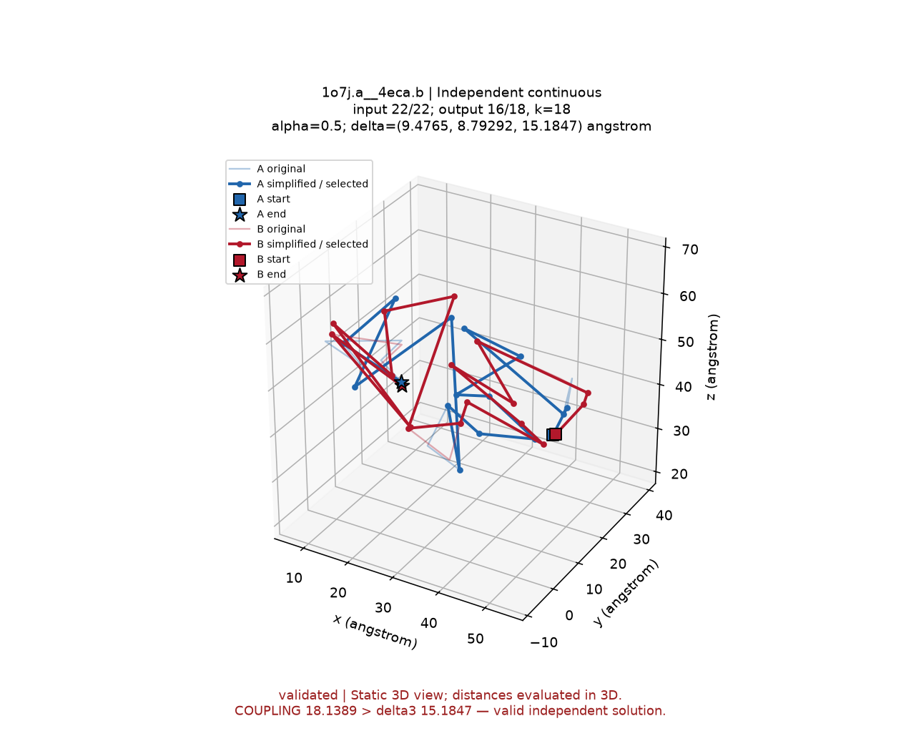
metrics + bounds + provenance · attempt files · raw result · validation · PDF
output/paper_v1/coverage_extension/slots/01/attempts/coverage01_d94227c44bea4b4dbb3c4cbc789da96b1o7j.a__4eca.b — Independent discrete
protein | 1o7j.a__4eca.b | Independent discrete | validated | new single observation
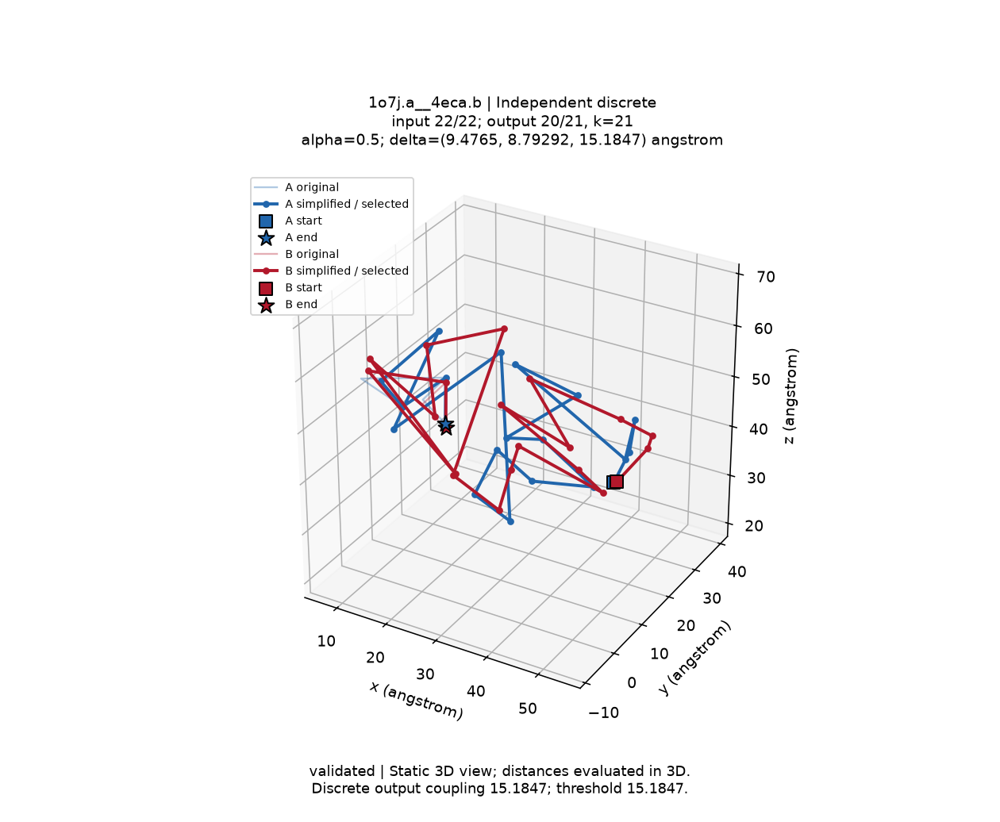
metrics + bounds + provenance · attempt files · raw result · validation · PDF
output/paper_v1/coverage_extension/slots/02/attempts/coverage02_4da3238292e54b4999fe790bf1e2586a1o7j.a__4eca.b — CPS-2F
protein | 1o7j.a__4eca.b | CPS-2F | validated | new single observation
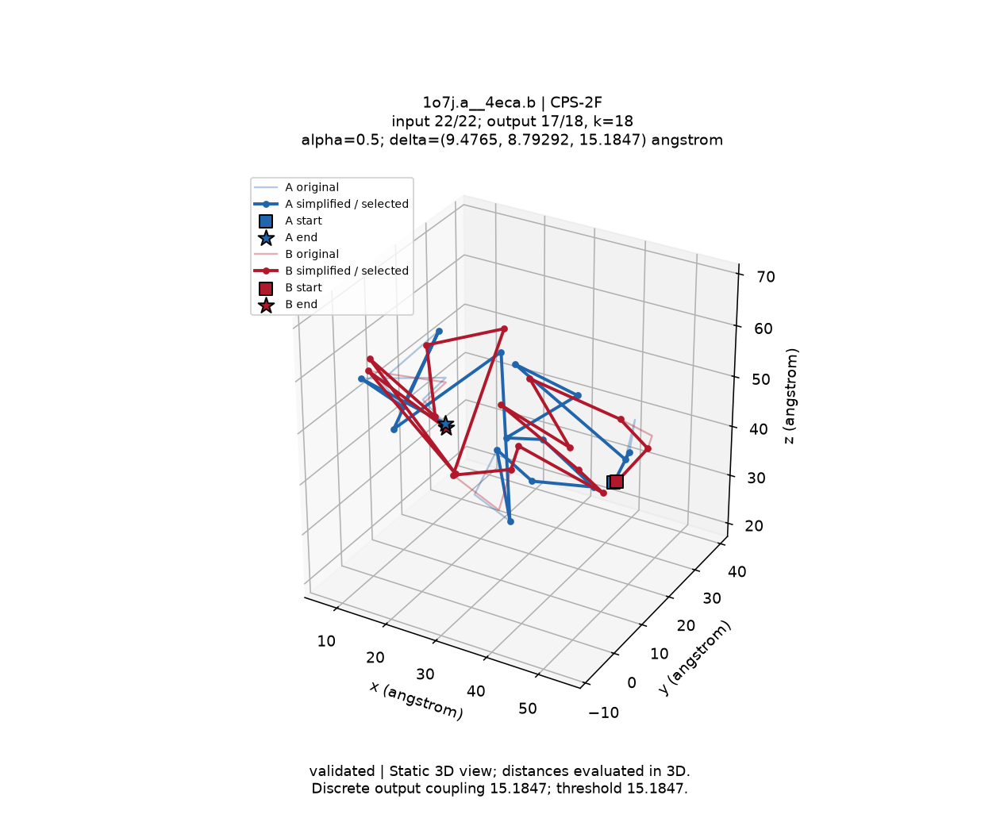
metrics + bounds + provenance · attempt files · raw result · validation · PDF
output/paper_v1/coverage_extension/slots/03/attempts/coverage03_7089725cc44342a1bffd2ef8ac5f17a31o7j.a__4eca.b — CPS-3F
protein | 1o7j.a__4eca.b | CPS-3F | validated | new single observation
metrics + bounds + provenance · attempt files · raw result · validation · PDF
output/paper_v1/coverage_extension/slots/04/attempts/coverage04_b29e35efdd404a5b9a18e13afa304f941o7j.a__4eca.c — Independent continuous
protein | 1o7j.a__4eca.c | Independent continuous | validated | new single observation
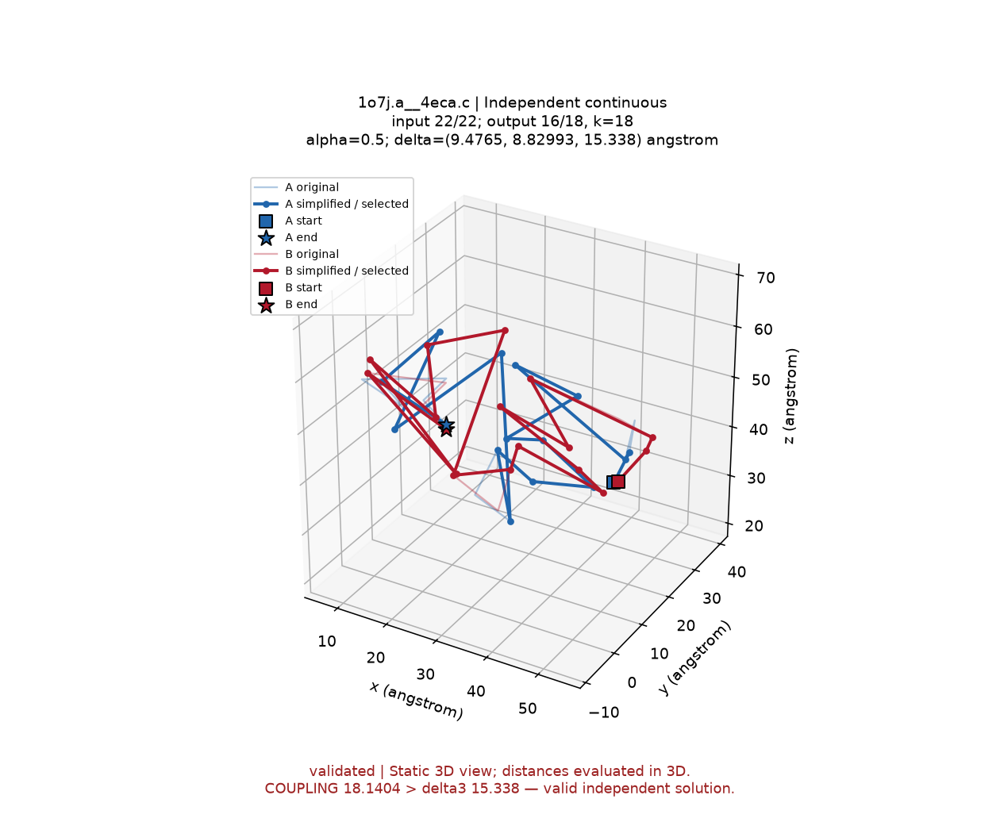
metrics + bounds + provenance · attempt files · raw result · validation · PDF
output/paper_v1/coverage_extension/slots/05/attempts/coverage05_e9c41696ba26406aaebbe392d840bf8b1o7j.a__4eca.c — Independent discrete
protein | 1o7j.a__4eca.c | Independent discrete | validated | new single observation
metrics + bounds + provenance · attempt files · raw result · validation · PDF
output/paper_v1/coverage_extension/slots/06/attempts/coverage06_b0d1afea28de4991a07496944c419dce1o7j.a__4eca.c — CPS-2F
protein | 1o7j.a__4eca.c | CPS-2F | validated | new single observation
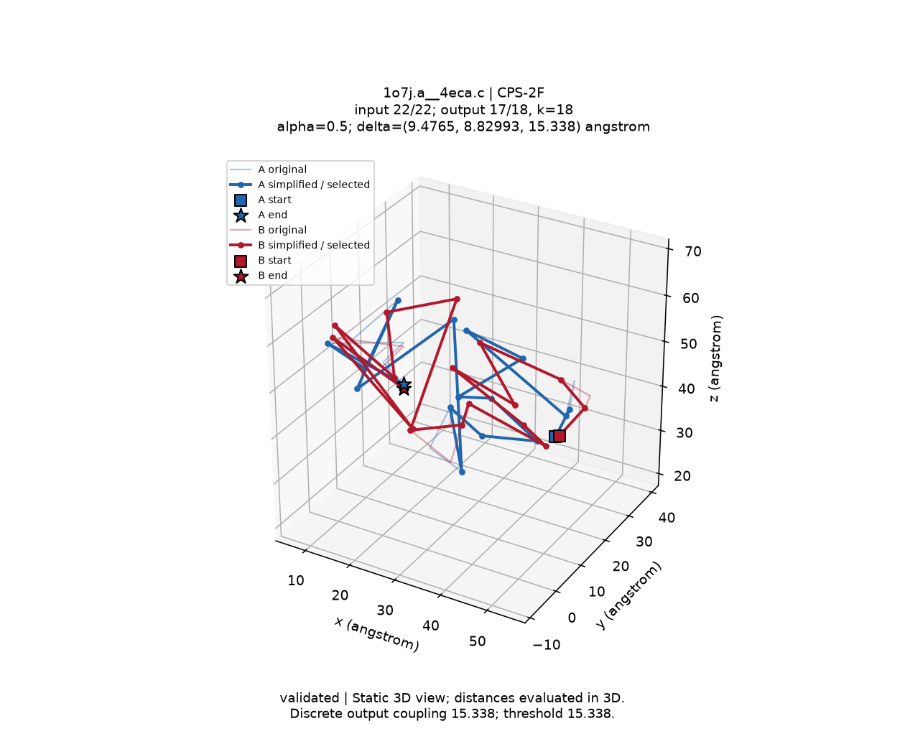
metrics + bounds + provenance · attempt files · raw result · validation · PDF
output/paper_v1/coverage_extension/slots/07/attempts/coverage07_0f8bde73980c4f1788a9ad0fca35b21e1o7j.a__4eca.c — CPS-3F
protein | 1o7j.a__4eca.c | CPS-3F | validated | new single observation
metrics + bounds + provenance · attempt files · raw result · validation · PDF
output/paper_v1/coverage_extension/slots/08/attempts/coverage08_0414cf2ed27848009d87d0c4750feb501o7j.a__1wls.a — Independent continuous
protein | 1o7j.a__1wls.a | Independent continuous | validated | new single observation
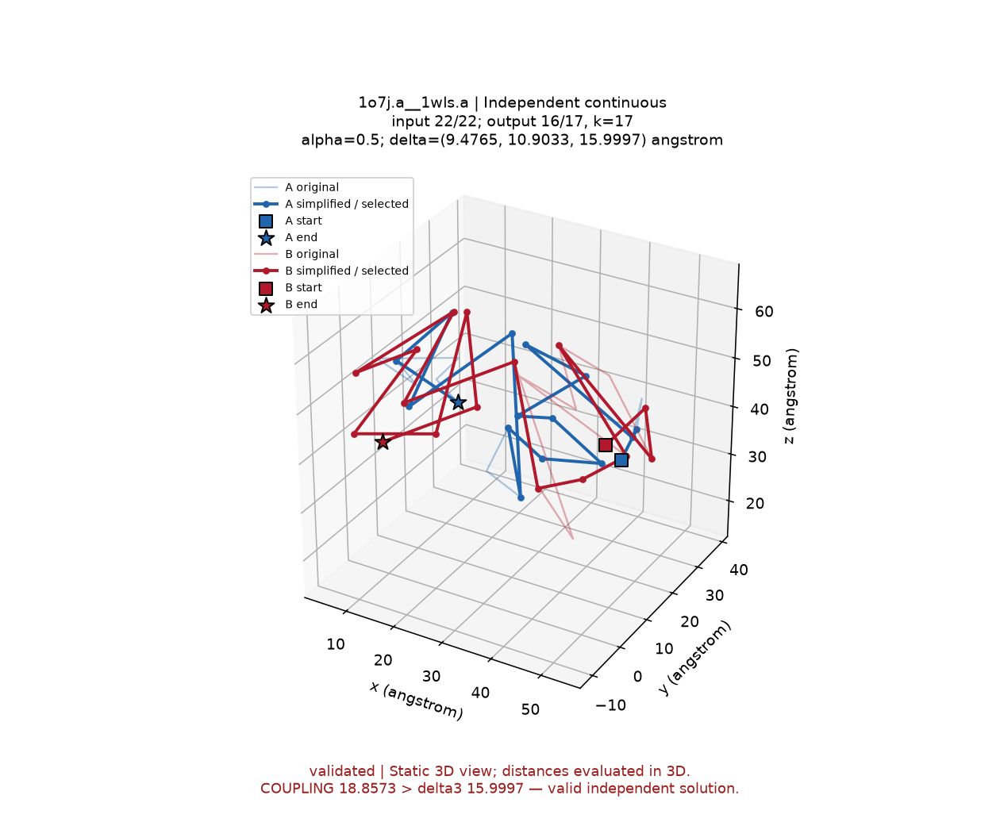
metrics + bounds + provenance · attempt files · raw result · validation · PDF
output/paper_v1/coverage_extension/slots/13/attempts/coverage13_41fcd0da9a4a4280922d252b03f840e91o7j.a__1wls.a — Independent discrete
protein | 1o7j.a__1wls.a | Independent discrete | validated | new single observation
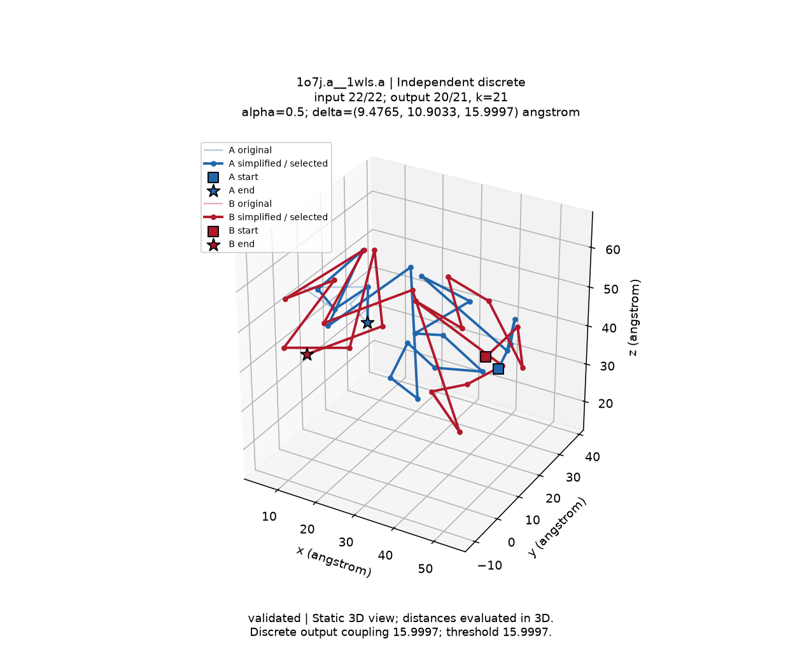
metrics + bounds + provenance · attempt files · raw result · validation · PDF
output/paper_v1/coverage_extension/slots/14/attempts/coverage14_aa74ac1027974521b27b4c9499a168711o7j.a__1wls.a — CPS-2F
protein | 1o7j.a__1wls.a | CPS-2F | validated | new single observation
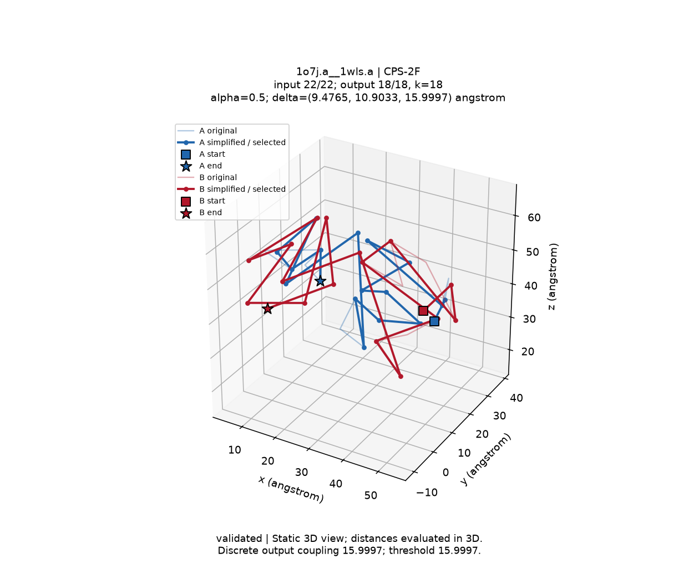
metrics + bounds + provenance · attempt files · raw result · validation · PDF
output/paper_v1/coverage_extension/slots/15/attempts/coverage15_6d6dba71c8234043ad070d96c7f676bc1o7j.a__1wls.a — CPS-3F
protein | 1o7j.a__1wls.a | CPS-3F | validated | new single observation
metrics + bounds + provenance · attempt files · raw result · validation · PDF
output/paper_v1/coverage_extension/slots/16/attempts/coverage16_bf733beeb810407eb88685f8227c4df51o7j.a__2eq5.a — Independent continuous
protein | 1o7j.a__2eq5.a | Independent continuous | validated | new single observation
metrics + bounds + provenance · attempt files · raw result · validation · PDF
output/paper_v1/coverage_extension/slots/17/attempts/coverage17_2b267a35c7a64366acef9698b042dc8e1o7j.a__2eq5.a — Independent discrete
protein | 1o7j.a__2eq5.a | Independent discrete | validated | new single observation
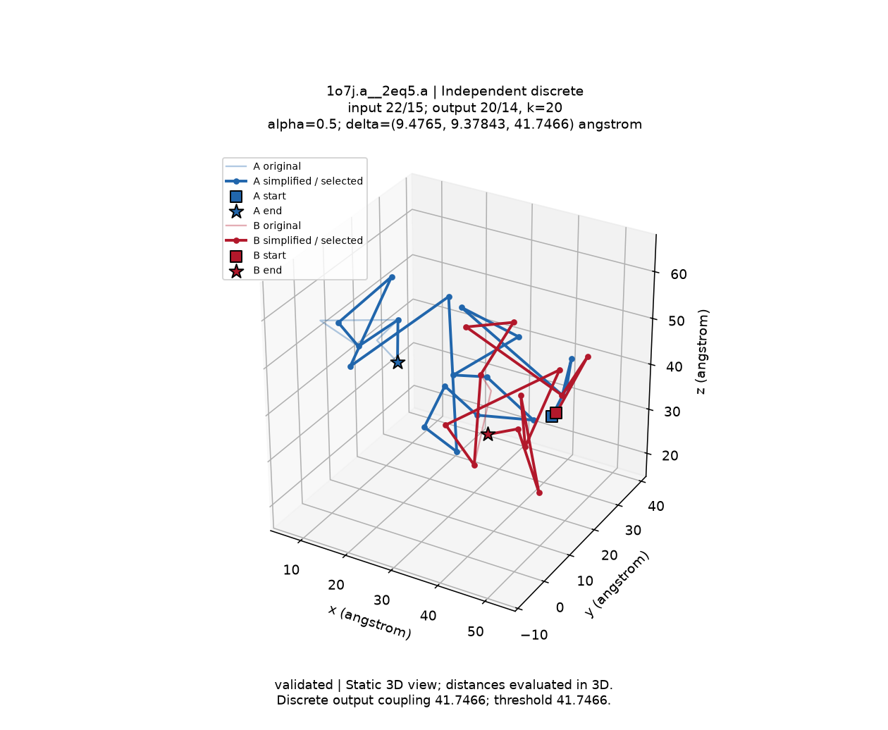
metrics + bounds + provenance · attempt files · raw result · validation · PDF
output/paper_v1/coverage_extension/slots/18/attempts/coverage18_03de6fceb50e42609b8733fb13512a761o7j.a__2eq5.a — CPS-2F
protein | 1o7j.a__2eq5.a | CPS-2F | validated | new single observation
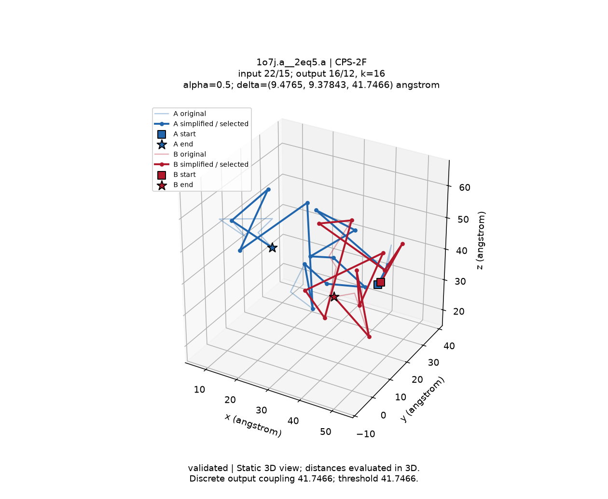
metrics + bounds + provenance · attempt files · raw result · validation · PDF
output/paper_v1/coverage_extension/slots/19/attempts/coverage19_2a8ba5eb34294f84ab6d2c2c6d7fce1b1o7j.a__2eq5.a — CPS-3F
protein | 1o7j.a__2eq5.a | CPS-3F | validated | new single observation
metrics + bounds + provenance · attempt files · raw result · validation · PDF
output/paper_v1/coverage_extension/slots/20/attempts/coverage20_892755f8079b42358bd7ac263683db501o7j.a__2zsk.a — Independent continuous
protein | 1o7j.a__2zsk.a | Independent continuous | validated | new single observation
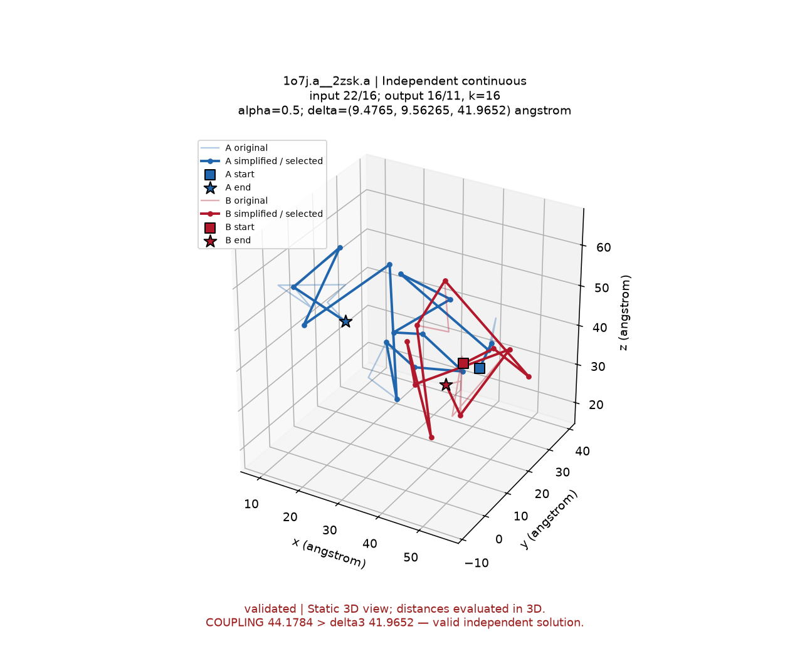
metrics + bounds + provenance · attempt files · raw result · validation · PDF
output/paper_v1/coverage_extension/slots/21/attempts/coverage21_d77ce56d9d464dd9b904b06961091e991o7j.a__2zsk.a — Independent discrete
protein | 1o7j.a__2zsk.a | Independent discrete | validated | new single observation
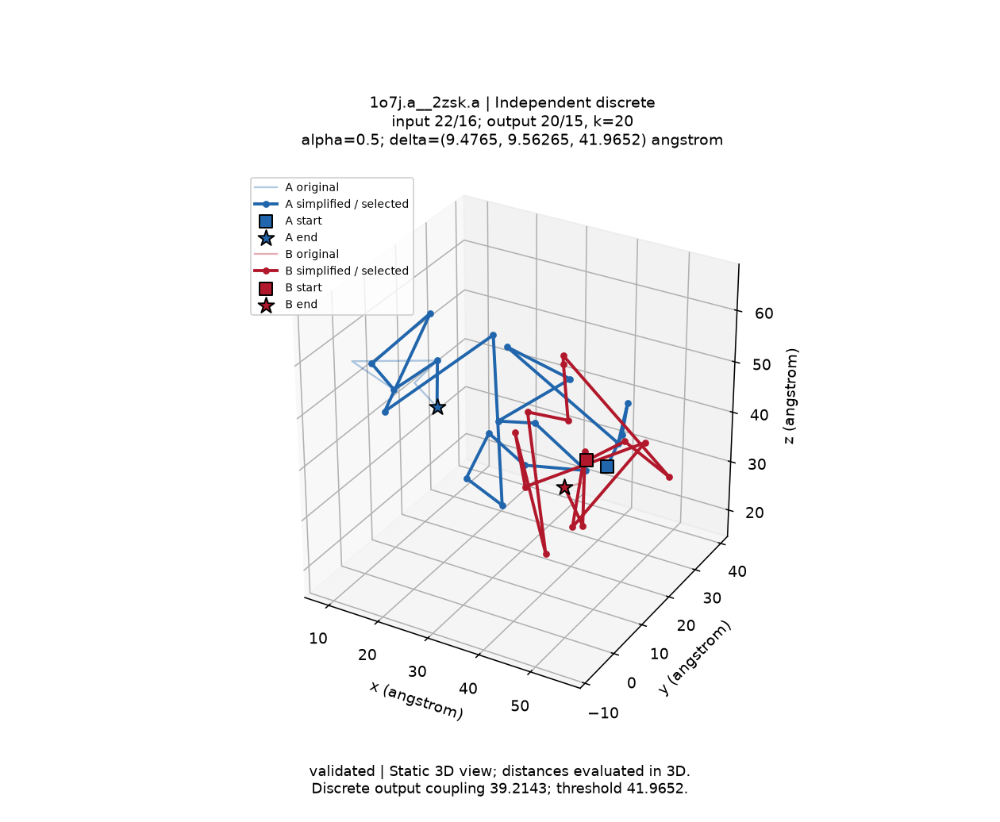
metrics + bounds + provenance · attempt files · raw result · validation · PDF
output/paper_v1/coverage_extension/slots/22/attempts/coverage22_25844e86d83b4e1586207da24869d0391o7j.a__2zsk.a — CPS-2F
protein | 1o7j.a__2zsk.a | CPS-2F | validated | new single observation
metrics + bounds + provenance · attempt files · raw result · validation · PDF
output/paper_v1/coverage_extension/slots/23/attempts/coverage23_53501d6800ad40f29d6023390210ffa31o7j.a__2zsk.a — CPS-3F
protein | 1o7j.a__2zsk.a | CPS-3F | validated | new single observation
metrics + bounds + provenance · attempt files · raw result · validation · PDF
output/paper_v1/coverage_extension/slots/24/attempts/coverage24_d75f107610ba40c2b62cf918565a89721o7j.a__1zq1.a — Independent continuous
protein | 1o7j.a__1zq1.a | Independent continuous | validated | new single observation
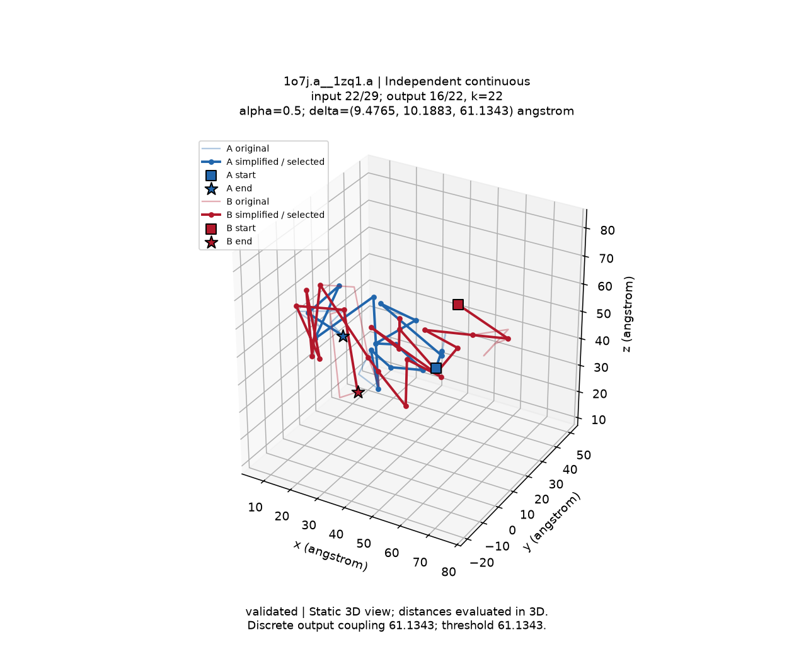
metrics + bounds + provenance · attempt files · raw result · validation · PDF
output/paper_v1/coverage_extension/slots/25/attempts/coverage25_1a1925f405bb4047a6a2670861c40e3b1o7j.a__1zq1.a — Independent discrete
protein | 1o7j.a__1zq1.a | Independent discrete | validated | new single observation
metrics + bounds + provenance · attempt files · raw result · validation · PDF
output/paper_v1/coverage_extension/slots/26/attempts/coverage26_a307706a595c449f84beeaac5092d6251o7j.a__1zq1.a — CPS-2F
protein | 1o7j.a__1zq1.a | CPS-2F | validated | new single observation
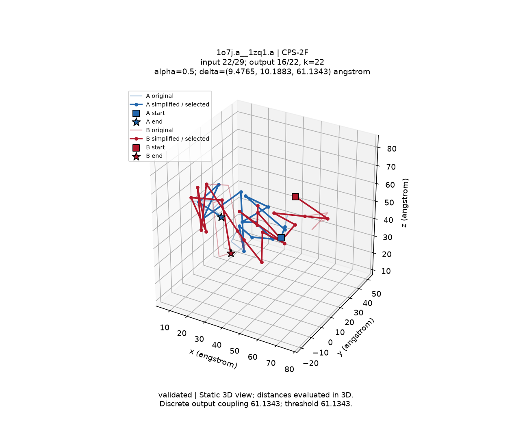
metrics + bounds + provenance · attempt files · raw result · validation · PDF
output/paper_v1/coverage_extension/slots/27/attempts/coverage27_cbb21cb995de4210aef66e964765c41a1o7j.a__1zq1.a — CPS-3F
protein | 1o7j.a__1zq1.a | CPS-3F | validated | new single observation
metrics + bounds + provenance · attempt files · raw result · validation · PDF
output/paper_v1/coverage_extension/slots/28/attempts/coverage28_6a4c4e4d17944c9aa27d9c60ad70176d1o7j.a__2fep.a — Independent continuous
protein | 1o7j.a__2fep.a | Independent continuous | validated | new single observation
metrics + bounds + provenance · attempt files · raw result · validation · PDF
output/paper_v1/coverage_extension/slots/33/attempts/coverage33_3dd80575abde47569418e2ac247fc8741o7j.a__2fep.a — Independent discrete
protein | 1o7j.a__2fep.a | Independent discrete | validated | new single observation
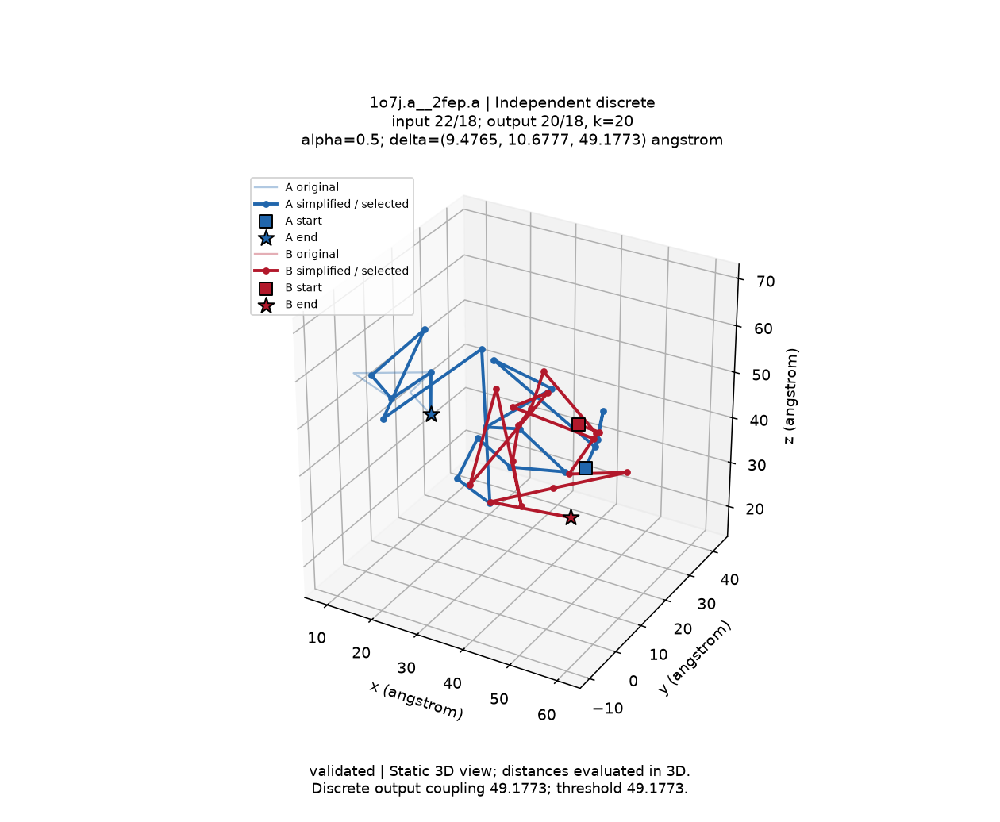
metrics + bounds + provenance · attempt files · raw result · validation · PDF
output/paper_v1/coverage_extension/slots/34/attempts/coverage34_29798453940b45bfa82792925643d00e1o7j.a__2fep.a — CPS-2F
protein | 1o7j.a__2fep.a | CPS-2F | validated | new single observation
metrics + bounds + provenance · attempt files · raw result · validation · PDF
output/paper_v1/coverage_extension/slots/35/attempts/coverage35_be5a003f7d1b4180b96e8af88864666d1o7j.a__2fep.a — CPS-3F
protein | 1o7j.a__2fep.a | CPS-3F | validated | new single observation
metrics + bounds + provenance · attempt files · raw result · validation · PDF
output/paper_v1/coverage_extension/slots/36/attempts/coverage36_d4c553cd3aee4672aa7eef1f70c1d476AL182011__AL061926 — Independent continuous
hurricane | AL182011__AL061926 | Independent continuous | validated | new single observation
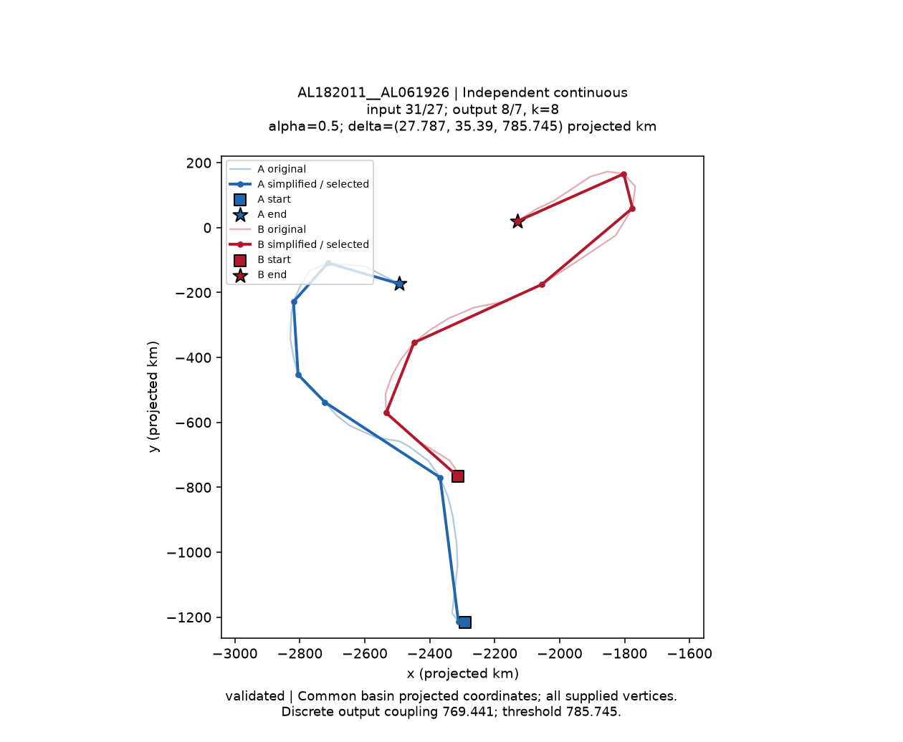
metrics + bounds + provenance · attempt files · raw result · validation · PDF
output/paper_v1/coverage_extension/slots/37/attempts/coverage37_e8c06401f75e4c8696c1b66264d53a0eAL182011__AL061926 — Independent discrete
hurricane | AL182011__AL061926 | Independent discrete | validated | new single observation
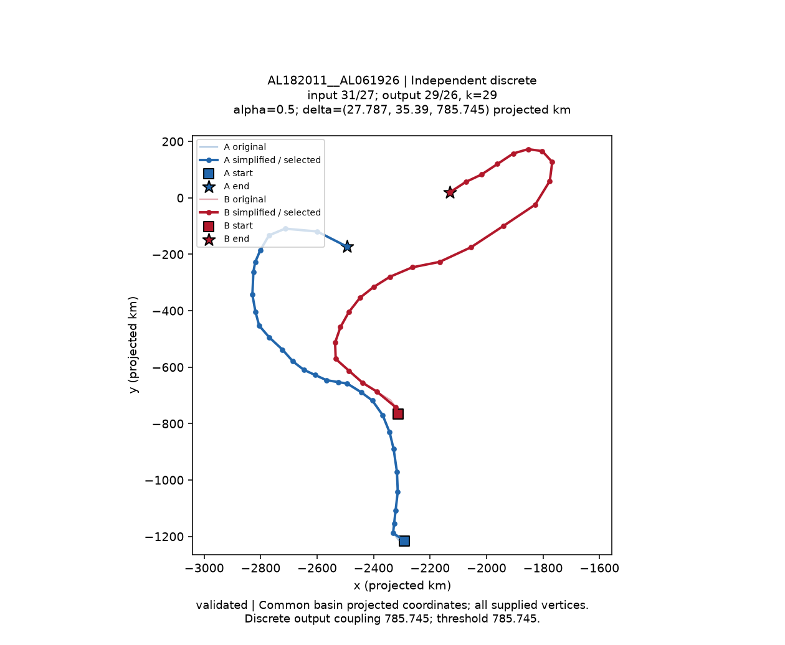
metrics + bounds + provenance · attempt files · raw result · validation · PDF
output/paper_v1/coverage_extension/slots/38/attempts/coverage38_868a5ccfc0364d0da4167d131a116041AL182011__AL061926 — CPS-2F
hurricane | AL182011__AL061926 | CPS-2F | validated | new single observation
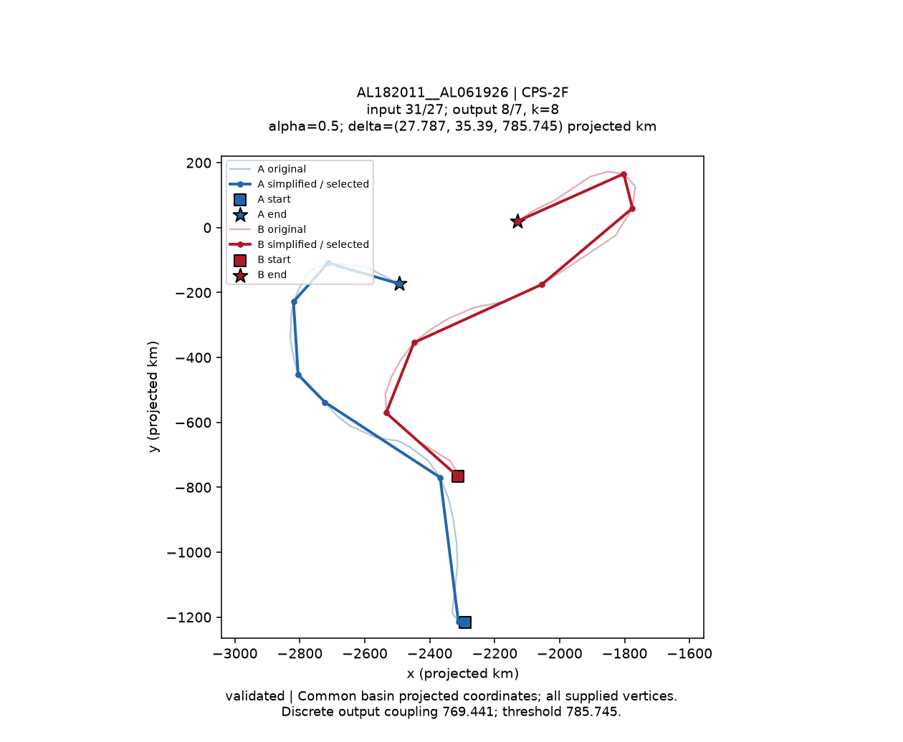
metrics + bounds + provenance · attempt files · raw result · validation · PDF
output/paper_v1/coverage_extension/slots/39/attempts/coverage39_d0000f0707ba4c0fa5783226237f953bAL182011__AL061926 — CPS-3F
hurricane | AL182011__AL061926 | CPS-3F | validated | new single observation
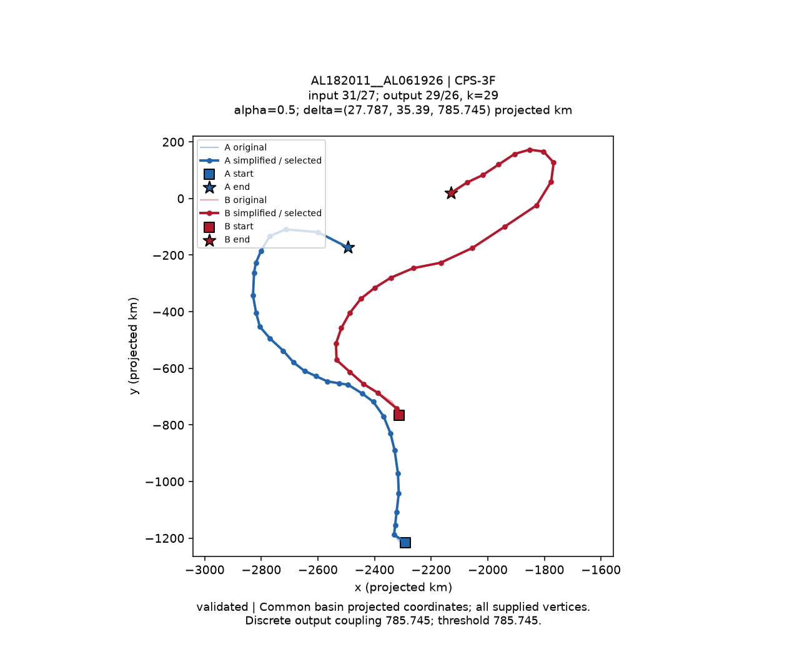
metrics + bounds + provenance · attempt files · raw result · validation · PDF
output/paper_v1/coverage_extension/slots/40/attempts/coverage40_fdf11ff49a2d482f9e9f066277b907a8EP141997__EP092000 — Independent continuous
hurricane | EP141997__EP092000 | Independent continuous | validated | new single observation
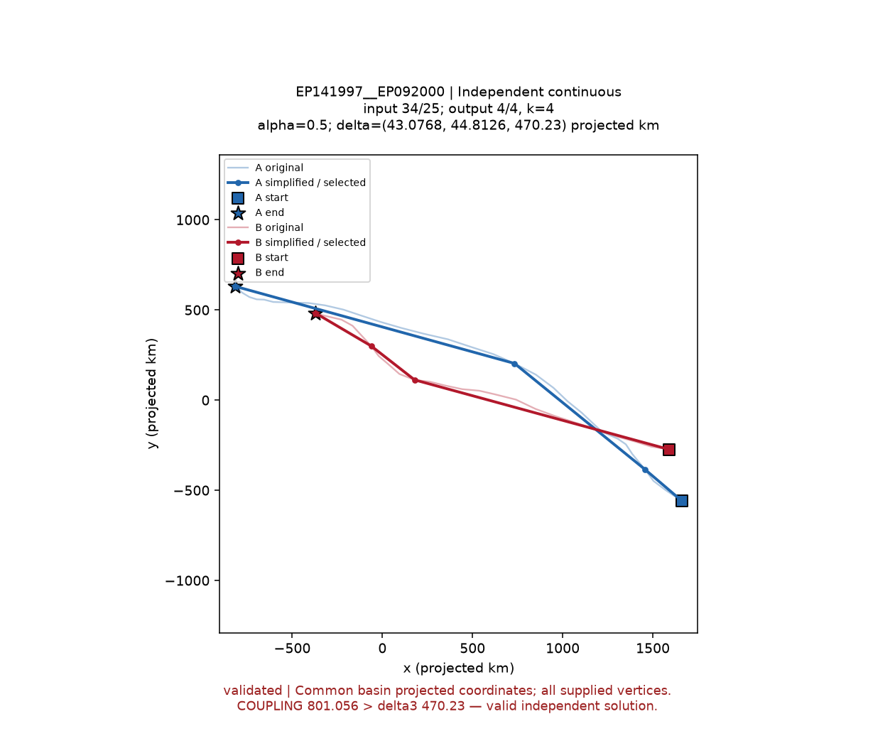
metrics + bounds + provenance · attempt files · raw result · validation · PDF
output/paper_v1/coverage_extension/slots/41/attempts/coverage41_c930292e7a4e4d4cb6db2b11e3b15108EP141997__EP092000 — Independent discrete
hurricane | EP141997__EP092000 | Independent discrete | validated | new single observation
metrics + bounds + provenance · attempt files · raw result · validation · PDF
output/paper_v1/coverage_extension/slots/42/attempts/coverage42_8d733121dc674d369fd707ab80d2e2d2EP141997__EP092000 — CPS-2F
hurricane | EP141997__EP092000 | CPS-2F | validated | new single observation
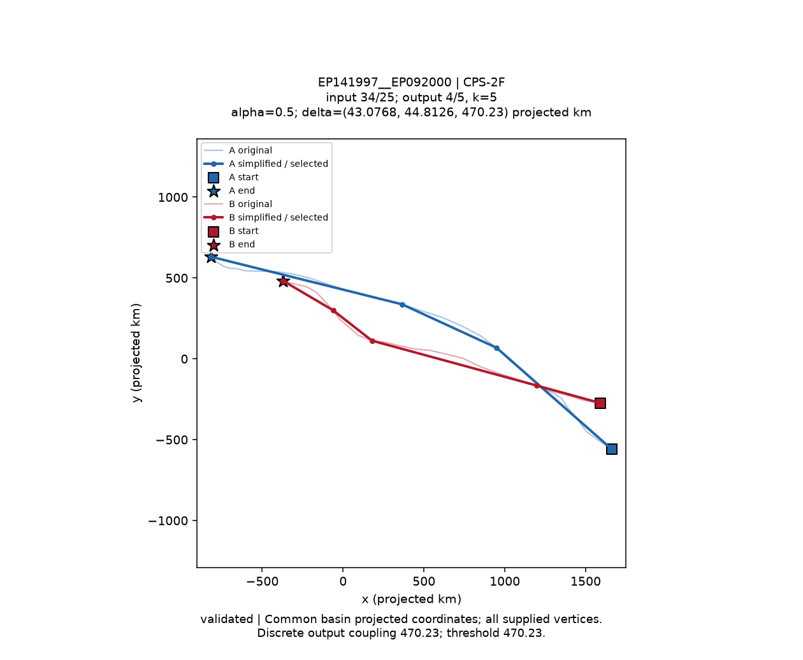
metrics + bounds + provenance · attempt files · raw result · validation · PDF
output/paper_v1/coverage_extension/slots/43/attempts/coverage43_8541b5d5d53f44b4949584f38e7422e3EP141997__EP092000 — CPS-3F
hurricane | EP141997__EP092000 | CPS-3F | validated | new single observation
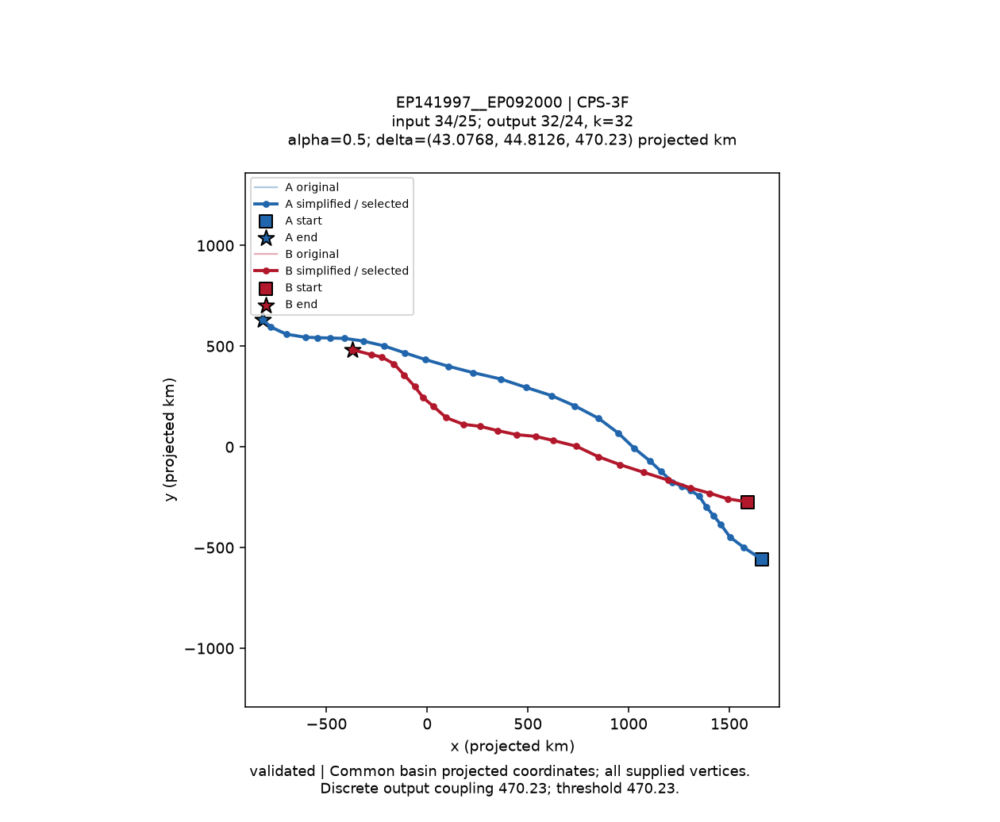
metrics + bounds + provenance · attempt files · raw result · validation · PDF
output/paper_v1/coverage_extension/slots/44/attempts/coverage44_0c3d4777937a42ce9ef5c3dd1a5a157bEP211990__EP152008 — Independent continuous
hurricane | EP211990__EP152008 | Independent continuous | validated | new single observation
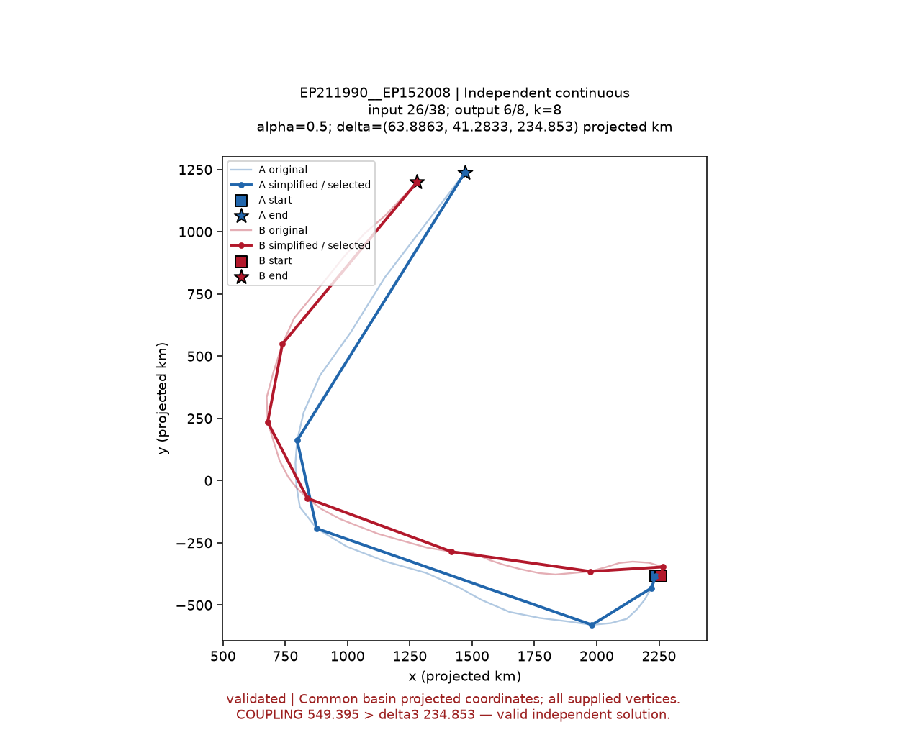
metrics + bounds + provenance · attempt files · raw result · validation · PDF
output/paper_v1/coverage_extension/slots/45/attempts/coverage45_612251e69fa84657ad3c751919119474EP211990__EP152008 — Independent discrete
hurricane | EP211990__EP152008 | Independent discrete | validated | new single observation
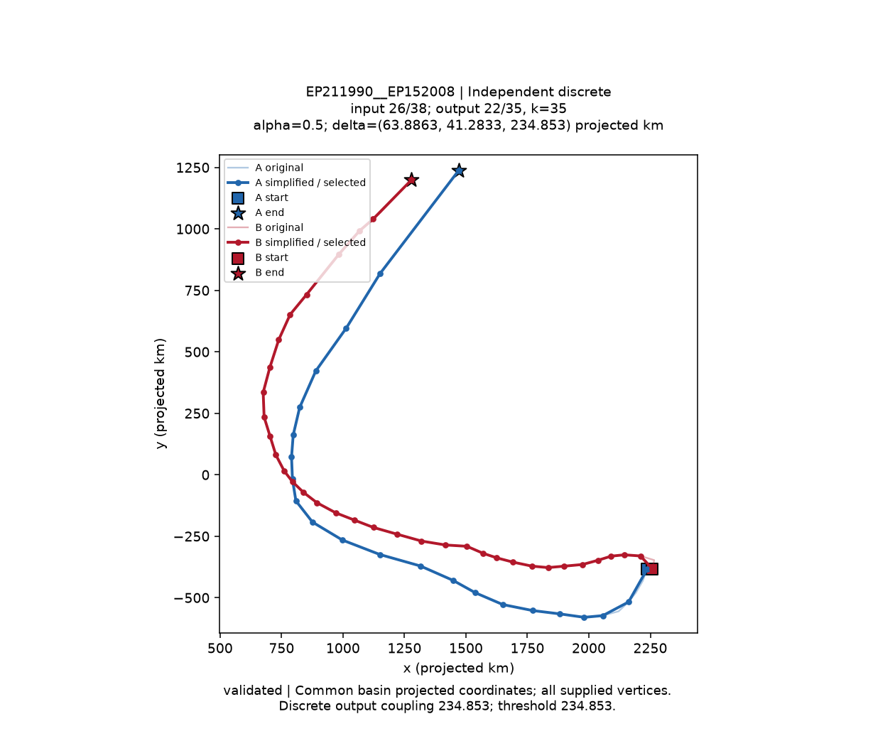
metrics + bounds + provenance · attempt files · raw result · validation · PDF
output/paper_v1/coverage_extension/slots/46/attempts/coverage46_60cd8286ba1a48e696eff4c9ede95c08EP211990__EP152008 — CPS-2F
hurricane | EP211990__EP152008 | CPS-2F | validated | new single observation
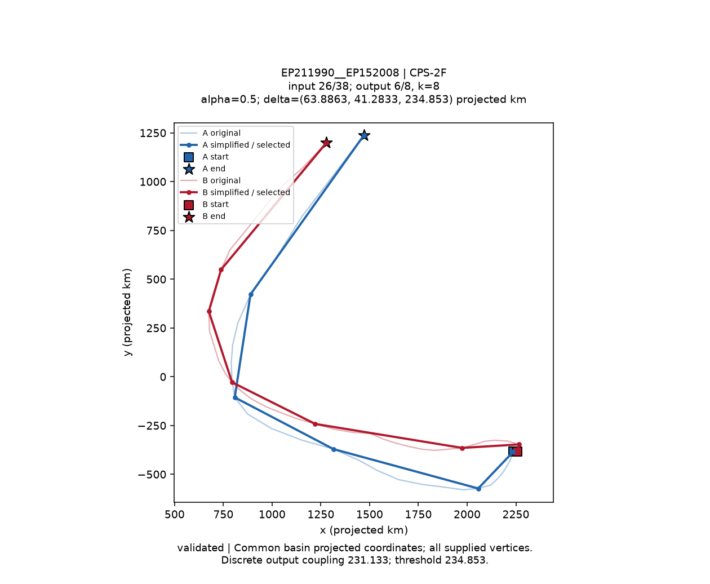
metrics + bounds + provenance · attempt files · raw result · validation · PDF
output/paper_v1/coverage_extension/slots/47/attempts/coverage47_30c8adcf99e14ab09a9650bae3cbb95bEP211990__EP152008 — CPS-3F
hurricane | EP211990__EP152008 | CPS-3F | validated | new single observation
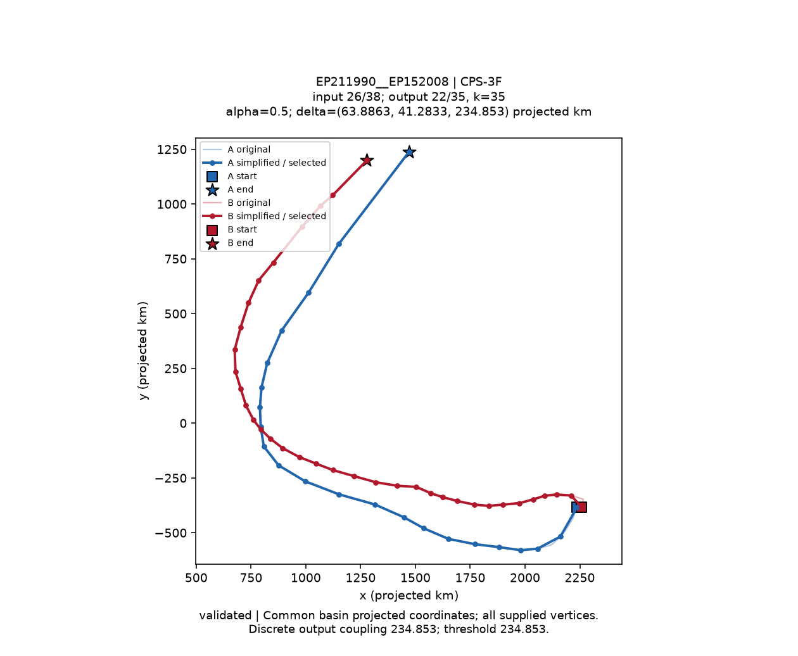
metrics + bounds + provenance · attempt files · raw result · validation · PDF
output/paper_v1/coverage_extension/slots/48/attempts/coverage48_362b69f475c64b18bc40230adac5213fEP041981__EP211992 — Independent continuous
hurricane | EP041981__EP211992 | Independent continuous | validated | new single observation
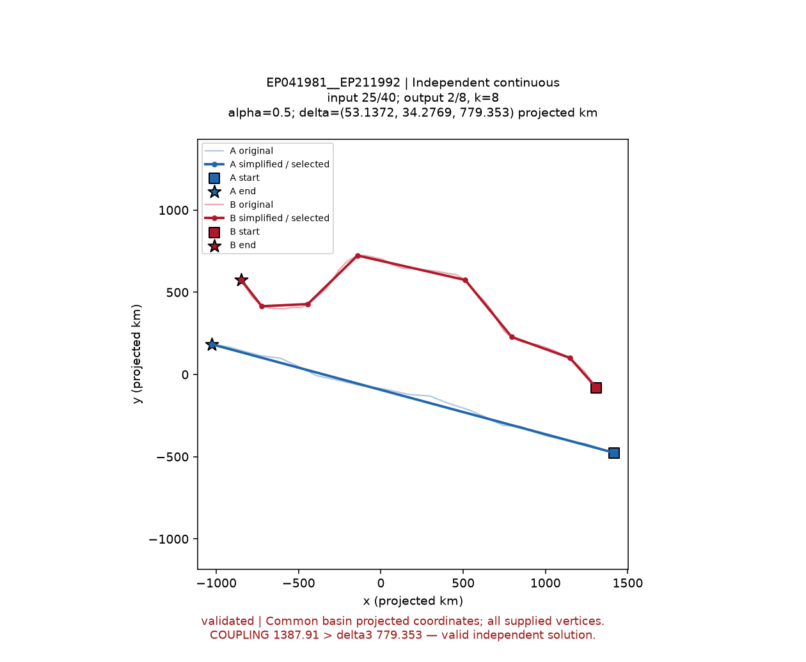
metrics + bounds + provenance · attempt files · raw result · validation · PDF
output/paper_v1/coverage_extension/slots/49/attempts/coverage49_755aebfa9e9a4261add3f85b1bfc1ba0EP041981__EP211992 — Independent discrete
hurricane | EP041981__EP211992 | Independent discrete | validated | new single observation
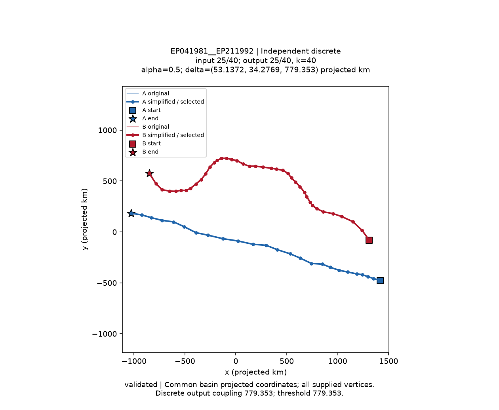
metrics + bounds + provenance · attempt files · raw result · validation · PDF
output/paper_v1/coverage_extension/slots/50/attempts/coverage50_bcd6691cbb2646cbb129b441ac02fd50EP041981__EP211992 — CPS-2F
hurricane | EP041981__EP211992 | CPS-2F | validated | new single observation
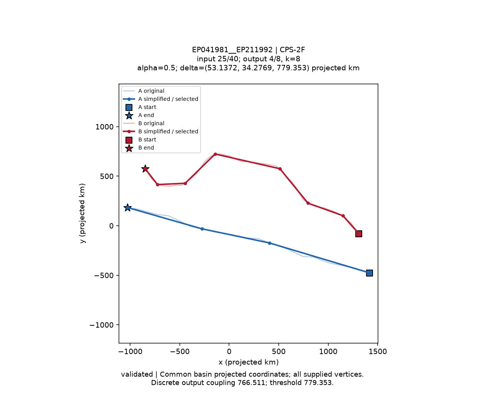
metrics + bounds + provenance · attempt files · raw result · validation · PDF
output/paper_v1/coverage_extension/slots/51/attempts/coverage51_2c8472d7d1364a8f98e47021d71f6caeEP041981__EP211992 — CPS-3F
hurricane | EP041981__EP211992 | CPS-3F | validated | new single observation
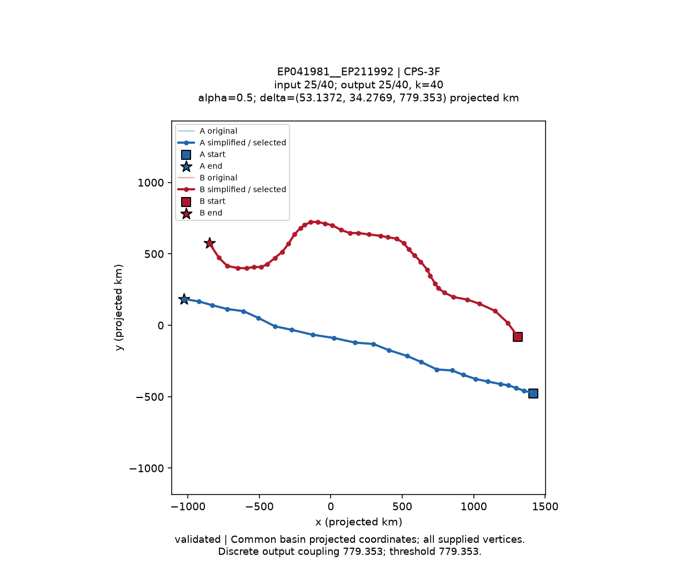
metrics + bounds + provenance · attempt files · raw result · validation · PDF
output/paper_v1/coverage_extension/slots/52/attempts/coverage52_7629beed627b42709681a8a5ffb84a23AL181887__AL091888 — Independent continuous
hurricane | AL181887__AL091888 | Independent continuous | validated | new single observation
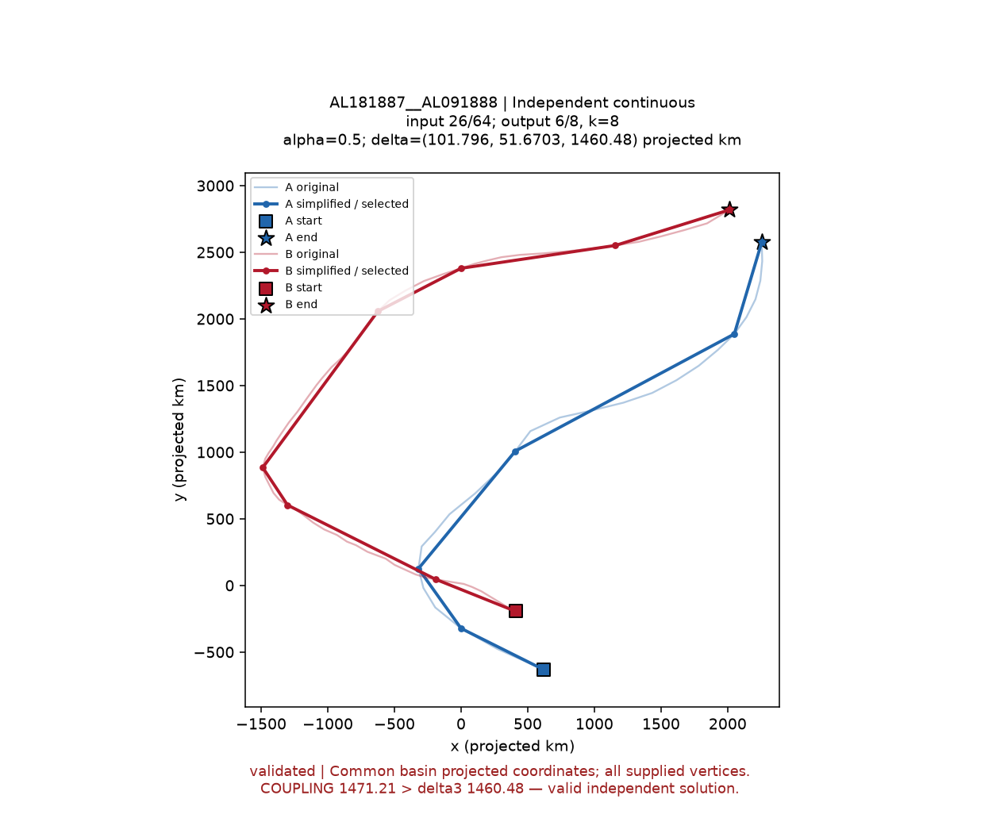
metrics + bounds + provenance · attempt files · raw result · validation · PDF
output/paper_v1/coverage_extension/slots/53/attempts/coverage53_9ef2670886bc41428191e14a2da3ecafAL181887__AL091888 — Independent discrete
hurricane | AL181887__AL091888 | Independent discrete | validated | new single observation
metrics + bounds + provenance · attempt files · raw result · validation · PDF
output/paper_v1/coverage_extension/slots/54/attempts/coverage54_5223631fbf504f0abb780d0594d0998eAL181887__AL091888 — CPS-2F
hurricane | AL181887__AL091888 | CPS-2F | validated | new single observation
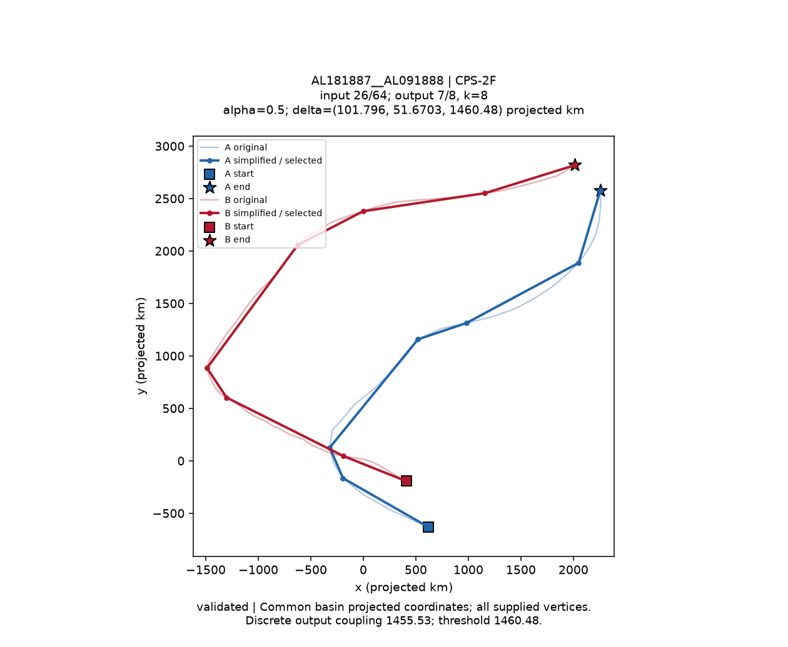
metrics + bounds + provenance · attempt files · raw result · validation · PDF
output/paper_v1/coverage_extension/slots/55/attempts/coverage55_36facae9ae4c474291ca5ad092b5f61aAL181887__AL091888 — CPS-3F
hurricane | AL181887__AL091888 | CPS-3F | validated | new single observation
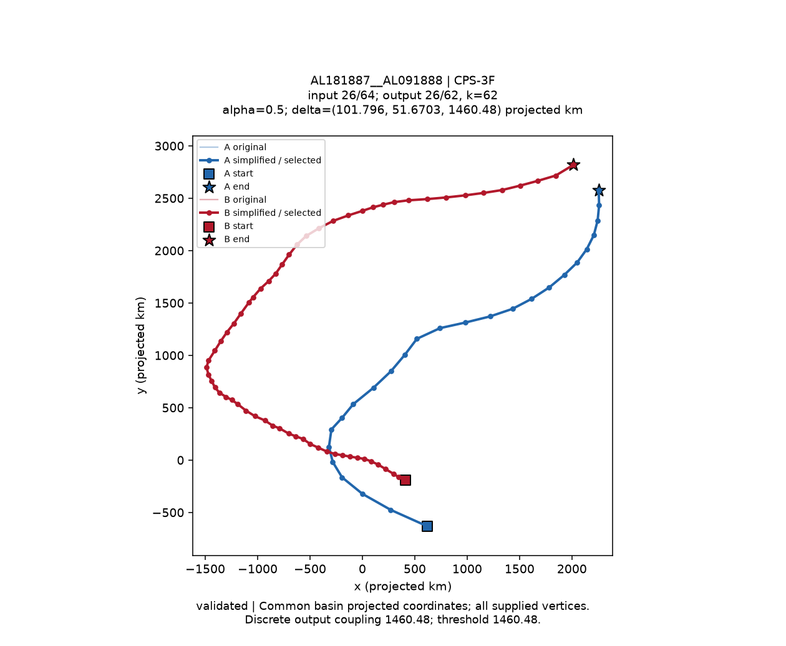
metrics + bounds + provenance · attempt files · raw result · validation · PDF
output/paper_v1/coverage_extension/slots/56/attempts/coverage56_bae8233866794268a95ea28a702e30c71o7j.a__1qd1.b — Independent continuous
protein | 1o7j.a__1qd1.b | Independent continuous | validated | reused cohort observation
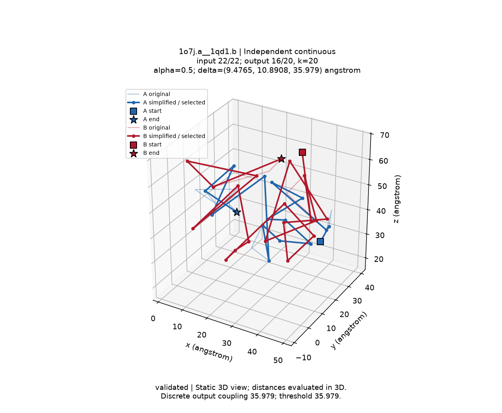
metrics + bounds + provenance · attempt files · raw result · validation · PDF
output/paper_v1/expanded_comparison/slots/33/attempts/expanded33_cd40b1cb287c4293b17a8c217c343bff1o7j.a__1qd1.b — Independent discrete
protein | 1o7j.a__1qd1.b | Independent discrete | validated | reused cohort observation
metrics + bounds + provenance · attempt files · raw result · validation · PDF
output/paper_v1/expanded_comparison/slots/34/attempts/expanded34_e309439661e84f828e3ac66dc0ee042a1o7j.a__1qd1.b — CPS-2F
protein | 1o7j.a__1qd1.b | CPS-2F | validated | reused cohort observation
metrics + bounds + provenance · attempt files · raw result · validation · PDF
output/paper_v1/expanded_comparison/slots/35/attempts/expanded35_4fea86cbd8a54e25b1f0959f61809ba31o7j.a__1qd1.b — CPS-3F
protein | 1o7j.a__1qd1.b | CPS-3F | validated | reused cohort observation
metrics + bounds + provenance · attempt files · raw result · validation · PDF
output/paper_v1/expanded_comparison/slots/36/attempts/expanded36_b0a6256809594ea6b52aaa2f32fc4ee91o7j.a__4eca.d — Independent continuous
protein | 1o7j.a__4eca.d | Independent continuous | validated | reused cohort observation
metrics + bounds + provenance · attempt files · raw result · validation · PDF
output/paper_v1/expanded_comparison/slots/41/attempts/expanded41_da3bf933c57344b48c76eae72c26fcc61o7j.a__4eca.d — Independent discrete
protein | 1o7j.a__4eca.d | Independent discrete | validated | reused cohort observation
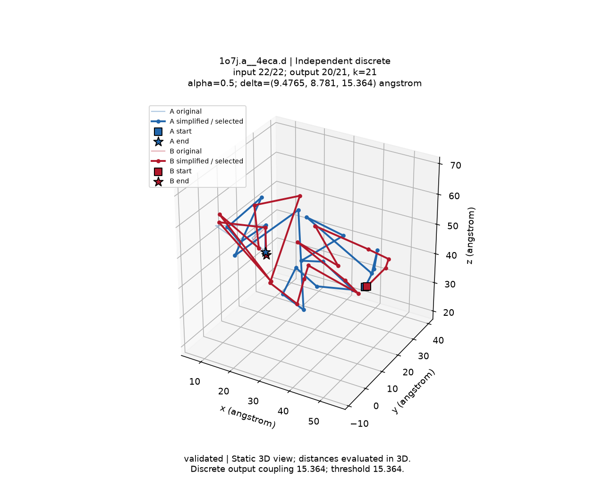
metrics + bounds + provenance · attempt files · raw result · validation · PDF
output/paper_v1/expanded_comparison/slots/42/attempts/expanded42_fd26c863622e455a9c4a6630250ec9e81o7j.a__4eca.d — CPS-2F
protein | 1o7j.a__4eca.d | CPS-2F | validated | reused cohort observation
metrics + bounds + provenance · attempt files · raw result · validation · PDF
output/paper_v1/expanded_comparison/slots/43/attempts/expanded43_11cd981519ea4c5fb33267ed28507b861o7j.a__4eca.d — CPS-3F
protein | 1o7j.a__4eca.d | CPS-3F | validated | reused cohort observation
metrics + bounds + provenance · attempt files · raw result · validation · PDF
output/paper_v1/expanded_comparison/slots/44/attempts/expanded44_6906d978a7af4dbaac36afccfffbb7721o7j.a__1toh.a — Independent continuous
protein | 1o7j.a__1toh.a | Independent continuous | validated | reused cohort observation
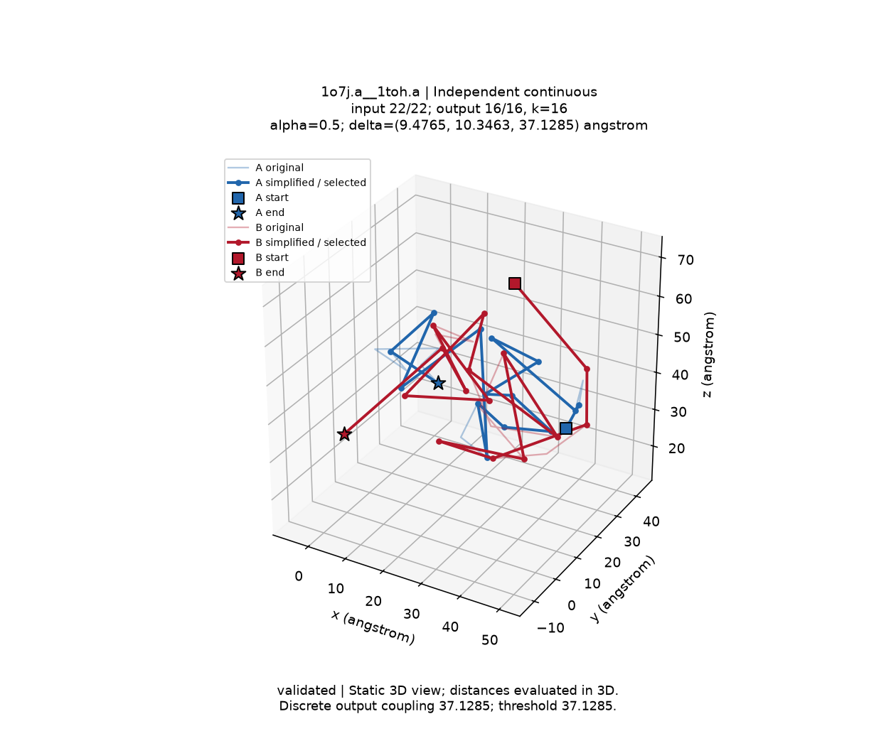
metrics + bounds + provenance · attempt files · raw result · validation · PDF
output/paper_v1/expanded_comparison/slots/49/attempts/expanded49_7091dabdfc5f49dda51a71a1734198741o7j.a__1toh.a — Independent discrete
protein | 1o7j.a__1toh.a | Independent discrete | validated | reused cohort observation
metrics + bounds + provenance · attempt files · raw result · validation · PDF
output/paper_v1/expanded_comparison/slots/50/attempts/expanded50_7157e7e5cb1a4ec9aff399f10b78208c1o7j.a__1toh.a — CPS-2F
protein | 1o7j.a__1toh.a | CPS-2F | validated | reused cohort observation
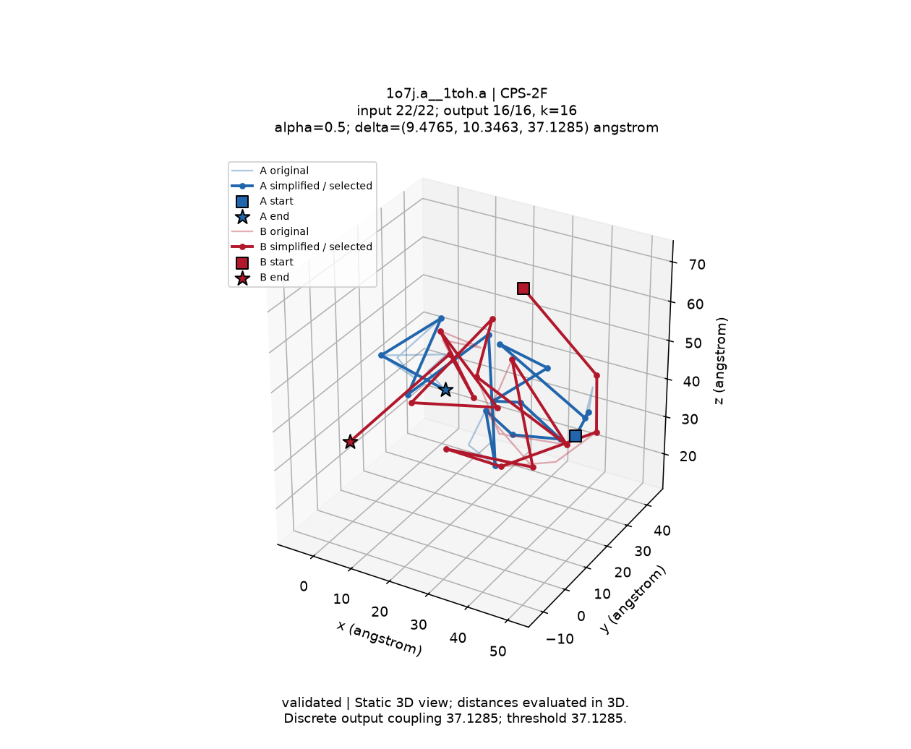
metrics + bounds + provenance · attempt files · raw result · validation · PDF
output/paper_v1/expanded_comparison/slots/51/attempts/expanded51_72e5e9926d3848e6b4761ef7165f51b51o7j.a__1toh.a — CPS-3F
protein | 1o7j.a__1toh.a | CPS-3F | validated | reused cohort observation
metrics + bounds + provenance · attempt files · raw result · validation · PDF
output/paper_v1/expanded_comparison/slots/52/attempts/expanded52_c4efe3d705014dad820831f4da89447dEP111954__EP021984 — Independent continuous
hurricane | EP111954__EP021984 | Independent continuous | validated | reused cohort observation
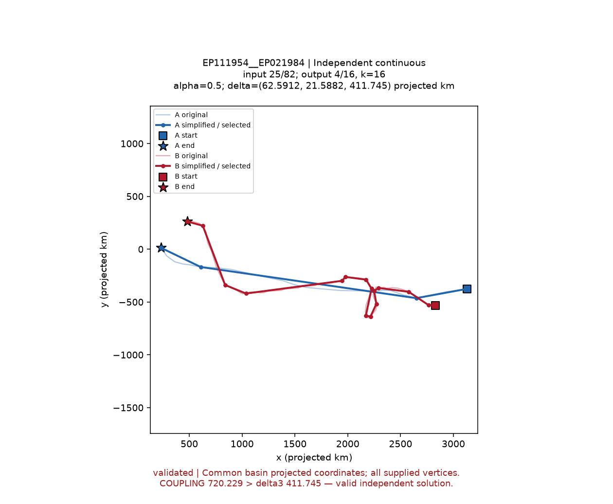
metrics + bounds + provenance · attempt files · raw result · validation · PDF
output/paper_v1/expanded_comparison/slots/57/attempts/expanded57_53aba65df4d145e491de2ca70d31b840EP111954__EP021984 — Independent discrete
hurricane | EP111954__EP021984 | Independent discrete | validated | reused cohort observation
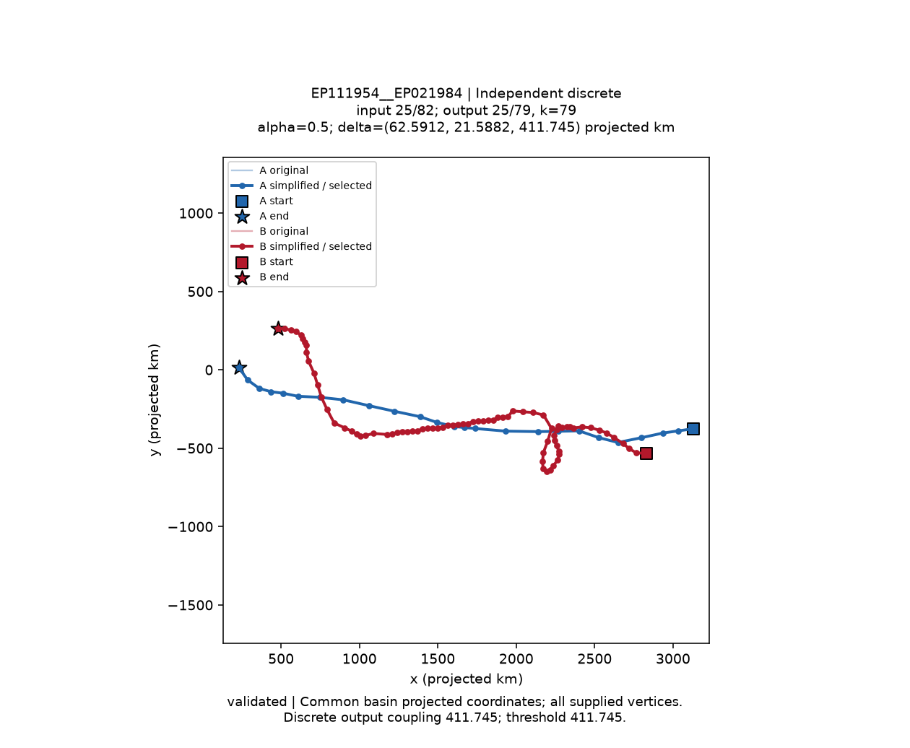
metrics + bounds + provenance · attempt files · raw result · validation · PDF
output/paper_v1/expanded_comparison/slots/58/attempts/expanded58_cc8c30ff1d1a48f7a0643c0286c3d20eEP111954__EP021984 — CPS-2F
hurricane | EP111954__EP021984 | CPS-2F | validated | reused cohort observation
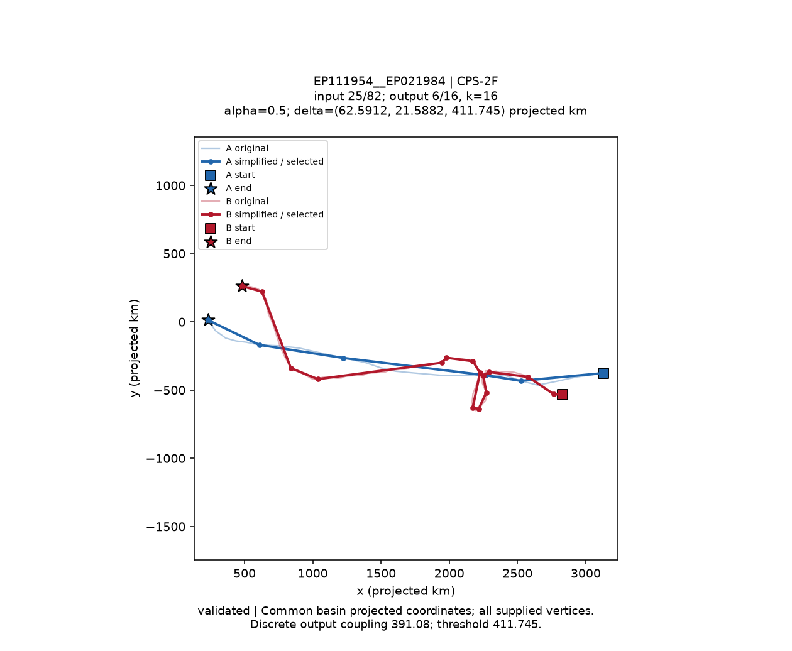
metrics + bounds + provenance · attempt files · raw result · validation · PDF
output/paper_v1/expanded_comparison/slots/59/attempts/expanded59_1a41930b343049c19e4c4044b1d1680eEP111954__EP021984 — CPS-3F
hurricane | EP111954__EP021984 | CPS-3F | validated | reused cohort observation
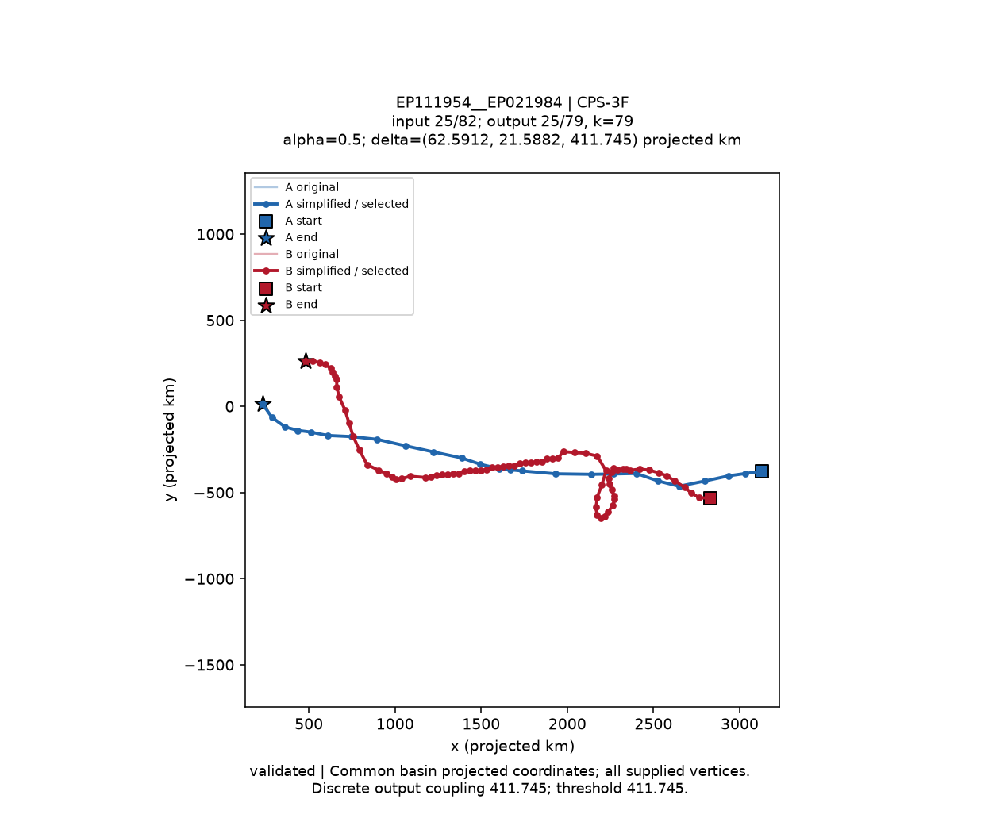
metrics + bounds + provenance · attempt files · raw result · validation · PDF
output/paper_v1/expanded_comparison/slots/60/attempts/expanded60_d1a5c27accb04d57bcfa4d365d99a606AL072006__AL011900 — Independent continuous
hurricane | AL072006__AL011900 | Independent continuous | validated | reused cohort observation
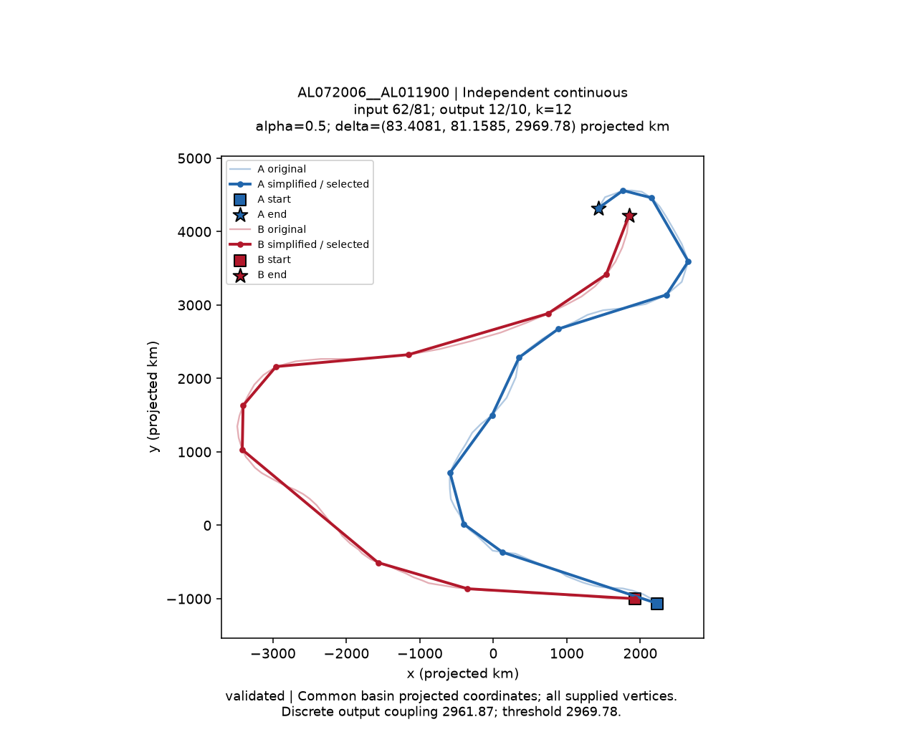
metrics + bounds + provenance · attempt files · raw result · validation · PDF
output/paper_v1/expanded_comparison/slots/65/attempts/expanded65_41947a210b8b496eaeaac9755feae1a4AL072006__AL011900 — Independent discrete
hurricane | AL072006__AL011900 | Independent discrete | validated | reused cohort observation
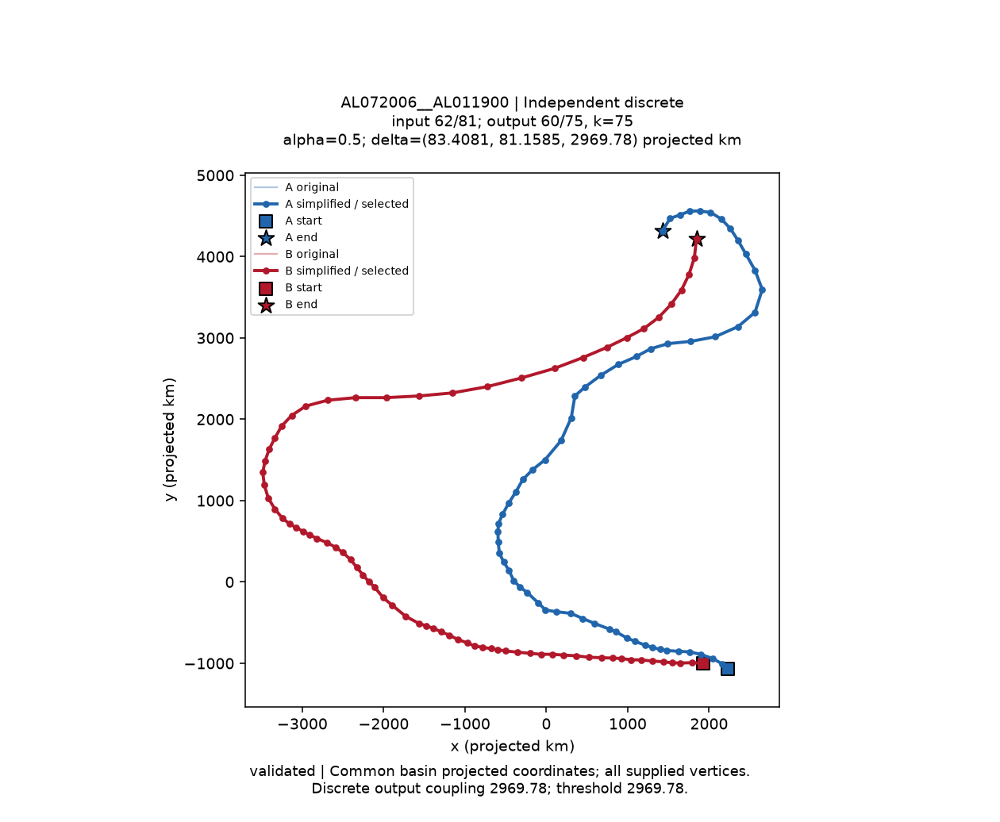
metrics + bounds + provenance · attempt files · raw result · validation · PDF
output/paper_v1/expanded_comparison/slots/66/attempts/expanded66_095d06dd1f3e431cb389cf35a6c9c8c2AL072006__AL011900 — CPS-2F
hurricane | AL072006__AL011900 | CPS-2F | transition_budget_limit | reused cohort observation
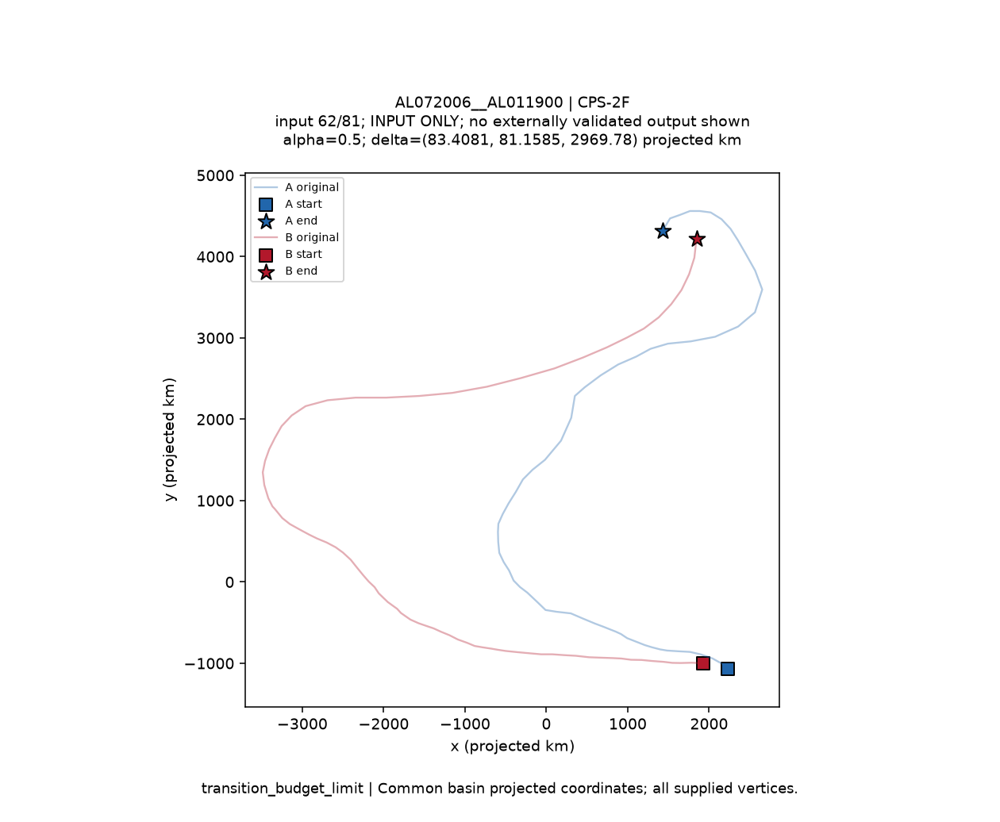
metrics + bounds + provenance · attempt files · PDF
output/paper_v1/expanded_comparison/slots/67/attempts/expanded67_d4d4cf7eb7c74142954855b541101365AL072006__AL011900 — CPS-3F
hurricane | AL072006__AL011900 | CPS-3F | validated | reused cohort observation
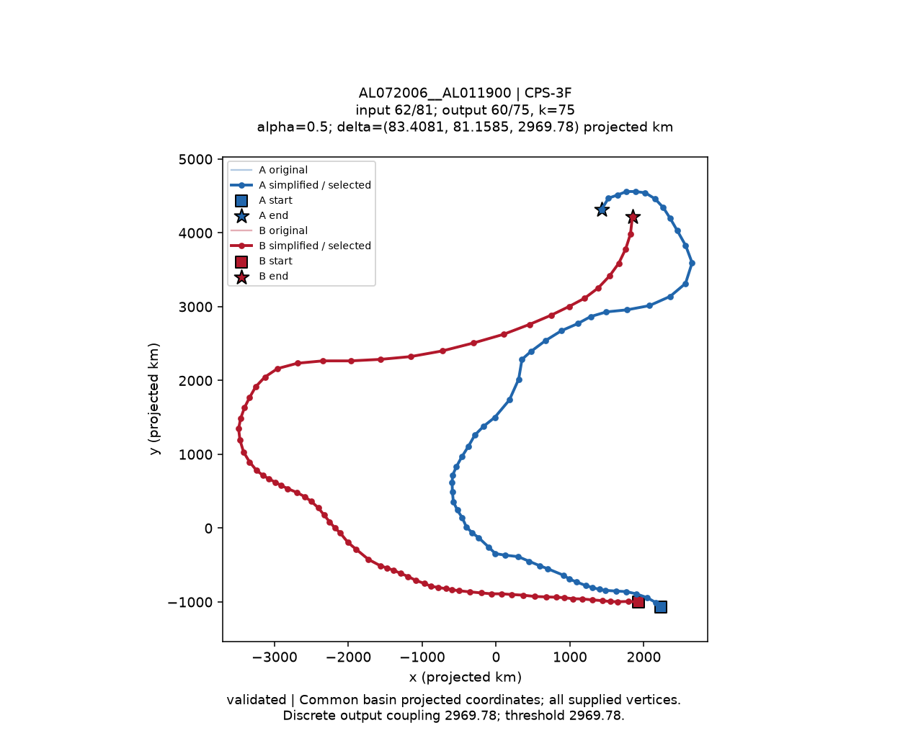
metrics + bounds + provenance · attempt files · raw result · validation · PDF
output/paper_v1/expanded_comparison/slots/68/attempts/expanded68_601a57a3ba474fa3960adc238e08ffc1EP012014__EP212006 — Independent continuous
hurricane | EP012014__EP212006 | Independent continuous | validated | reused cohort observation
metrics + bounds + provenance · attempt files · raw result · validation · PDF
output/paper_v1/expanded_comparison/slots/73/attempts/expanded73_b16b8e72a62142e19f2b25e821b87e10EP012014__EP212006 — Independent discrete
hurricane | EP012014__EP212006 | Independent discrete | validated | reused cohort observation
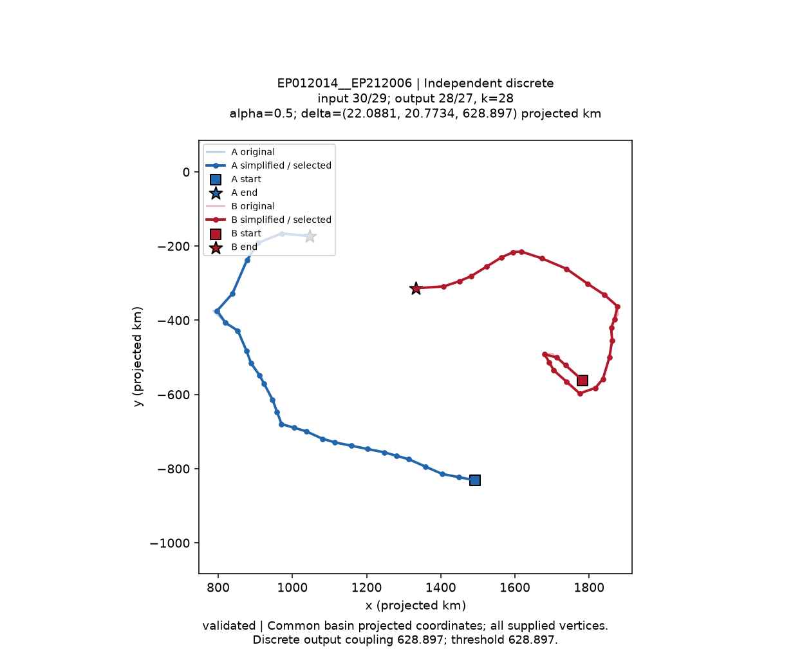
metrics + bounds + provenance · attempt files · raw result · validation · PDF
output/paper_v1/expanded_comparison/slots/74/attempts/expanded74_42a5eaa5d2ec4e088ba1161482a0f9b4EP012014__EP212006 — CPS-2F
hurricane | EP012014__EP212006 | CPS-2F | validated | reused cohort observation
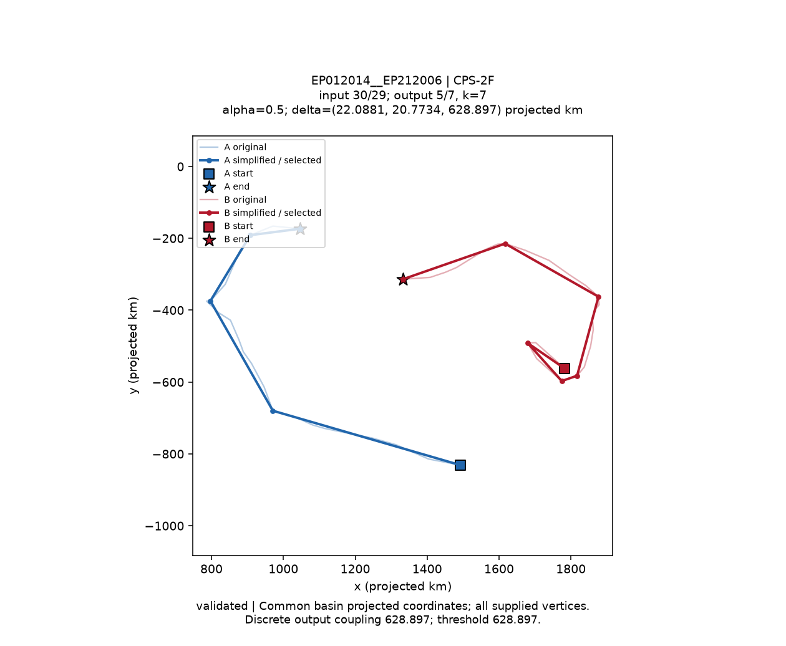
metrics + bounds + provenance · attempt files · raw result · validation · PDF
output/paper_v1/expanded_comparison/slots/75/attempts/expanded75_1d406bb8211e4ea9ad5fa732f6052f0dEP012014__EP212006 — CPS-3F
hurricane | EP012014__EP212006 | CPS-3F | validated | reused cohort observation
metrics + bounds + provenance · attempt files · raw result · validation · PDF
output/paper_v1/expanded_comparison/slots/76/attempts/expanded76_b5080725e48e4dd8bd107e4a0bb2ca1aAL031854__AL011991 — Independent continuous
hurricane | AL031854__AL011991 | Independent continuous | validated | timing repetition
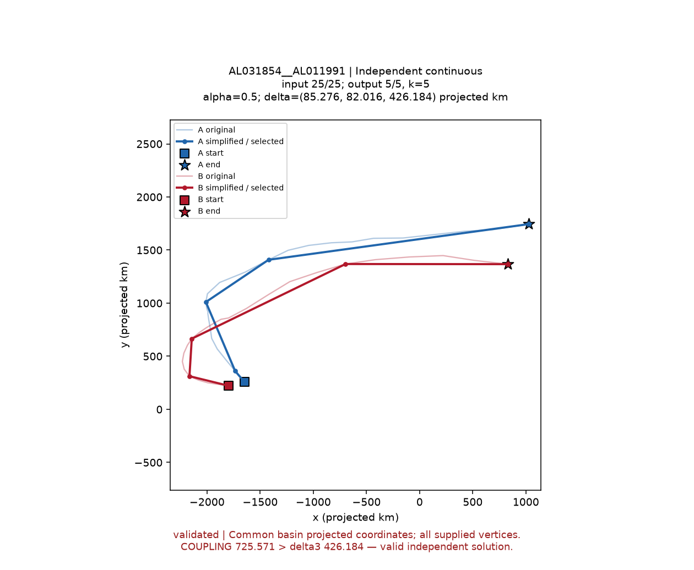
metrics + bounds + provenance · attempt files · raw result · validation · PDF
output/paper_v1/expanded_comparison/timing_study/slots/01/attempts/timing001_ceb9016ca3104a1cb2a39ea5f0d2c6e8AL031854__AL011991 — Independent discrete
hurricane | AL031854__AL011991 | Independent discrete | validated | timing repetition
metrics + bounds + provenance · attempt files · raw result · validation · PDF
output/paper_v1/expanded_comparison/timing_study/slots/02/attempts/timing002_f2582108108a47ec810b171e03be260fAL031854__AL011991 — CPS-2F
hurricane | AL031854__AL011991 | CPS-2F | validated | timing repetition
metrics + bounds + provenance · attempt files · raw result · validation · PDF
output/paper_v1/expanded_comparison/timing_study/slots/03/attempts/timing003_91287d00e9f34cdda177cb0c70d754f8AL031854__AL011991 — CPS-3F
hurricane | AL031854__AL011991 | CPS-3F | validated | timing repetition
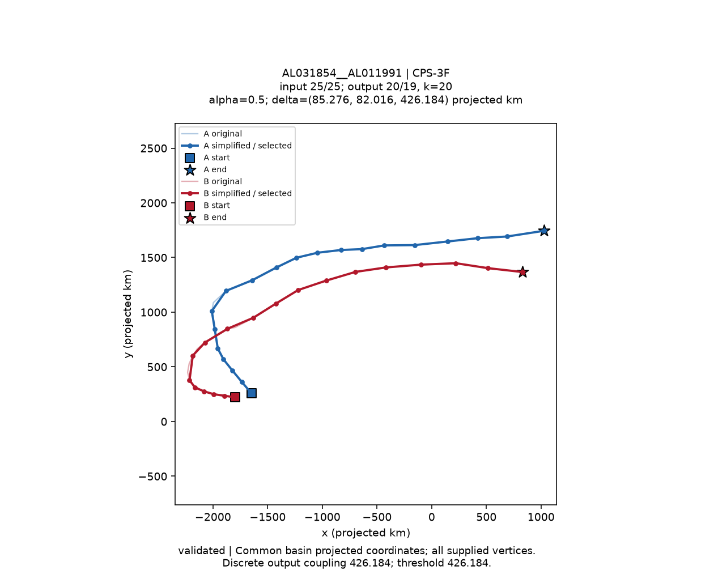
metrics + bounds + provenance · attempt files · raw result · validation · PDF
output/paper_v1/expanded_comparison/timing_study/slots/04/attempts/timing004_22e5a2e3bf774d53a43b8e43cce41f84EP021949__EP031949 — Independent continuous
hurricane | EP021949__EP031949 | Independent continuous | validated | timing repetition
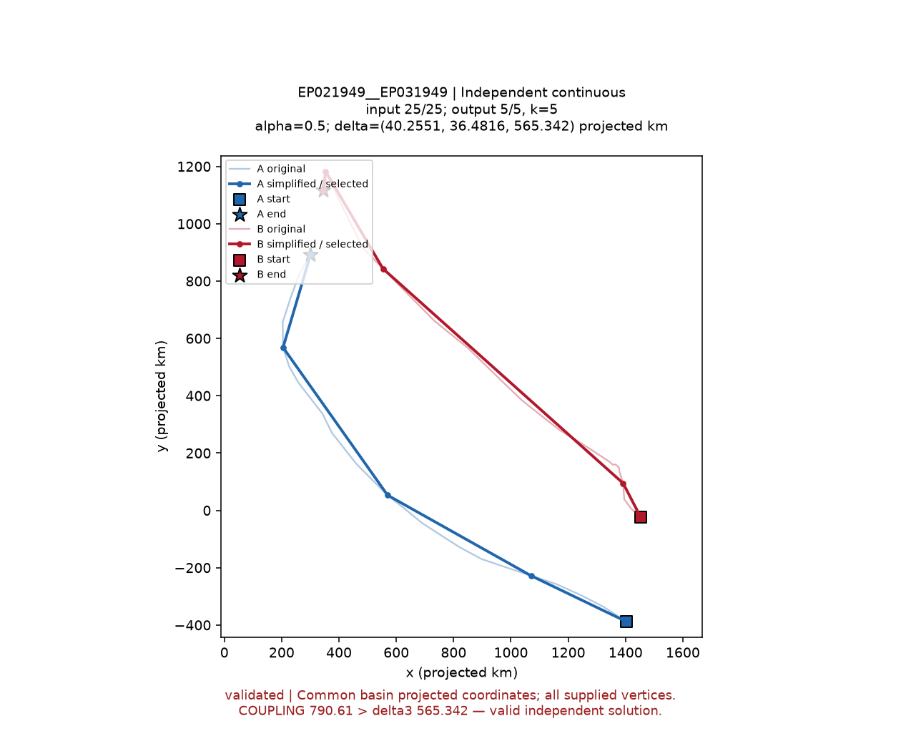
metrics + bounds + provenance · attempt files · raw result · validation · PDF
output/paper_v1/expanded_comparison/timing_study/slots/05/attempts/timing005_63d66b580c76492f8c20d6a55a783a33EP021949__EP031949 — Independent discrete
hurricane | EP021949__EP031949 | Independent discrete | validated | timing repetition
metrics + bounds + provenance · attempt files · raw result · validation · PDF
output/paper_v1/expanded_comparison/timing_study/slots/06/attempts/timing006_32e247fbc1d54a12b378ee5da4837176EP021949__EP031949 — CPS-2F
hurricane | EP021949__EP031949 | CPS-2F | validated | timing repetition
metrics + bounds + provenance · attempt files · raw result · validation · PDF
output/paper_v1/expanded_comparison/timing_study/slots/07/attempts/timing007_f777e4017a074c799ee70cf9fb0b7ae3EP021949__EP031949 — CPS-3F
hurricane | EP021949__EP031949 | CPS-3F | validated | timing repetition
metrics + bounds + provenance · attempt files · raw result · validation · PDF
output/paper_v1/expanded_comparison/timing_study/slots/08/attempts/timing008_db19840cf2ca485c80755c771660e2cc1o7j.a__1d9q.d — Independent continuous
protein | 1o7j.a__1d9q.d | Independent continuous | validated | timing repetition
metrics + bounds + provenance · attempt files · raw result · validation · PDF
output/paper_v1/expanded_comparison/timing_study/slots/09/attempts/timing009_0e304943d7634b6ebd5fd000f00507181o7j.a__1d9q.d — Independent discrete
protein | 1o7j.a__1d9q.d | Independent discrete | validated | timing repetition
metrics + bounds + provenance · attempt files · raw result · validation · PDF
output/paper_v1/expanded_comparison/timing_study/slots/10/attempts/timing010_05359e8789814828b948f789b9e1022f1o7j.a__1qd1.b — Independent discrete
protein | 1o7j.a__1qd1.b | Independent discrete | validated | timing repetition
metrics + bounds + provenance · attempt files · raw result · validation · PDF
output/paper_v1/expanded_comparison/timing_study/slots/100/attempts/timing100_6b7092fbc44842679891b9c6ddd6fa681o7j.a__4eca.d — CPS-2F
protein | 1o7j.a__4eca.d | CPS-2F | validated | timing repetition
metrics + bounds + provenance · attempt files · raw result · validation · PDF
output/paper_v1/expanded_comparison/timing_study/slots/101/attempts/timing101_447c1d676aee4ec5b24e1a5d9b84313c1o7j.a__4eca.d — CPS-3F
protein | 1o7j.a__4eca.d | CPS-3F | validated | timing repetition
metrics + bounds + provenance · attempt files · raw result · validation · PDF
output/paper_v1/expanded_comparison/timing_study/slots/102/attempts/timing102_05fedcd1a4074bf0977b8f1fd279c1b01o7j.a__4eca.d — Independent continuous
protein | 1o7j.a__4eca.d | Independent continuous | validated | timing repetition
metrics + bounds + provenance · attempt files · raw result · validation · PDF
output/paper_v1/expanded_comparison/timing_study/slots/103/attempts/timing103_afe8fefb02ee4b7db38bd4f5d37fc2a01o7j.a__4eca.d — Independent discrete
protein | 1o7j.a__4eca.d | Independent discrete | validated | timing repetition
metrics + bounds + provenance · attempt files · raw result · validation · PDF
output/paper_v1/expanded_comparison/timing_study/slots/104/attempts/timing104_e94236ccf69249ca8fc7b87ae63ec9351o7j.a__1toh.a — CPS-2F
protein | 1o7j.a__1toh.a | CPS-2F | validated | timing repetition
metrics + bounds + provenance · attempt files · raw result · validation · PDF
output/paper_v1/expanded_comparison/timing_study/slots/105/attempts/timing105_f9e92df97183407aa90375c5cff6e4091o7j.a__1toh.a — CPS-3F
protein | 1o7j.a__1toh.a | CPS-3F | validated | timing repetition
metrics + bounds + provenance · attempt files · raw result · validation · PDF
output/paper_v1/expanded_comparison/timing_study/slots/106/attempts/timing106_113ecd4b2f7a428297061f12e3067fcf1o7j.a__1toh.a — Independent continuous
protein | 1o7j.a__1toh.a | Independent continuous | validated | timing repetition
metrics + bounds + provenance · attempt files · raw result · validation · PDF
output/paper_v1/expanded_comparison/timing_study/slots/107/attempts/timing107_61ef0eaf2186463d8f1930cbfa2bb4941o7j.a__1toh.a — Independent discrete
protein | 1o7j.a__1toh.a | Independent discrete | validated | timing repetition
metrics + bounds + provenance · attempt files · raw result · validation · PDF
output/paper_v1/expanded_comparison/timing_study/slots/108/attempts/timing108_cc6d624a1faf4a95a44d806a2f99659dEP111954__EP021984 — CPS-2F
hurricane | EP111954__EP021984 | CPS-2F | validated | timing repetition
metrics + bounds + provenance · attempt files · raw result · validation · PDF
output/paper_v1/expanded_comparison/timing_study/slots/109/attempts/timing109_119becb1f43d4a029bcfdc3c68fbb5d41o7j.a__1d9q.d — CPS-2F
protein | 1o7j.a__1d9q.d | CPS-2F | validated | timing repetition
metrics + bounds + provenance · attempt files · raw result · validation · PDF
output/paper_v1/expanded_comparison/timing_study/slots/11/attempts/timing011_92955b14c2df45d8b4bf377aa3a4f8baEP111954__EP021984 — CPS-3F
hurricane | EP111954__EP021984 | CPS-3F | validated | timing repetition
metrics + bounds + provenance · attempt files · raw result · validation · PDF
output/paper_v1/expanded_comparison/timing_study/slots/110/attempts/timing110_984ed68199f444b59f0eafff0fbe39d4EP111954__EP021984 — Independent continuous
hurricane | EP111954__EP021984 | Independent continuous | validated | timing repetition
metrics + bounds + provenance · attempt files · raw result · validation · PDF
output/paper_v1/expanded_comparison/timing_study/slots/111/attempts/timing111_9ea07e405d4a46bca0691766d9ee9453EP111954__EP021984 — Independent discrete
hurricane | EP111954__EP021984 | Independent discrete | validated | timing repetition
metrics + bounds + provenance · attempt files · raw result · validation · PDF
output/paper_v1/expanded_comparison/timing_study/slots/112/attempts/timing112_9656ba4eb6c04f658033f1d860117482AL072006__AL011900 — CPS-2F
hurricane | AL072006__AL011900 | CPS-2F | transition_budget_limit | timing repetition
metrics + bounds + provenance · attempt files · PDF
output/paper_v1/expanded_comparison/timing_study/slots/113/attempts/timing113_88160483cbac4449af0e179cf1ead407AL072006__AL011900 — CPS-3F
hurricane | AL072006__AL011900 | CPS-3F | validated | timing repetition
metrics + bounds + provenance · attempt files · raw result · validation · PDF
output/paper_v1/expanded_comparison/timing_study/slots/114/attempts/timing114_86b69cf2d538422b88863f33eaf02986AL072006__AL011900 — Independent continuous
hurricane | AL072006__AL011900 | Independent continuous | validated | timing repetition
metrics + bounds + provenance · attempt files · raw result · validation · PDF
output/paper_v1/expanded_comparison/timing_study/slots/115/attempts/timing115_a637dbd765394a5a91dc015dfa8a00c2AL072006__AL011900 — Independent discrete
hurricane | AL072006__AL011900 | Independent discrete | validated | timing repetition
metrics + bounds + provenance · attempt files · raw result · validation · PDF
output/paper_v1/expanded_comparison/timing_study/slots/116/attempts/timing116_35cab4658e804cd387f4a144553854caEP012014__EP212006 — CPS-2F
hurricane | EP012014__EP212006 | CPS-2F | validated | timing repetition
metrics + bounds + provenance · attempt files · raw result · validation · PDF
output/paper_v1/expanded_comparison/timing_study/slots/117/attempts/timing117_83787c979fc04044ae202002a033b088EP012014__EP212006 — CPS-3F
hurricane | EP012014__EP212006 | CPS-3F | validated | timing repetition
metrics + bounds + provenance · attempt files · raw result · validation · PDF
output/paper_v1/expanded_comparison/timing_study/slots/118/attempts/timing118_f07a17d4b7c54689b71ce34171a63bdeEP012014__EP212006 — Independent continuous
hurricane | EP012014__EP212006 | Independent continuous | validated | timing repetition
metrics + bounds + provenance · attempt files · raw result · validation · PDF
output/paper_v1/expanded_comparison/timing_study/slots/119/attempts/timing119_de1ff1076acc4f588db81a46c00f317c1o7j.a__1d9q.d — CPS-3F
protein | 1o7j.a__1d9q.d | CPS-3F | validated | timing repetition
metrics + bounds + provenance · attempt files · raw result · validation · PDF
output/paper_v1/expanded_comparison/timing_study/slots/12/attempts/timing012_2f895fc7d7634d7889d4728572b9e0f6EP012014__EP212006 — Independent discrete
hurricane | EP012014__EP212006 | Independent discrete | validated | timing repetition
metrics + bounds + provenance · attempt files · raw result · validation · PDF
output/paper_v1/expanded_comparison/timing_study/slots/120/attempts/timing120_50e17e34fc99406db596d6fe696cdf901o7j.a__1hfj.c — Independent continuous
protein | 1o7j.a__1hfj.c | Independent continuous | validated | timing repetition
metrics + bounds + provenance · attempt files · raw result · validation · PDF
output/paper_v1/expanded_comparison/timing_study/slots/13/attempts/timing013_bb25fc5267e64b05a2cd916b1e6853601o7j.a__1hfj.c — Independent discrete
protein | 1o7j.a__1hfj.c | Independent discrete | validated | timing repetition
metrics + bounds + provenance · attempt files · raw result · validation · PDF
output/paper_v1/expanded_comparison/timing_study/slots/14/attempts/timing014_dc8325fe6ac343b49fe136d8a1f975011o7j.a__1hfj.c — CPS-2F
protein | 1o7j.a__1hfj.c | CPS-2F | validated | timing repetition
metrics + bounds + provenance · attempt files · raw result · validation · PDF
output/paper_v1/expanded_comparison/timing_study/slots/15/attempts/timing015_9fd298c018b0408a88f837f7bda657b11o7j.a__1hfj.c — CPS-3F
protein | 1o7j.a__1hfj.c | CPS-3F | validated | timing repetition
metrics + bounds + provenance · attempt files · raw result · validation · PDF
output/paper_v1/expanded_comparison/timing_study/slots/16/attempts/timing016_2f702bd5c05741d79a595ce58d63f3ea1o7j.a__1qd1.b — Independent continuous
protein | 1o7j.a__1qd1.b | Independent continuous | validated | timing repetition
metrics + bounds + provenance · attempt files · raw result · validation · PDF
output/paper_v1/expanded_comparison/timing_study/slots/17/attempts/timing017_c0375172756848ceafc5944be4f76a791o7j.a__1qd1.b — Independent discrete
protein | 1o7j.a__1qd1.b | Independent discrete | validated | timing repetition
metrics + bounds + provenance · attempt files · raw result · validation · PDF
output/paper_v1/expanded_comparison/timing_study/slots/18/attempts/timing018_e2acd20ee8464abca4e7ea794434efb81o7j.a__1qd1.b — CPS-2F
protein | 1o7j.a__1qd1.b | CPS-2F | validated | timing repetition
metrics + bounds + provenance · attempt files · raw result · validation · PDF
output/paper_v1/expanded_comparison/timing_study/slots/19/attempts/timing019_a971951774f74c68a8ca0faedca0b4211o7j.a__1qd1.b — CPS-3F
protein | 1o7j.a__1qd1.b | CPS-3F | validated | timing repetition
metrics + bounds + provenance · attempt files · raw result · validation · PDF
output/paper_v1/expanded_comparison/timing_study/slots/20/attempts/timing020_cfb56118975441eba348021ea9d4503f1o7j.a__4eca.d — Independent continuous
protein | 1o7j.a__4eca.d | Independent continuous | validated | timing repetition
metrics + bounds + provenance · attempt files · raw result · validation · PDF
output/paper_v1/expanded_comparison/timing_study/slots/21/attempts/timing021_3e9572229af84000be1bfbcdb56112761o7j.a__4eca.d — Independent discrete
protein | 1o7j.a__4eca.d | Independent discrete | validated | timing repetition
metrics + bounds + provenance · attempt files · raw result · validation · PDF
output/paper_v1/expanded_comparison/timing_study/slots/22/attempts/timing022_14d0f66a20574c999bb01f8b012040f21o7j.a__4eca.d — CPS-2F
protein | 1o7j.a__4eca.d | CPS-2F | validated | timing repetition
metrics + bounds + provenance · attempt files · raw result · validation · PDF
output/paper_v1/expanded_comparison/timing_study/slots/23/attempts/timing023_1e6f771f784047339785ff652d43d0881o7j.a__4eca.d — CPS-3F
protein | 1o7j.a__4eca.d | CPS-3F | validated | timing repetition
metrics + bounds + provenance · attempt files · raw result · validation · PDF
output/paper_v1/expanded_comparison/timing_study/slots/24/attempts/timing024_f7ae389af0384fcdaad3bc13143a16cb1o7j.a__1toh.a — Independent continuous
protein | 1o7j.a__1toh.a | Independent continuous | validated | timing repetition
metrics + bounds + provenance · attempt files · raw result · validation · PDF
output/paper_v1/expanded_comparison/timing_study/slots/25/attempts/timing025_464df60a5cad4c22bea1334b920975191o7j.a__1toh.a — Independent discrete
protein | 1o7j.a__1toh.a | Independent discrete | validated | timing repetition
metrics + bounds + provenance · attempt files · raw result · validation · PDF
output/paper_v1/expanded_comparison/timing_study/slots/26/attempts/timing026_3b8406749f514c60bc2c864580a87cbe1o7j.a__1toh.a — CPS-2F
protein | 1o7j.a__1toh.a | CPS-2F | validated | timing repetition
metrics + bounds + provenance · attempt files · raw result · validation · PDF
output/paper_v1/expanded_comparison/timing_study/slots/27/attempts/timing027_d65848d0c7744770b122ade1ff2118401o7j.a__1toh.a — CPS-3F
protein | 1o7j.a__1toh.a | CPS-3F | validated | timing repetition
metrics + bounds + provenance · attempt files · raw result · validation · PDF
output/paper_v1/expanded_comparison/timing_study/slots/28/attempts/timing028_0e17c5b4953949f9b36ff91551f58f2cEP111954__EP021984 — Independent continuous
hurricane | EP111954__EP021984 | Independent continuous | validated | timing repetition
metrics + bounds + provenance · attempt files · raw result · validation · PDF
output/paper_v1/expanded_comparison/timing_study/slots/29/attempts/timing029_1c6aeb0885124fc8a8163ba726cc9654EP111954__EP021984 — Independent discrete
hurricane | EP111954__EP021984 | Independent discrete | validated | timing repetition
metrics + bounds + provenance · attempt files · raw result · validation · PDF
output/paper_v1/expanded_comparison/timing_study/slots/30/attempts/timing030_1f298cd4a6b3436686499b86a3c02b7eEP111954__EP021984 — CPS-2F
hurricane | EP111954__EP021984 | CPS-2F | validated | timing repetition
metrics + bounds + provenance · attempt files · raw result · validation · PDF
output/paper_v1/expanded_comparison/timing_study/slots/31/attempts/timing031_079ba8843417470f8fe743b1d3a2698cEP111954__EP021984 — CPS-3F
hurricane | EP111954__EP021984 | CPS-3F | validated | timing repetition
metrics + bounds + provenance · attempt files · raw result · validation · PDF
output/paper_v1/expanded_comparison/timing_study/slots/32/attempts/timing032_9a42a8b3f99f475f921f50e6d9ba0720AL072006__AL011900 — Independent continuous
hurricane | AL072006__AL011900 | Independent continuous | validated | timing repetition
metrics + bounds + provenance · attempt files · raw result · validation · PDF
output/paper_v1/expanded_comparison/timing_study/slots/33/attempts/timing033_3bd88b7684ea447fa4bde243ff029888AL072006__AL011900 — Independent discrete
hurricane | AL072006__AL011900 | Independent discrete | validated | timing repetition
metrics + bounds + provenance · attempt files · raw result · validation · PDF
output/paper_v1/expanded_comparison/timing_study/slots/34/attempts/timing034_66cb683d5f2a485d91574028b085146cAL072006__AL011900 — CPS-2F
hurricane | AL072006__AL011900 | CPS-2F | transition_budget_limit | timing repetition
metrics + bounds + provenance · attempt files · PDF
output/paper_v1/expanded_comparison/timing_study/slots/35/attempts/timing035_4e3d313efe354c4594ff17aac3ca3a54AL072006__AL011900 — CPS-3F
hurricane | AL072006__AL011900 | CPS-3F | validated | timing repetition
metrics + bounds + provenance · attempt files · raw result · validation · PDF
output/paper_v1/expanded_comparison/timing_study/slots/36/attempts/timing036_ea5b72750dc64eda966a8a6669a9d1e1EP012014__EP212006 — Independent continuous
hurricane | EP012014__EP212006 | Independent continuous | validated | timing repetition
metrics + bounds + provenance · attempt files · raw result · validation · PDF
output/paper_v1/expanded_comparison/timing_study/slots/37/attempts/timing037_348fd4c4bc29498eb2a8db42522cdda9EP012014__EP212006 — Independent discrete
hurricane | EP012014__EP212006 | Independent discrete | validated | timing repetition
metrics + bounds + provenance · attempt files · raw result · validation · PDF
output/paper_v1/expanded_comparison/timing_study/slots/38/attempts/timing038_c2e1d19b946a40cfa1d18a1cca36310dEP012014__EP212006 — CPS-2F
hurricane | EP012014__EP212006 | CPS-2F | validated | timing repetition
metrics + bounds + provenance · attempt files · raw result · validation · PDF
output/paper_v1/expanded_comparison/timing_study/slots/39/attempts/timing039_1d58bc9a523a4e6d8fe5c5675fe3baddEP012014__EP212006 — CPS-3F
hurricane | EP012014__EP212006 | CPS-3F | validated | timing repetition
metrics + bounds + provenance · attempt files · raw result · validation · PDF
output/paper_v1/expanded_comparison/timing_study/slots/40/attempts/timing040_e17c0a68843a465fa02d8de49eb131d7AL031854__AL011991 — Independent discrete
hurricane | AL031854__AL011991 | Independent discrete | validated | timing repetition
metrics + bounds + provenance · attempt files · raw result · validation · PDF
output/paper_v1/expanded_comparison/timing_study/slots/41/attempts/timing041_08d1e334250148b4b88b6880f4b9c806AL031854__AL011991 — CPS-2F
hurricane | AL031854__AL011991 | CPS-2F | validated | timing repetition
metrics + bounds + provenance · attempt files · raw result · validation · PDF
output/paper_v1/expanded_comparison/timing_study/slots/42/attempts/timing042_d18a2b6bd85448878d2ccba032709fd8AL031854__AL011991 — CPS-3F
hurricane | AL031854__AL011991 | CPS-3F | validated | timing repetition
metrics + bounds + provenance · attempt files · raw result · validation · PDF
output/paper_v1/expanded_comparison/timing_study/slots/43/attempts/timing043_091929f2c4b84236b7484b694975b242AL031854__AL011991 — Independent continuous
hurricane | AL031854__AL011991 | Independent continuous | validated | timing repetition
metrics + bounds + provenance · attempt files · raw result · validation · PDF
output/paper_v1/expanded_comparison/timing_study/slots/44/attempts/timing044_5358bd0ba1d348c784532407cfe089a5EP021949__EP031949 — Independent discrete
hurricane | EP021949__EP031949 | Independent discrete | validated | timing repetition
metrics + bounds + provenance · attempt files · raw result · validation · PDF
output/paper_v1/expanded_comparison/timing_study/slots/45/attempts/timing045_6e220ac265ab4522a3d797dacb752db0EP021949__EP031949 — CPS-2F
hurricane | EP021949__EP031949 | CPS-2F | validated | timing repetition
metrics + bounds + provenance · attempt files · raw result · validation · PDF
output/paper_v1/expanded_comparison/timing_study/slots/46/attempts/timing046_88107b88146047538150a92cf209fbc7EP021949__EP031949 — CPS-3F
hurricane | EP021949__EP031949 | CPS-3F | validated | timing repetition
metrics + bounds + provenance · attempt files · raw result · validation · PDF
output/paper_v1/expanded_comparison/timing_study/slots/47/attempts/timing047_229e01b22b014da5a1879c5da22ab554EP021949__EP031949 — Independent continuous
hurricane | EP021949__EP031949 | Independent continuous | validated | timing repetition
metrics + bounds + provenance · attempt files · raw result · validation · PDF
output/paper_v1/expanded_comparison/timing_study/slots/48/attempts/timing048_0061b62f345144a6bb1c4c8d33303e741o7j.a__1d9q.d — Independent discrete
protein | 1o7j.a__1d9q.d | Independent discrete | validated | timing repetition
metrics + bounds + provenance · attempt files · raw result · validation · PDF
output/paper_v1/expanded_comparison/timing_study/slots/49/attempts/timing049_82402c9475b542c994e0308f8177c44c1o7j.a__1d9q.d — CPS-2F
protein | 1o7j.a__1d9q.d | CPS-2F | validated | timing repetition
metrics + bounds + provenance · attempt files · raw result · validation · PDF
output/paper_v1/expanded_comparison/timing_study/slots/50/attempts/timing050_55548b9a12924858b5eac2d2766166e81o7j.a__1d9q.d — CPS-3F
protein | 1o7j.a__1d9q.d | CPS-3F | validated | timing repetition
metrics + bounds + provenance · attempt files · raw result · validation · PDF
output/paper_v1/expanded_comparison/timing_study/slots/51/attempts/timing051_f591bfa4f05d408fb892311de66c3dc51o7j.a__1d9q.d — Independent continuous
protein | 1o7j.a__1d9q.d | Independent continuous | validated | timing repetition
metrics + bounds + provenance · attempt files · raw result · validation · PDF
output/paper_v1/expanded_comparison/timing_study/slots/52/attempts/timing052_44dc1fc77da94152a3c2f91297b16ebe1o7j.a__1hfj.c — Independent discrete
protein | 1o7j.a__1hfj.c | Independent discrete | validated | timing repetition
metrics + bounds + provenance · attempt files · raw result · validation · PDF
output/paper_v1/expanded_comparison/timing_study/slots/53/attempts/timing053_991badb6bf13459f8a76251c4adbb2131o7j.a__1hfj.c — CPS-2F
protein | 1o7j.a__1hfj.c | CPS-2F | validated | timing repetition
metrics + bounds + provenance · attempt files · raw result · validation · PDF
output/paper_v1/expanded_comparison/timing_study/slots/54/attempts/timing054_3084ca788d444633998d4f50a1b55dbb1o7j.a__1hfj.c — CPS-3F
protein | 1o7j.a__1hfj.c | CPS-3F | validated | timing repetition
metrics + bounds + provenance · attempt files · raw result · validation · PDF
output/paper_v1/expanded_comparison/timing_study/slots/55/attempts/timing055_0d97ca0520b6489fa260a8c48ea741331o7j.a__1hfj.c — Independent continuous
protein | 1o7j.a__1hfj.c | Independent continuous | validated | timing repetition
metrics + bounds + provenance · attempt files · raw result · validation · PDF
output/paper_v1/expanded_comparison/timing_study/slots/56/attempts/timing056_6511efc3b975490f82acc666fe763e331o7j.a__1qd1.b — Independent discrete
protein | 1o7j.a__1qd1.b | Independent discrete | validated | timing repetition
metrics + bounds + provenance · attempt files · raw result · validation · PDF
output/paper_v1/expanded_comparison/timing_study/slots/57/attempts/timing057_d405a7c2f66c4345878b1a35fca033481o7j.a__1qd1.b — CPS-2F
protein | 1o7j.a__1qd1.b | CPS-2F | validated | timing repetition
metrics + bounds + provenance · attempt files · raw result · validation · PDF
output/paper_v1/expanded_comparison/timing_study/slots/58/attempts/timing058_c77ab514d8e846fc97c8c173e5219c681o7j.a__1qd1.b — CPS-3F
protein | 1o7j.a__1qd1.b | CPS-3F | validated | timing repetition
metrics + bounds + provenance · attempt files · raw result · validation · PDF
output/paper_v1/expanded_comparison/timing_study/slots/59/attempts/timing059_672b86c301fa434abac160bd77d0667e1o7j.a__1qd1.b — Independent continuous
protein | 1o7j.a__1qd1.b | Independent continuous | validated | timing repetition
metrics + bounds + provenance · attempt files · raw result · validation · PDF
output/paper_v1/expanded_comparison/timing_study/slots/60/attempts/timing060_a5cae24be9bc42a4af9dc47f03053d8c1o7j.a__4eca.d — Independent discrete
protein | 1o7j.a__4eca.d | Independent discrete | validated | timing repetition
metrics + bounds + provenance · attempt files · raw result · validation · PDF
output/paper_v1/expanded_comparison/timing_study/slots/61/attempts/timing061_2c4c7249321b4924938fdf8d2f2f877d1o7j.a__4eca.d — CPS-2F
protein | 1o7j.a__4eca.d | CPS-2F | validated | timing repetition
metrics + bounds + provenance · attempt files · raw result · validation · PDF
output/paper_v1/expanded_comparison/timing_study/slots/62/attempts/timing062_d650f9a8174d4523bb3b07ab5d10ef9f1o7j.a__4eca.d — CPS-3F
protein | 1o7j.a__4eca.d | CPS-3F | validated | timing repetition
metrics + bounds + provenance · attempt files · raw result · validation · PDF
output/paper_v1/expanded_comparison/timing_study/slots/63/attempts/timing063_5877ae604c004791a4a98e15c9975a571o7j.a__4eca.d — Independent continuous
protein | 1o7j.a__4eca.d | Independent continuous | validated | timing repetition
metrics + bounds + provenance · attempt files · raw result · validation · PDF
output/paper_v1/expanded_comparison/timing_study/slots/64/attempts/timing064_b9761a4dba4c42be86681b537a68d7ae1o7j.a__1toh.a — Independent discrete
protein | 1o7j.a__1toh.a | Independent discrete | validated | timing repetition
metrics + bounds + provenance · attempt files · raw result · validation · PDF
output/paper_v1/expanded_comparison/timing_study/slots/65/attempts/timing065_8f3bc7bb9925483694b185daeb85314b1o7j.a__1toh.a — CPS-2F
protein | 1o7j.a__1toh.a | CPS-2F | validated | timing repetition
metrics + bounds + provenance · attempt files · raw result · validation · PDF
output/paper_v1/expanded_comparison/timing_study/slots/66/attempts/timing066_b98dd966c5604a43ae5d44d415809de61o7j.a__1toh.a — CPS-3F
protein | 1o7j.a__1toh.a | CPS-3F | validated | timing repetition
metrics + bounds + provenance · attempt files · raw result · validation · PDF
output/paper_v1/expanded_comparison/timing_study/slots/67/attempts/timing067_1d6d2e6354df4fd4930be5e0025819291o7j.a__1toh.a — Independent continuous
protein | 1o7j.a__1toh.a | Independent continuous | validated | timing repetition
metrics + bounds + provenance · attempt files · raw result · validation · PDF
output/paper_v1/expanded_comparison/timing_study/slots/68/attempts/timing068_180ea4c21e2d45a28f7982fd572e6d81EP111954__EP021984 — Independent discrete
hurricane | EP111954__EP021984 | Independent discrete | validated | timing repetition
metrics + bounds + provenance · attempt files · raw result · validation · PDF
output/paper_v1/expanded_comparison/timing_study/slots/69/attempts/timing069_e11d2c5fcd5f4ac0a336ccbd603ede94EP111954__EP021984 — CPS-2F
hurricane | EP111954__EP021984 | CPS-2F | validated | timing repetition
metrics + bounds + provenance · attempt files · raw result · validation · PDF
output/paper_v1/expanded_comparison/timing_study/slots/70/attempts/timing070_92bb131272a2424bb912d1300124ef65EP111954__EP021984 — CPS-3F
hurricane | EP111954__EP021984 | CPS-3F | validated | timing repetition
metrics + bounds + provenance · attempt files · raw result · validation · PDF
output/paper_v1/expanded_comparison/timing_study/slots/71/attempts/timing071_f2ccb8a3533f4ab1a6dd7038a9772661EP111954__EP021984 — Independent continuous
hurricane | EP111954__EP021984 | Independent continuous | validated | timing repetition
metrics + bounds + provenance · attempt files · raw result · validation · PDF
output/paper_v1/expanded_comparison/timing_study/slots/72/attempts/timing072_6b319c75c2c34bfea9b0dde9cad5b754AL072006__AL011900 — Independent discrete
hurricane | AL072006__AL011900 | Independent discrete | validated | timing repetition
metrics + bounds + provenance · attempt files · raw result · validation · PDF
output/paper_v1/expanded_comparison/timing_study/slots/73/attempts/timing073_105498b722554d44920498117b37a8c6AL072006__AL011900 — CPS-2F
hurricane | AL072006__AL011900 | CPS-2F | transition_budget_limit | timing repetition
metrics + bounds + provenance · attempt files · PDF
output/paper_v1/expanded_comparison/timing_study/slots/74/attempts/timing074_97d1a9346b4f4e0b9bd52194e83d1ff7AL072006__AL011900 — CPS-3F
hurricane | AL072006__AL011900 | CPS-3F | validated | timing repetition
metrics + bounds + provenance · attempt files · raw result · validation · PDF
output/paper_v1/expanded_comparison/timing_study/slots/75/attempts/timing075_3694663095704e74a595e0788d4f26b1AL072006__AL011900 — Independent continuous
hurricane | AL072006__AL011900 | Independent continuous | validated | timing repetition
metrics + bounds + provenance · attempt files · raw result · validation · PDF
output/paper_v1/expanded_comparison/timing_study/slots/76/attempts/timing076_2106ac66808e4924bbfc7ab48e6e4bc7EP012014__EP212006 — Independent discrete
hurricane | EP012014__EP212006 | Independent discrete | validated | timing repetition
metrics + bounds + provenance · attempt files · raw result · validation · PDF
output/paper_v1/expanded_comparison/timing_study/slots/77/attempts/timing077_319189dc13d04b5bb066f349b58a0cbcEP012014__EP212006 — CPS-2F
hurricane | EP012014__EP212006 | CPS-2F | validated | timing repetition
metrics + bounds + provenance · attempt files · raw result · validation · PDF
output/paper_v1/expanded_comparison/timing_study/slots/78/attempts/timing078_c229e78196d9489283e8c89549d63081EP012014__EP212006 — CPS-3F
hurricane | EP012014__EP212006 | CPS-3F | validated | timing repetition
metrics + bounds + provenance · attempt files · raw result · validation · PDF
output/paper_v1/expanded_comparison/timing_study/slots/79/attempts/timing079_a3c4fcf86e9544a18b90f97efc92f060EP012014__EP212006 — Independent continuous
hurricane | EP012014__EP212006 | Independent continuous | validated | timing repetition
metrics + bounds + provenance · attempt files · raw result · validation · PDF
output/paper_v1/expanded_comparison/timing_study/slots/80/attempts/timing080_5745ed0d6a704cc0aef80381d109e632AL031854__AL011991 — CPS-2F
hurricane | AL031854__AL011991 | CPS-2F | validated | timing repetition
metrics + bounds + provenance · attempt files · raw result · validation · PDF
output/paper_v1/expanded_comparison/timing_study/slots/81/attempts/timing081_b7e564b364004fabb2a3552cbcffb5f7AL031854__AL011991 — CPS-3F
hurricane | AL031854__AL011991 | CPS-3F | validated | timing repetition
metrics + bounds + provenance · attempt files · raw result · validation · PDF
output/paper_v1/expanded_comparison/timing_study/slots/82/attempts/timing082_ed13f44e02264e70b16e4a0d3cd2936dAL031854__AL011991 — Independent continuous
hurricane | AL031854__AL011991 | Independent continuous | validated | timing repetition
metrics + bounds + provenance · attempt files · raw result · validation · PDF
output/paper_v1/expanded_comparison/timing_study/slots/83/attempts/timing083_d84a638aceb1487ab978b20fbe0bef43AL031854__AL011991 — Independent discrete
hurricane | AL031854__AL011991 | Independent discrete | validated | timing repetition
metrics + bounds + provenance · attempt files · raw result · validation · PDF
output/paper_v1/expanded_comparison/timing_study/slots/84/attempts/timing084_80703ecc324f4211bff59a6ec8b5d54cEP021949__EP031949 — CPS-2F
hurricane | EP021949__EP031949 | CPS-2F | validated | timing repetition
metrics + bounds + provenance · attempt files · raw result · validation · PDF
output/paper_v1/expanded_comparison/timing_study/slots/85/attempts/timing085_0386a812673f4e6bb740b94ff58740d4EP021949__EP031949 — CPS-3F
hurricane | EP021949__EP031949 | CPS-3F | validated | timing repetition
metrics + bounds + provenance · attempt files · raw result · validation · PDF
output/paper_v1/expanded_comparison/timing_study/slots/86/attempts/timing086_37650c94f3cb46fbbcf8cb191f844d34EP021949__EP031949 — Independent continuous
hurricane | EP021949__EP031949 | Independent continuous | validated | timing repetition
metrics + bounds + provenance · attempt files · raw result · validation · PDF
output/paper_v1/expanded_comparison/timing_study/slots/87/attempts/timing087_30db0f4fd2154870ad84f7df21d61a1dEP021949__EP031949 — Independent discrete
hurricane | EP021949__EP031949 | Independent discrete | validated | timing repetition
metrics + bounds + provenance · attempt files · raw result · validation · PDF
output/paper_v1/expanded_comparison/timing_study/slots/88/attempts/timing088_469bd66de5e54646bbe69f6a857aa3951o7j.a__1d9q.d — CPS-2F
protein | 1o7j.a__1d9q.d | CPS-2F | validated | timing repetition
metrics + bounds + provenance · attempt files · raw result · validation · PDF
output/paper_v1/expanded_comparison/timing_study/slots/89/attempts/timing089_76513a8a806a437eba938b48534deb911o7j.a__1d9q.d — CPS-3F
protein | 1o7j.a__1d9q.d | CPS-3F | validated | timing repetition
metrics + bounds + provenance · attempt files · raw result · validation · PDF
output/paper_v1/expanded_comparison/timing_study/slots/90/attempts/timing090_3ea503329f7f4480bb4e1d89547c569d1o7j.a__1d9q.d — Independent continuous
protein | 1o7j.a__1d9q.d | Independent continuous | validated | timing repetition
metrics + bounds + provenance · attempt files · raw result · validation · PDF
output/paper_v1/expanded_comparison/timing_study/slots/91/attempts/timing091_1355b8224b81406a85aaae8e366b41251o7j.a__1d9q.d — Independent discrete
protein | 1o7j.a__1d9q.d | Independent discrete | validated | timing repetition
metrics + bounds + provenance · attempt files · raw result · validation · PDF
output/paper_v1/expanded_comparison/timing_study/slots/92/attempts/timing092_5cb6f49df714490398d7382f6dd28c7c1o7j.a__1hfj.c — CPS-2F
protein | 1o7j.a__1hfj.c | CPS-2F | validated | timing repetition
metrics + bounds + provenance · attempt files · raw result · validation · PDF
output/paper_v1/expanded_comparison/timing_study/slots/93/attempts/timing093_fdad05574a6c41eaa261fad0b52f606e1o7j.a__1hfj.c — CPS-3F
protein | 1o7j.a__1hfj.c | CPS-3F | validated | timing repetition
metrics + bounds + provenance · attempt files · raw result · validation · PDF
output/paper_v1/expanded_comparison/timing_study/slots/94/attempts/timing094_c5a95295fe1a4cbb81eca1edf346e2cf1o7j.a__1hfj.c — Independent continuous
protein | 1o7j.a__1hfj.c | Independent continuous | validated | timing repetition
metrics + bounds + provenance · attempt files · raw result · validation · PDF
output/paper_v1/expanded_comparison/timing_study/slots/95/attempts/timing095_32eb9d2072db499483fd8e9c6600884d1o7j.a__1hfj.c — Independent discrete
protein | 1o7j.a__1hfj.c | Independent discrete | validated | timing repetition
metrics + bounds + provenance · attempt files · raw result · validation · PDF
output/paper_v1/expanded_comparison/timing_study/slots/96/attempts/timing096_529116392c4044aa85ccb3f56d0442731o7j.a__1qd1.b — CPS-2F
protein | 1o7j.a__1qd1.b | CPS-2F | validated | timing repetition
metrics + bounds + provenance · attempt files · raw result · validation · PDF
output/paper_v1/expanded_comparison/timing_study/slots/97/attempts/timing097_2338dc81f7a44789bca355c1c4c3fa431o7j.a__1qd1.b — CPS-3F
protein | 1o7j.a__1qd1.b | CPS-3F | validated | timing repetition
metrics + bounds + provenance · attempt files · raw result · validation · PDF
output/paper_v1/expanded_comparison/timing_study/slots/98/attempts/timing098_959af2d522334ed384d55685a50543021o7j.a__1qd1.b — Independent continuous
protein | 1o7j.a__1qd1.b | Independent continuous | validated | timing repetition
metrics + bounds + provenance · attempt files · raw result · validation · PDF
output/paper_v1/expanded_comparison/timing_study/slots/99/attempts/timing099_a544b91d0e1d48608622021fae04a27eAL031854__AL011991 — CPS-2F
hurricane | AL031854__AL011991 | CPS-2F | transition_budget_limit | historical diagnostic
metrics + bounds + provenance · attempt files · validation · PDF
output/paper_v1/graph_only_v2/attempts/A_a5ce9008b10f4636922695c2cf81e0dd1o7j.a__1hfj.c — CPS-2F
protein | 1o7j.a__1hfj.c | CPS-2F | transition_budget_limit | historical diagnostic
metrics + bounds + provenance · attempt files · validation · PDF
output/paper_v1/graph_only_v2/attempts/B_cf1787d0fc88447e9f5e19a9a82f2dab1o7j.a__1d9q.d — Independent discrete
protein | 1o7j.a__1d9q.d | Independent discrete | validated | reused cohort observation
metrics + bounds + provenance · attempt files · raw result · validation · PDF
output/paper_v1/graph_only_v2/attempts/C_8c679d9e32f84779ab0c2bea3386850eAL031854__AL011991 — CPS-2F
hurricane | AL031854__AL011991 | CPS-2F | validated | historical diagnostic
metrics + bounds + provenance · attempt files · raw result · validation · PDF
output/paper_v1/graph_only_v3/attempts/A_7239568e76984b44844f1c1e27a0d371EP172000__EP061970 — Independent continuous
hurricane | EP172000__EP061970 | Independent continuous | validated | new single observation
metrics + bounds + provenance · attempt files · raw result · validation · PDF
output/paper_v1/hurricane_extension_3/slots/01/attempts/hurricane3_01_c0e4722942de4edcaa11266316805ef1EP172000__EP061970 — Independent discrete
hurricane | EP172000__EP061970 | Independent discrete | validated | new single observation
metrics + bounds + provenance · attempt files · raw result · validation · PDF
output/paper_v1/hurricane_extension_3/slots/02/attempts/hurricane3_02_9fdee82a0e704fe7b40313cbe3c2fff4EP172000__EP061970 — CPS-2F
hurricane | EP172000__EP061970 | CPS-2F | validated | new single observation
metrics + bounds + provenance · attempt files · raw result · validation · PDF
output/paper_v1/hurricane_extension_3/slots/03/attempts/hurricane3_03_b45df61f7c364569b48f895a3c451579EP172000__EP061970 — CPS-3F
hurricane | EP172000__EP061970 | CPS-3F | validated | new single observation
metrics + bounds + provenance · attempt files · raw result · validation · PDF
output/paper_v1/hurricane_extension_3/slots/04/attempts/hurricane3_04_ef3ef5b482a148d1861bbc99a0efbb34EP111995__EP032014 — Independent continuous
hurricane | EP111995__EP032014 | Independent continuous | validated | new single observation
metrics + bounds + provenance · attempt files · raw result · validation · PDF
output/paper_v1/hurricane_extension_3/slots/05/attempts/hurricane3_05_544fb3f3607d4e0794fe4f019c330143EP111995__EP032014 — Independent discrete
hurricane | EP111995__EP032014 | Independent discrete | validated | new single observation
metrics + bounds + provenance · attempt files · raw result · validation · PDF
output/paper_v1/hurricane_extension_3/slots/06/attempts/hurricane3_06_eacef0d1253647f1ae27c2ff2018ac10EP111995__EP032014 — CPS-2F
hurricane | EP111995__EP032014 | CPS-2F | validated | new single observation
metrics + bounds + provenance · attempt files · raw result · validation · PDF
output/paper_v1/hurricane_extension_3/slots/07/attempts/hurricane3_07_4c21c4ed71a9480f8e995dd5d7042530EP111995__EP032014 — CPS-3F
hurricane | EP111995__EP032014 | CPS-3F | validated | new single observation
metrics + bounds + provenance · attempt files · raw result · validation · PDF
output/paper_v1/hurricane_extension_3/slots/08/attempts/hurricane3_08_c39016413aec43668328a3c20b36ffc0EP061986__EP131991 — Independent continuous
hurricane | EP061986__EP131991 | Independent continuous | validated | new single observation
metrics + bounds + provenance · attempt files · raw result · validation · PDF
output/paper_v1/hurricane_extension_3/slots/09/attempts/hurricane3_09_fbb5d270ca7a4c86bacbe7f25ec271a4EP061986__EP131991 — Independent discrete
hurricane | EP061986__EP131991 | Independent discrete | validated | new single observation
metrics + bounds + provenance · attempt files · raw result · validation · PDF
output/paper_v1/hurricane_extension_3/slots/10/attempts/hurricane3_10_7abd746c092446dd8f0d6e0a34cda991EP061986__EP131991 — CPS-2F
hurricane | EP061986__EP131991 | CPS-2F | validated | new single observation
metrics + bounds + provenance · attempt files · raw result · validation · PDF
output/paper_v1/hurricane_extension_3/slots/11/attempts/hurricane3_11_1f56e28212ab4666a6da3cc53e3431a0EP061986__EP131991 — CPS-3F
hurricane | EP061986__EP131991 | CPS-3F | validated | new single observation
metrics + bounds + provenance · attempt files · raw result · validation · PDF
output/paper_v1/hurricane_extension_3/slots/12/attempts/hurricane3_12_b935ae03384b4dedb947a289c5f820a0EP092002__EP171994 — Independent continuous
hurricane | EP092002__EP171994 | Independent continuous | validated | stratified final20 single observation
metrics + bounds + provenance · attempt files · raw result · validation · PDF
output/paper_v1/hurricane_final_20/slots/01/attempts/final20_01_b434dd29179344f58040590f59962d54EP092002__EP171994 — Independent discrete
hurricane | EP092002__EP171994 | Independent discrete | validated | stratified final20 single observation
metrics + bounds + provenance · attempt files · raw result · validation · PDF
output/paper_v1/hurricane_final_20/slots/02/attempts/final20_02_021eda7600df412cb66577c8602cf8e4EP092002__EP171994 — CPS-2F
hurricane | EP092002__EP171994 | CPS-2F | validated | stratified final20 single observation
metrics + bounds + provenance · attempt files · raw result · validation · PDF
output/paper_v1/hurricane_final_20/slots/03/attempts/final20_03_30ed5a490d4340e4b557ed8452b1516cEP092002__EP171994 — CPS-3F
hurricane | EP092002__EP171994 | CPS-3F | validated | stratified final20 single observation
metrics + bounds + provenance · attempt files · raw result · validation · PDF
output/paper_v1/hurricane_final_20/slots/04/attempts/final20_04_619d64cf04564736abd1dd18b2c8b991AL091944__AL031917 — Independent discrete
hurricane | AL091944__AL031917 | Independent discrete | validated | stratified final20 single observation
metrics + bounds + provenance · attempt files · raw result · validation · PDF
output/paper_v1/hurricane_final_20/slots/05/attempts/final20_05_3a62e104edfc418990091b0fc0094304AL091944__AL031917 — CPS-2F
hurricane | AL091944__AL031917 | CPS-2F | validated | stratified final20 single observation
metrics + bounds + provenance · attempt files · raw result · validation · PDF
output/paper_v1/hurricane_final_20/slots/06/attempts/final20_06_866e9f142f5548c9b31eea1aac3dc726AL091944__AL031917 — CPS-3F
hurricane | AL091944__AL031917 | CPS-3F | validated | stratified final20 single observation
metrics + bounds + provenance · attempt files · raw result · validation · PDF
output/paper_v1/hurricane_final_20/slots/07/attempts/final20_07_9ead45b3a9ed4ab19713c687e77e7dd3AL091944__AL031917 — Independent continuous
hurricane | AL091944__AL031917 | Independent continuous | validated | stratified final20 single observation
metrics + bounds + provenance · attempt files · raw result · validation · PDF
output/paper_v1/hurricane_final_20/slots/08/attempts/final20_08_db16c6b5195540c2af47c2511446e913EP101985__EP151985 — CPS-2F
hurricane | EP101985__EP151985 | CPS-2F | validated | stratified final20 single observation
metrics + bounds + provenance · attempt files · raw result · validation · PDF
output/paper_v1/hurricane_final_20/slots/09/attempts/final20_09_eb7bd5f7323448baa7ad1468993fe005EP101985__EP151985 — CPS-3F
hurricane | EP101985__EP151985 | CPS-3F | validated | stratified final20 single observation
metrics + bounds + provenance · attempt files · raw result · validation · PDF
output/paper_v1/hurricane_final_20/slots/10/attempts/final20_10_a12a88c5c90046c5828fe762e12e783eEP101985__EP151985 — Independent continuous
hurricane | EP101985__EP151985 | Independent continuous | validated | stratified final20 single observation
metrics + bounds + provenance · attempt files · raw result · validation · PDF
output/paper_v1/hurricane_final_20/slots/11/attempts/final20_11_acdcfa29a7d9446f94aa50661c0dddb9EP101985__EP151985 — Independent discrete
hurricane | EP101985__EP151985 | Independent discrete | validated | stratified final20 single observation
metrics + bounds + provenance · attempt files · raw result · validation · PDF
output/paper_v1/hurricane_final_20/slots/12/attempts/final20_12_6da99ca50a034841840ee306c7c8cafeEP031965__EP141991 — CPS-3F
hurricane | EP031965__EP141991 | CPS-3F | validated | stratified final20 single observation
metrics + bounds + provenance · attempt files · raw result · validation · PDF
output/paper_v1/hurricane_final_20/slots/13/attempts/final20_13_7957d74aba4843288c5f5ac0777d6ae5EP031965__EP141991 — Independent continuous
hurricane | EP031965__EP141991 | Independent continuous | validated | stratified final20 single observation
metrics + bounds + provenance · attempt files · raw result · validation · PDF
output/paper_v1/hurricane_final_20/slots/14/attempts/final20_14_bf5d6943445e43de83984aaabce39ebeEP031965__EP141991 — Independent discrete
hurricane | EP031965__EP141991 | Independent discrete | validated | stratified final20 single observation
metrics + bounds + provenance · attempt files · raw result · validation · PDF
output/paper_v1/hurricane_final_20/slots/15/attempts/final20_15_8ff9c91d98364b5295c99dc1d34b268eEP031965__EP141991 — CPS-2F
hurricane | EP031965__EP141991 | CPS-2F | validated | stratified final20 single observation
metrics + bounds + provenance · attempt files · raw result · validation · PDF
output/paper_v1/hurricane_final_20/slots/16/attempts/final20_16_d4e35d041ef04ad5989ece181a5d19a1AL061921__AL101926 — Independent continuous
hurricane | AL061921__AL101926 | Independent continuous | validated | stratified final20 single observation
metrics + bounds + provenance · attempt files · raw result · validation · PDF
output/paper_v1/hurricane_final_20/slots/17/attempts/final20_17_1395c928d4754fc7942839c77b7f3225AL061921__AL101926 — Independent discrete
hurricane | AL061921__AL101926 | Independent discrete | validated | stratified final20 single observation
metrics + bounds + provenance · attempt files · raw result · validation · PDF
output/paper_v1/hurricane_final_20/slots/18/attempts/final20_18_7e6483aa34094a098d9dc41a27d91a71AL061921__AL101926 — CPS-2F
hurricane | AL061921__AL101926 | CPS-2F | transition_budget_limit | stratified final20 single observation
metrics + bounds + provenance · attempt files · PDF
output/paper_v1/hurricane_final_20/slots/19/attempts/final20_19_670b202c19c54aa28a7f79a13800898aAL061921__AL101926 — CPS-3F
hurricane | AL061921__AL101926 | CPS-3F | validated | stratified final20 single observation
metrics + bounds + provenance · attempt files · raw result · validation · PDF
output/paper_v1/hurricane_final_20/slots/20/attempts/final20_20_5c112c2ece744b91bba8231374693156EP041976__EP041984 — Independent discrete
hurricane | EP041976__EP041984 | Independent discrete | validated | stratified final20 single observation
metrics + bounds + provenance · attempt files · raw result · validation · PDF
output/paper_v1/hurricane_final_20/slots/21/attempts/final20_21_195f4b6c144744ffa35f95f208986226EP041976__EP041984 — CPS-2F
hurricane | EP041976__EP041984 | CPS-2F | validated | stratified final20 single observation
metrics + bounds + provenance · attempt files · raw result · validation · PDF
output/paper_v1/hurricane_final_20/slots/22/attempts/final20_22_2aadd96ecd56487888d5543761e41814EP041976__EP041984 — CPS-3F
hurricane | EP041976__EP041984 | CPS-3F | validated | stratified final20 single observation
metrics + bounds + provenance · attempt files · raw result · validation · PDF
output/paper_v1/hurricane_final_20/slots/23/attempts/final20_23_0892021af506422ebb7300b58a6e42e8EP041976__EP041984 — Independent continuous
hurricane | EP041976__EP041984 | Independent continuous | validated | stratified final20 single observation
metrics + bounds + provenance · attempt files · raw result · validation · PDF
output/paper_v1/hurricane_final_20/slots/24/attempts/final20_24_d3470a252d2145ca9c41c4fcf7aa442bEP081967__EP101980 — CPS-2F
hurricane | EP081967__EP101980 | CPS-2F | validated | stratified final20 single observation
metrics + bounds + provenance · attempt files · raw result · validation · PDF
output/paper_v1/hurricane_final_20/slots/25/attempts/final20_25_66c8bad9489b41fab6327cf23c780263EP081967__EP101980 — CPS-3F
hurricane | EP081967__EP101980 | CPS-3F | validated | stratified final20 single observation
metrics + bounds + provenance · attempt files · raw result · validation · PDF
output/paper_v1/hurricane_final_20/slots/26/attempts/final20_26_30241021b400499a9710be07c88dddacEP081967__EP101980 — Independent continuous
hurricane | EP081967__EP101980 | Independent continuous | validated | stratified final20 single observation
metrics + bounds + provenance · attempt files · raw result · validation · PDF
output/paper_v1/hurricane_final_20/slots/27/attempts/final20_27_de706e57356c4f08ba62f91aba4abaa5EP081967__EP101980 — Independent discrete
hurricane | EP081967__EP101980 | Independent discrete | validated | stratified final20 single observation
metrics + bounds + provenance · attempt files · raw result · validation · PDF
output/paper_v1/hurricane_final_20/slots/28/attempts/final20_28_8c2506e898e04b858825e283a3e44fdfEP031994__EP031978 — CPS-3F
hurricane | EP031994__EP031978 | CPS-3F | validated | stratified final20 single observation
metrics + bounds + provenance · attempt files · raw result · validation · PDF
output/paper_v1/hurricane_final_20/slots/29/attempts/final20_29_aa3ca4b72b8c4222901d54440e883ea9EP031994__EP031978 — Independent continuous
hurricane | EP031994__EP031978 | Independent continuous | validated | stratified final20 single observation
metrics + bounds + provenance · attempt files · raw result · validation · PDF
output/paper_v1/hurricane_final_20/slots/30/attempts/final20_30_475599a6b1d54bdd80bc1cff799f4c26EP031994__EP031978 — Independent discrete
hurricane | EP031994__EP031978 | Independent discrete | validated | stratified final20 single observation
metrics + bounds + provenance · attempt files · raw result · validation · PDF
output/paper_v1/hurricane_final_20/slots/31/attempts/final20_31_dc00c064cb1d4e339c7e15dbb6f227bbEP031994__EP031978 — CPS-2F
hurricane | EP031994__EP031978 | CPS-2F | validated | stratified final20 single observation
metrics + bounds + provenance · attempt files · raw result · validation · PDF
output/paper_v1/hurricane_final_20/slots/32/attempts/final20_32_d7629be544a04b7c9a22f439d333fc89EP021985__EP181984 — Independent continuous
hurricane | EP021985__EP181984 | Independent continuous | validated | stratified final20 single observation
metrics + bounds + provenance · attempt files · raw result · validation · PDF
output/paper_v1/hurricane_final_20/slots/33/attempts/final20_33_2caf8d64c11043df8a23af6f3c211a35EP021985__EP181984 — Independent discrete
hurricane | EP021985__EP181984 | Independent discrete | validated | stratified final20 single observation
metrics + bounds + provenance · attempt files · raw result · validation · PDF
output/paper_v1/hurricane_final_20/slots/34/attempts/final20_34_ea9ee483f1294ae3a828afeb3625747fEP021985__EP181984 — CPS-2F
hurricane | EP021985__EP181984 | CPS-2F | validated | stratified final20 single observation
metrics + bounds + provenance · attempt files · raw result · validation · PDF
output/paper_v1/hurricane_final_20/slots/35/attempts/final20_35_ebb9bf586aa24487a1f9d9f887ce4018EP021985__EP181984 — CPS-3F
hurricane | EP021985__EP181984 | CPS-3F | validated | stratified final20 single observation
metrics + bounds + provenance · attempt files · raw result · validation · PDF
output/paper_v1/hurricane_final_20/slots/36/attempts/final20_36_4e04d78dd5974e99b6e05aa37ad0a368AL101886__AL051950 — Independent discrete
hurricane | AL101886__AL051950 | Independent discrete | validated | stratified final20 single observation
metrics + bounds + provenance · attempt files · raw result · validation · PDF
output/paper_v1/hurricane_final_20/slots/37/attempts/final20_37_51b2e98e30d54d699e42eed27543c97aAL101886__AL051950 — CPS-2F
hurricane | AL101886__AL051950 | CPS-2F | validated | stratified final20 single observation
metrics + bounds + provenance · attempt files · raw result · validation · PDF
output/paper_v1/hurricane_final_20/slots/38/attempts/final20_38_58df75aaae554088a8460ccc5c84df2fAL101886__AL051950 — CPS-3F
hurricane | AL101886__AL051950 | CPS-3F | validated | stratified final20 single observation
metrics + bounds + provenance · attempt files · raw result · validation · PDF
output/paper_v1/hurricane_final_20/slots/39/attempts/final20_39_f320fc4065b8426997773f0f0db07068AL101886__AL051950 — Independent continuous
hurricane | AL101886__AL051950 | Independent continuous | validated | stratified final20 single observation
metrics + bounds + provenance · attempt files · raw result · validation · PDF
output/paper_v1/hurricane_final_20/slots/40/attempts/final20_40_4c2bf1aaa30540999f85ae007f04ef46AL091947__AL011953 — CPS-2F
hurricane | AL091947__AL011953 | CPS-2F | validated | stratified final20 single observation
metrics + bounds + provenance · attempt files · raw result · validation · PDF
output/paper_v1/hurricane_final_20/slots/41/attempts/final20_41_0a466baa66464fb3943e4e57645c28beAL091947__AL011953 — CPS-3F
hurricane | AL091947__AL011953 | CPS-3F | validated | stratified final20 single observation
metrics + bounds + provenance · attempt files · raw result · validation · PDF
output/paper_v1/hurricane_final_20/slots/42/attempts/final20_42_d2895748c5d14bdeb6a05676e77abfb5AL091947__AL011953 — Independent continuous
hurricane | AL091947__AL011953 | Independent continuous | validated | stratified final20 single observation
metrics + bounds + provenance · attempt files · raw result · validation · PDF
output/paper_v1/hurricane_final_20/slots/43/attempts/final20_43_2836407e874c424f8e39aa2dc464034dAL091947__AL011953 — Independent discrete
hurricane | AL091947__AL011953 | Independent discrete | validated | stratified final20 single observation
metrics + bounds + provenance · attempt files · raw result · validation · PDF
output/paper_v1/hurricane_final_20/slots/44/attempts/final20_44_4bd691e859f24298bcd50204bf7e8ce2EP072011__EP092011 — CPS-3F
hurricane | EP072011__EP092011 | CPS-3F | validated | stratified final20 single observation
metrics + bounds + provenance · attempt files · raw result · validation · PDF
output/paper_v1/hurricane_final_20/slots/45/attempts/final20_45_0821628804ba483ba30cbc671c8e4102EP072011__EP092011 — Independent continuous
hurricane | EP072011__EP092011 | Independent continuous | validated | stratified final20 single observation
metrics + bounds + provenance · attempt files · raw result · validation · PDF
output/paper_v1/hurricane_final_20/slots/46/attempts/final20_46_37192d3934c744d582184f79b62e61d8EP072011__EP092011 — Independent discrete
hurricane | EP072011__EP092011 | Independent discrete | validated | stratified final20 single observation
metrics + bounds + provenance · attempt files · raw result · validation · PDF
output/paper_v1/hurricane_final_20/slots/47/attempts/final20_47_d4a9dc9ae7b84cda9454df9608014fe7EP072011__EP092011 — CPS-2F
hurricane | EP072011__EP092011 | CPS-2F | validated | stratified final20 single observation
metrics + bounds + provenance · attempt files · raw result · validation · PDF
output/paper_v1/hurricane_final_20/slots/48/attempts/final20_48_2edd7361056443178e128d82458295eeAL171980__AL112009 — Independent continuous
hurricane | AL171980__AL112009 | Independent continuous | validated | stratified final20 single observation
metrics + bounds + provenance · attempt files · raw result · validation · PDF
output/paper_v1/hurricane_final_20/slots/49/attempts/final20_49_08a4e1c1718046018d829bbf67b74f8dAL171980__AL112009 — Independent discrete
hurricane | AL171980__AL112009 | Independent discrete | validated | stratified final20 single observation
metrics + bounds + provenance · attempt files · raw result · validation · PDF
output/paper_v1/hurricane_final_20/slots/50/attempts/final20_50_a4383118ca454e09b67c5cf1cc90a664AL171980__AL112009 — CPS-2F
hurricane | AL171980__AL112009 | CPS-2F | validated | stratified final20 single observation
metrics + bounds + provenance · attempt files · raw result · validation · PDF
output/paper_v1/hurricane_final_20/slots/51/attempts/final20_51_14a139201f594820b2f7e7b3059dcaadAL171980__AL112009 — CPS-3F
hurricane | AL171980__AL112009 | CPS-3F | validated | stratified final20 single observation
metrics + bounds + provenance · attempt files · raw result · validation · PDF
output/paper_v1/hurricane_final_20/slots/52/attempts/final20_52_b4f045f5d8844464bd2f0bcf54eea3e8AL102008__AL061989 — Independent discrete
hurricane | AL102008__AL061989 | Independent discrete | validated | stratified final20 single observation
metrics + bounds + provenance · attempt files · raw result · validation · PDF
output/paper_v1/hurricane_final_20/slots/53/attempts/final20_53_8b318395eeb046589e99724d910e5bb1AL102008__AL061989 — CPS-2F
hurricane | AL102008__AL061989 | CPS-2F | validated | stratified final20 single observation
metrics + bounds + provenance · attempt files · raw result · validation · PDF
output/paper_v1/hurricane_final_20/slots/54/attempts/final20_54_5781486474d142eca33fd1ac3ecba66eAL102008__AL061989 — CPS-3F
hurricane | AL102008__AL061989 | CPS-3F | validated | stratified final20 single observation
metrics + bounds + provenance · attempt files · raw result · validation · PDF
output/paper_v1/hurricane_final_20/slots/55/attempts/final20_55_f8e5c012d43b42c6bfe76bb8c06d1308AL102008__AL061989 — Independent continuous
hurricane | AL102008__AL061989 | Independent continuous | validated | stratified final20 single observation
metrics + bounds + provenance · attempt files · raw result · validation · PDF
output/paper_v1/hurricane_final_20/slots/56/attempts/final20_56_30668bb6fe404f53a66ffcf1cd0974e1EP102002__EP042014 — CPS-2F
hurricane | EP102002__EP042014 | CPS-2F | validated | stratified final20 single observation
metrics + bounds + provenance · attempt files · raw result · validation · PDF
output/paper_v1/hurricane_final_20/slots/57/attempts/final20_57_3b593e011f1945c8b0d3ed5a26fd0127EP102002__EP042014 — CPS-3F
hurricane | EP102002__EP042014 | CPS-3F | validated | stratified final20 single observation
metrics + bounds + provenance · attempt files · raw result · validation · PDF
output/paper_v1/hurricane_final_20/slots/58/attempts/final20_58_ea2ce80db7c94079a2cb369e959559f5EP102002__EP042014 — Independent continuous
hurricane | EP102002__EP042014 | Independent continuous | validated | stratified final20 single observation
metrics + bounds + provenance · attempt files · raw result · validation · PDF
output/paper_v1/hurricane_final_20/slots/59/attempts/final20_59_c16322178b4f407d8f119718c8734830EP102002__EP042014 — Independent discrete
hurricane | EP102002__EP042014 | Independent discrete | validated | stratified final20 single observation
metrics + bounds + provenance · attempt files · raw result · validation · PDF
output/paper_v1/hurricane_final_20/slots/60/attempts/final20_60_cec96105783145718039ee5868a75078EP032000__EP041975 — CPS-3F
hurricane | EP032000__EP041975 | CPS-3F | validated | stratified final20 single observation
metrics + bounds + provenance · attempt files · raw result · validation · PDF
output/paper_v1/hurricane_final_20/slots/61/attempts/final20_61_4070de11bcbf480b88acbf4063e461e3EP032000__EP041975 — Independent continuous
hurricane | EP032000__EP041975 | Independent continuous | validated | stratified final20 single observation
metrics + bounds + provenance · attempt files · raw result · validation · PDF
output/paper_v1/hurricane_final_20/slots/62/attempts/final20_62_d9a1a067bb774a53933e28812954c0c6EP032000__EP041975 — Independent discrete
hurricane | EP032000__EP041975 | Independent discrete | validated | stratified final20 single observation
metrics + bounds + provenance · attempt files · raw result · validation · PDF
output/paper_v1/hurricane_final_20/slots/63/attempts/final20_63_4ca3c6daf95b47b0882782af61c2b120EP032000__EP041975 — CPS-2F
hurricane | EP032000__EP041975 | CPS-2F | validated | stratified final20 single observation
metrics + bounds + provenance · attempt files · raw result · validation · PDF
output/paper_v1/hurricane_final_20/slots/64/attempts/final20_64_4b3df03886be47cba638b38fd36fc6e7EP081993__EP121989 — Independent continuous
hurricane | EP081993__EP121989 | Independent continuous | validated | stratified final20 single observation
metrics + bounds + provenance · attempt files · raw result · validation · PDF
output/paper_v1/hurricane_final_20/slots/65/attempts/final20_65_42ae1722c38d41da9bb9ab9d9719888cEP081993__EP121989 — Independent discrete
hurricane | EP081993__EP121989 | Independent discrete | validated | stratified final20 single observation
metrics + bounds + provenance · attempt files · raw result · validation · PDF
output/paper_v1/hurricane_final_20/slots/66/attempts/final20_66_8e17affc1fcd472a9202a8ff6ea049a1EP081993__EP121989 — CPS-2F
hurricane | EP081993__EP121989 | CPS-2F | validated | stratified final20 single observation
metrics + bounds + provenance · attempt files · raw result · validation · PDF
output/paper_v1/hurricane_final_20/slots/67/attempts/final20_67_b9613bc87fb644248f17fad70973d282EP081993__EP121989 — CPS-3F
hurricane | EP081993__EP121989 | CPS-3F | validated | stratified final20 single observation
metrics + bounds + provenance · attempt files · raw result · validation · PDF
output/paper_v1/hurricane_final_20/slots/68/attempts/final20_68_2303304f7720454ab54fd261efac9fa1EP032006__EP201992 — Independent discrete
hurricane | EP032006__EP201992 | Independent discrete | validated | stratified final20 single observation
metrics + bounds + provenance · attempt files · raw result · validation · PDF
output/paper_v1/hurricane_final_20/slots/69/attempts/final20_69_10bbb26fb2684c84bed58bedbdb98bb9EP032006__EP201992 — CPS-2F
hurricane | EP032006__EP201992 | CPS-2F | validated | stratified final20 single observation
metrics + bounds + provenance · attempt files · raw result · validation · PDF
output/paper_v1/hurricane_final_20/slots/70/attempts/final20_70_20db140a05394c369c27539bd6baa588EP032006__EP201992 — CPS-3F
hurricane | EP032006__EP201992 | CPS-3F | validated | stratified final20 single observation
metrics + bounds + provenance · attempt files · raw result · validation · PDF
output/paper_v1/hurricane_final_20/slots/71/attempts/final20_71_4d535e933a604b2e9ccbe57363192e3cEP032006__EP201992 — Independent continuous
hurricane | EP032006__EP201992 | Independent continuous | validated | stratified final20 single observation
metrics + bounds + provenance · attempt files · raw result · validation · PDF
output/paper_v1/hurricane_final_20/slots/72/attempts/final20_72_832738003bd84bc4a27e2189171073c3AL022011__AL071977 — CPS-2F
hurricane | AL022011__AL071977 | CPS-2F | validated | stratified final20 single observation
metrics + bounds + provenance · attempt files · raw result · validation · PDF
output/paper_v1/hurricane_final_20/slots/73/attempts/final20_73_b1dda7d0a6b44fad905cf9786dcf9244AL022011__AL071977 — CPS-3F
hurricane | AL022011__AL071977 | CPS-3F | validated | stratified final20 single observation
metrics + bounds + provenance · attempt files · raw result · validation · PDF
output/paper_v1/hurricane_final_20/slots/74/attempts/final20_74_ee94d0d551c84e2781b4167a658e706cAL022011__AL071977 — Independent continuous
hurricane | AL022011__AL071977 | Independent continuous | validated | stratified final20 single observation
metrics + bounds + provenance · attempt files · raw result · validation · PDF
output/paper_v1/hurricane_final_20/slots/75/attempts/final20_75_964fe43252604578a7224b4d0700a9eeAL022011__AL071977 — Independent discrete
hurricane | AL022011__AL071977 | Independent discrete | validated | stratified final20 single observation
metrics + bounds + provenance · attempt files · raw result · validation · PDF
output/paper_v1/hurricane_final_20/slots/76/attempts/final20_76_c36d9f294ed945ea94d2301a0ea593a4EP101972__EP141967 — CPS-3F
hurricane | EP101972__EP141967 | CPS-3F | validated | stratified final20 single observation
metrics + bounds + provenance · attempt files · raw result · validation · PDF
output/paper_v1/hurricane_final_20/slots/77/attempts/final20_77_dbc630bc997a4eac921ad233c09583b2EP101972__EP141967 — Independent continuous
hurricane | EP101972__EP141967 | Independent continuous | validated | stratified final20 single observation
metrics + bounds + provenance · attempt files · raw result · validation · PDF
output/paper_v1/hurricane_final_20/slots/78/attempts/final20_78_36900cf3aa184930b1d4bf30ee68c735EP101972__EP141967 — Independent discrete
hurricane | EP101972__EP141967 | Independent discrete | validated | stratified final20 single observation
metrics + bounds + provenance · attempt files · raw result · validation · PDF
output/paper_v1/hurricane_final_20/slots/79/attempts/final20_79_5b32313c9cce4e39b5dc21250a68b065EP101972__EP141967 — CPS-2F
hurricane | EP101972__EP141967 | CPS-2F | validated | stratified final20 single observation
metrics + bounds + provenance · attempt files · raw result · validation · PDF
output/paper_v1/hurricane_final_20/slots/80/attempts/final20_80_bf6c654f7b404c9f8617a00187e97b141o7j.a__1hfj.c — CPS-2F
protein | 1o7j.a__1hfj.c | CPS-2F | solver_timeout | historical diagnostic
metrics + bounds + provenance · attempt files · validation · PDF
output/paper_v1/protein_B_states_100k/attempts/B_183aae63bda045c292a3fb0cca3250531o7j.a__1hfj.c — CPS-2F
protein | 1o7j.a__1hfj.c | CPS-2F | transition_budget_limit | historical diagnostic
metrics + bounds + provenance · attempt files · validation · PDF
output/paper_v1/protein_B_states_100k_repeat1/attempts/B_78011d250dda4c65aae814551178bd891o7j.a__1hfj.c — CPS-2F
protein | 1o7j.a__1hfj.c | CPS-2F | state_budget_limit | historical diagnostic
metrics + bounds + provenance · attempt files · validation · PDF
output/paper_v1/protein_B_transition_10m/attempts/B_639bf87048a2410abc87d1a988505de21o7j.a__1hfj.c — CPS-2F
protein | 1o7j.a__1hfj.c | CPS-2F | transition_budget_limit | reused cohort observation
metrics + bounds + provenance · attempt files · validation · PDF
output/paper_v1/protein_B_transitions_20m/attempts/B_59ec1647ee4e4a51828c60d087ccbbb5AL031854__AL011991 — Independent continuous
hurricane | AL031854__AL011991 | Independent continuous | validated | reused cohort observation
metrics + bounds + provenance · attempt files · raw result · validation · PDF
output/paper_v1/unified_pilot_results/slots/01/attempts/slot01_a21dc5c0aa204ab3b617cea12e9c1fdfAL031854__AL011991 — Independent discrete
hurricane | AL031854__AL011991 | Independent discrete | validated | reused cohort observation
metrics + bounds + provenance · attempt files · raw result · validation · PDF
output/paper_v1/unified_pilot_results/slots/02/attempts/slot02_be1a32ff67984f64be5a5df446945b5eAL031854__AL011991 — CPS-2F
hurricane | AL031854__AL011991 | CPS-2F | validated | reused cohort observation
metrics + bounds + provenance · attempt files · raw result · validation · PDF
output/paper_v1/unified_pilot_results/slots/03/attempts/slot03_5333325f78a44ccf8c803cb680ccb2c1AL031854__AL011991 — CPS-3F
hurricane | AL031854__AL011991 | CPS-3F | validated | reused cohort observation
metrics + bounds + provenance · attempt files · raw result · validation · PDF
output/paper_v1/unified_pilot_results/slots/04/attempts/slot04_932e5573922349258233e40f17b3a4adAL031854__AL011991 — Independent discrete
hurricane | AL031854__AL011991 | Independent discrete | validated | reused cohort observation
metrics + bounds + provenance · attempt files · raw result · validation · PDF
output/paper_v1/unified_pilot_results/slots/05/attempts/slot05_0c387ea78eff44e9945f07128b393bb1AL031854__AL011991 — CPS-2F
hurricane | AL031854__AL011991 | CPS-2F | transition_budget_limit | reused cohort observation
metrics + bounds + provenance · attempt files · PDF
output/paper_v1/unified_pilot_results/slots/06/attempts/slot06_e21c1ee13d734cd8b59abf9e4a4a1dd4AL031854__AL011991 — CPS-3F
hurricane | AL031854__AL011991 | CPS-3F | validated | reused cohort observation
metrics + bounds + provenance · attempt files · raw result · validation · PDF
output/paper_v1/unified_pilot_results/slots/07/attempts/slot07_61a62b3628834eafbcd97bd272a0369eAL031854__AL011991 — Independent continuous
hurricane | AL031854__AL011991 | Independent continuous | validated | reused cohort observation
metrics + bounds + provenance · attempt files · raw result · validation · PDF
output/paper_v1/unified_pilot_results/slots/08/attempts/slot08_e87dd29030384a46a88e8329ed149094EP021949__EP031949 — CPS-2F
hurricane | EP021949__EP031949 | CPS-2F | validated | reused cohort observation
metrics + bounds + provenance · attempt files · raw result · validation · PDF
output/paper_v1/unified_pilot_results/slots/09/attempts/slot09_e46deb0bcdd14153a890b48a67dfe8eeEP021949__EP031949 — CPS-3F
hurricane | EP021949__EP031949 | CPS-3F | validated | reused cohort observation
metrics + bounds + provenance · attempt files · raw result · validation · PDF
output/paper_v1/unified_pilot_results/slots/10/attempts/slot10_9c3ce8eb1cc545e1b9833ac08e21c34dEP021949__EP031949 — Independent continuous
hurricane | EP021949__EP031949 | Independent continuous | validated | reused cohort observation
metrics + bounds + provenance · attempt files · raw result · validation · PDF
output/paper_v1/unified_pilot_results/slots/11/attempts/slot11_779efee65c1c4da48452a50487b13fb4EP021949__EP031949 — Independent discrete
hurricane | EP021949__EP031949 | Independent discrete | validated | reused cohort observation
metrics + bounds + provenance · attempt files · raw result · validation · PDF
output/paper_v1/unified_pilot_results/slots/12/attempts/slot12_cbb981900e99447d9afd681e05358355EP021949__EP031949 — CPS-3F
hurricane | EP021949__EP031949 | CPS-3F | validated | reused cohort observation
metrics + bounds + provenance · attempt files · raw result · validation · PDF
output/paper_v1/unified_pilot_results/slots/13/attempts/slot13_288bd832f6b34a6ca19d5e091f46554eEP021949__EP031949 — Independent continuous
hurricane | EP021949__EP031949 | Independent continuous | validated | reused cohort observation
metrics + bounds + provenance · attempt files · raw result · validation · PDF
output/paper_v1/unified_pilot_results/slots/14/attempts/slot14_611e60f8a5fe4cb1ad7a48a443a2692bEP021949__EP031949 — Independent discrete
hurricane | EP021949__EP031949 | Independent discrete | validated | reused cohort observation
metrics + bounds + provenance · attempt files · raw result · validation · PDF
output/paper_v1/unified_pilot_results/slots/15/attempts/slot15_452824b437124977b5f90387d2ceee8fEP021949__EP031949 — CPS-2F
hurricane | EP021949__EP031949 | CPS-2F | validated | reused cohort observation
metrics + bounds + provenance · attempt files · raw result · validation · PDF
output/paper_v1/unified_pilot_results/slots/16/attempts/slot16_717d93cece42448796adbcb4b4004ad91o7j.a__1d9q.d — Independent continuous
protein | 1o7j.a__1d9q.d | Independent continuous | validated | reused cohort observation
metrics + bounds + provenance · attempt files · raw result · validation · PDF
output/paper_v1/unified_pilot_results/slots/17/attempts/slot17_8cc2d653a53341719f762049559f92f01o7j.a__1d9q.d — CPS-2F
protein | 1o7j.a__1d9q.d | CPS-2F | validated | reused cohort observation
metrics + bounds + provenance · attempt files · raw result · validation · PDF
output/paper_v1/unified_pilot_results/slots/19/attempts/slot19_67a95ddd348341d08fd3a07c99191bd71o7j.a__1d9q.d — CPS-3F
protein | 1o7j.a__1d9q.d | CPS-3F | validated | reused cohort observation
metrics + bounds + provenance · attempt files · raw result · validation · PDF
output/paper_v1/unified_pilot_results/slots/20/attempts/slot20_e0ee0e87e6cf44b8b6e3f583884746661o7j.a__1d9q.d — Independent discrete
protein | 1o7j.a__1d9q.d | Independent discrete | validated | reused cohort observation
metrics + bounds + provenance · attempt files · raw result · validation · PDF
output/paper_v1/unified_pilot_results/slots/21/attempts/slot21_7a5b9ca5e8bc48798aa10f36bf10a98d1o7j.a__1d9q.d — CPS-2F
protein | 1o7j.a__1d9q.d | CPS-2F | state_budget_limit | reused cohort observation
metrics + bounds + provenance · attempt files · PDF
output/paper_v1/unified_pilot_results/slots/22/attempts/slot22_739086777aba470a8481508806d02f991o7j.a__1d9q.d — CPS-3F
protein | 1o7j.a__1d9q.d | CPS-3F | validated | reused cohort observation
metrics + bounds + provenance · attempt files · raw result · validation · PDF
output/paper_v1/unified_pilot_results/slots/23/attempts/slot23_b83adb2f114340e2b1e0482117050c661o7j.a__1d9q.d — Independent continuous
protein | 1o7j.a__1d9q.d | Independent continuous | validated | reused cohort observation
metrics + bounds + provenance · attempt files · raw result · validation · PDF
output/paper_v1/unified_pilot_results/slots/24/attempts/slot24_31c363917f9e45649d2c0f71b859a6eb1o7j.a__1hfj.c — CPS-2F
protein | 1o7j.a__1hfj.c | CPS-2F | validated | reused cohort observation
metrics + bounds + provenance · attempt files · raw result · validation · PDF
output/paper_v1/unified_pilot_results/slots/25/attempts/slot25_e5ce743da5d4474f8086789aa234a7231o7j.a__1hfj.c — CPS-3F
protein | 1o7j.a__1hfj.c | CPS-3F | validated | reused cohort observation
metrics + bounds + provenance · attempt files · raw result · validation · PDF
output/paper_v1/unified_pilot_results/slots/26/attempts/slot26_dd70540fbfa346d9babebd31da1d1eae1o7j.a__1hfj.c — Independent continuous
protein | 1o7j.a__1hfj.c | Independent continuous | validated | reused cohort observation
metrics + bounds + provenance · attempt files · raw result · validation · PDF
output/paper_v1/unified_pilot_results/slots/27/attempts/slot27_3abe46c8e95b4cdd96c9b8eb7f4514781o7j.a__1hfj.c — Independent discrete
protein | 1o7j.a__1hfj.c | Independent discrete | validated | reused cohort observation
metrics + bounds + provenance · attempt files · raw result · validation · PDF
output/paper_v1/unified_pilot_results/slots/28/attempts/slot28_1530208469eb432cb8bc302cdc0c09fa1o7j.a__1hfj.c — CPS-3F
protein | 1o7j.a__1hfj.c | CPS-3F | validated | reused cohort observation
metrics + bounds + provenance · attempt files · raw result · validation · PDF
output/paper_v1/unified_pilot_results/slots/29/attempts/slot29_29c4c84cb8ba494c9ab2694cf23b39ac1o7j.a__1hfj.c — Independent continuous
protein | 1o7j.a__1hfj.c | Independent continuous | validated | reused cohort observation
metrics + bounds + provenance · attempt files · raw result · validation · PDF
output/paper_v1/unified_pilot_results/slots/30/attempts/slot30_2618baa29e824d7596b152cf9f99cb341o7j.a__1hfj.c — Independent discrete
protein | 1o7j.a__1hfj.c | Independent discrete | validated | reused cohort observation
metrics + bounds + provenance · attempt files · raw result · validation · PDF
output/paper_v1/unified_pilot_results/slots/31/attempts/slot31_ec99ae8c5e444220aca71081e41b28ccAL031854__AL011991 — CPS-2F
hurricane | AL031854__AL011991 | CPS-2F | other_resource_limit | legacy integrated-validation observation
metrics + bounds + provenance · attempt files · PDF
output/paper_v1/graph_only_v1/workers/hurricane_AL031854__AL011991_a0.5_CPS-2F.result.jsonAL031854__AL011991 — CPS-3F
hurricane | AL031854__AL011991 | CPS-3F | legacy_validated | legacy integrated-validation observation
metrics + bounds + provenance · attempt files · validation · PDF
output/paper_v1/graph_only_v1/workers/hurricane_AL031854__AL011991_a0.5_CPS-3F.result.jsonAL031854__AL011991 — Independent continuous
hurricane | AL031854__AL011991 | Independent continuous | legacy_validated | legacy integrated-validation observation
metrics + bounds + provenance · attempt files · validation · PDF
output/paper_v1/graph_only_v1/workers/hurricane_AL031854__AL011991_a0.5_Independent_continuous.result.jsonAL031854__AL011991 — Independent discrete
hurricane | AL031854__AL011991 | Independent discrete | legacy_validated | legacy integrated-validation observation
metrics + bounds + provenance · attempt files · validation · PDF
output/paper_v1/graph_only_v1/workers/hurricane_AL031854__AL011991_a0.5_Independent_discrete.result.jsonAL031854__AL011991 — CPS-2F
hurricane | AL031854__AL011991 | CPS-2F | other_resource_limit | legacy integrated-validation observation
metrics + bounds + provenance · attempt files · PDF
output/paper_v1/graph_only_v1/workers/hurricane_AL031854__AL011991_a1_CPS-2F.result.jsonAL031854__AL011991 — CPS-3F
hurricane | AL031854__AL011991 | CPS-3F | legacy_validated | legacy integrated-validation observation
metrics + bounds + provenance · attempt files · validation · PDF
output/paper_v1/graph_only_v1/workers/hurricane_AL031854__AL011991_a1_CPS-3F.result.jsonAL031854__AL011991 — Independent continuous
hurricane | AL031854__AL011991 | Independent continuous | legacy_validated | legacy integrated-validation observation
metrics + bounds + provenance · attempt files · validation · PDF
output/paper_v1/graph_only_v1/workers/hurricane_AL031854__AL011991_a1_Independent_continuous.result.jsonAL031854__AL011991 — Independent discrete
hurricane | AL031854__AL011991 | Independent discrete | legacy_validated | legacy integrated-validation observation
metrics + bounds + provenance · attempt files · validation · PDF
output/paper_v1/graph_only_v1/workers/hurricane_AL031854__AL011991_a1_Independent_discrete.result.jsonEP021949__EP031949 — CPS-2F
hurricane | EP021949__EP031949 | CPS-2F | other_resource_limit | legacy integrated-validation observation
metrics + bounds + provenance · attempt files · PDF
output/paper_v1/graph_only_v1/workers/hurricane_EP021949__EP031949_a0.5_CPS-2F.result.jsonEP021949__EP031949 — CPS-3F
hurricane | EP021949__EP031949 | CPS-3F | legacy_validated | legacy integrated-validation observation
metrics + bounds + provenance · attempt files · validation · PDF
output/paper_v1/graph_only_v1/workers/hurricane_EP021949__EP031949_a0.5_CPS-3F.result.jsonEP021949__EP031949 — Independent continuous
hurricane | EP021949__EP031949 | Independent continuous | legacy_validated | legacy integrated-validation observation
metrics + bounds + provenance · attempt files · validation · PDF
output/paper_v1/graph_only_v1/workers/hurricane_EP021949__EP031949_a0.5_Independent_continuous.result.jsonEP021949__EP031949 — Independent discrete
hurricane | EP021949__EP031949 | Independent discrete | legacy_validated | legacy integrated-validation observation
metrics + bounds + provenance · attempt files · validation · PDF
output/paper_v1/graph_only_v1/workers/hurricane_EP021949__EP031949_a0.5_Independent_discrete.result.jsonEP021949__EP031949 — CPS-2F
hurricane | EP021949__EP031949 | CPS-2F | other_resource_limit | legacy integrated-validation observation
metrics + bounds + provenance · attempt files · PDF
output/paper_v1/graph_only_v1/workers/hurricane_EP021949__EP031949_a1_CPS-2F.result.jsonEP021949__EP031949 — CPS-3F
hurricane | EP021949__EP031949 | CPS-3F | legacy_validated | legacy integrated-validation observation
metrics + bounds + provenance · attempt files · validation · PDF
output/paper_v1/graph_only_v1/workers/hurricane_EP021949__EP031949_a1_CPS-3F.result.jsonEP021949__EP031949 — Independent continuous
hurricane | EP021949__EP031949 | Independent continuous | legacy_validated | legacy integrated-validation observation
metrics + bounds + provenance · attempt files · validation · PDF
output/paper_v1/graph_only_v1/workers/hurricane_EP021949__EP031949_a1_Independent_continuous.result.jsonEP021949__EP031949 — Independent discrete
hurricane | EP021949__EP031949 | Independent discrete | legacy_validated | legacy integrated-validation observation
metrics + bounds + provenance · attempt files · validation · PDF
output/paper_v1/graph_only_v1/workers/hurricane_EP021949__EP031949_a1_Independent_discrete.result.json1o7j.a__1d9q.d — CPS-2F
protein | 1o7j.a__1d9q.d | CPS-2F | other_resource_limit | legacy integrated-validation observation
metrics + bounds + provenance · attempt files · PDF
output/paper_v1/graph_only_v1/workers/protein_1o7j.a__1d9q.d_a0.5_CPS-2F.result.json1o7j.a__1d9q.d — CPS-3F
protein | 1o7j.a__1d9q.d | CPS-3F | time_limit | legacy integrated-validation observation
metrics + bounds + provenance · attempt files · PDF
output/paper_v1/graph_only_v1/workers/protein_1o7j.a__1d9q.d_a0.5_CPS-3F.json1o7j.a__1d9q.d — Independent continuous
protein | 1o7j.a__1d9q.d | Independent continuous | time_limit | legacy integrated-validation observation
metrics + bounds + provenance · attempt files · PDF
output/paper_v1/graph_only_v1/workers/protein_1o7j.a__1d9q.d_a0.5_Independent_continuous.json1o7j.a__1d9q.d — Independent discrete
protein | 1o7j.a__1d9q.d | Independent discrete | time_limit | legacy integrated-validation observation
metrics + bounds + provenance · attempt files · PDF
output/paper_v1/graph_only_v1/workers/protein_1o7j.a__1d9q.d_a0.5_Independent_discrete.json1o7j.a__1d9q.d — CPS-2F
protein | 1o7j.a__1d9q.d | CPS-2F | other_resource_limit | legacy integrated-validation observation
metrics + bounds + provenance · attempt files · PDF
output/paper_v1/graph_only_v1/workers/protein_1o7j.a__1d9q.d_a1_CPS-2F.result.json1o7j.a__1d9q.d — CPS-3F
protein | 1o7j.a__1d9q.d | CPS-3F | legacy_validated | legacy integrated-validation observation
metrics + bounds + provenance · attempt files · validation · PDF
output/paper_v1/graph_only_v1/workers/protein_1o7j.a__1d9q.d_a1_CPS-3F.result.json1o7j.a__1d9q.d — Independent continuous
protein | 1o7j.a__1d9q.d | Independent continuous | legacy_validated | legacy integrated-validation observation
metrics + bounds + provenance · attempt files · validation · PDF
output/paper_v1/graph_only_v1/workers/protein_1o7j.a__1d9q.d_a1_Independent_continuous.result.json1o7j.a__1d9q.d — Independent discrete
protein | 1o7j.a__1d9q.d | Independent discrete | legacy_validated | legacy integrated-validation observation
metrics + bounds + provenance · attempt files · validation · PDF
output/paper_v1/graph_only_v1/workers/protein_1o7j.a__1d9q.d_a1_Independent_discrete.result.json1o7j.a__1hfj.c — CPS-2F
protein | 1o7j.a__1hfj.c | CPS-2F | legacy_validated | legacy integrated-validation observation
metrics + bounds + provenance · attempt files · validation · PDF
output/paper_v1/graph_only_v1/workers/protein_1o7j.a__1hfj.c_a0.5_CPS-2F.result.json1o7j.a__1hfj.c — CPS-3F
protein | 1o7j.a__1hfj.c | CPS-3F | legacy_validated | legacy integrated-validation observation
metrics + bounds + provenance · attempt files · validation · PDF
output/paper_v1/graph_only_v1/workers/protein_1o7j.a__1hfj.c_a0.5_CPS-3F.result.json1o7j.a__1hfj.c — Independent continuous
protein | 1o7j.a__1hfj.c | Independent continuous | legacy_validated | legacy integrated-validation observation
metrics + bounds + provenance · attempt files · validation · PDF
output/paper_v1/graph_only_v1/workers/protein_1o7j.a__1hfj.c_a0.5_Independent_continuous.result.json1o7j.a__1hfj.c — Independent discrete
protein | 1o7j.a__1hfj.c | Independent discrete | legacy_validated | legacy integrated-validation observation
metrics + bounds + provenance · attempt files · validation · PDF
output/paper_v1/graph_only_v1/workers/protein_1o7j.a__1hfj.c_a0.5_Independent_discrete.result.json1o7j.a__1hfj.c — CPS-2F
protein | 1o7j.a__1hfj.c | CPS-2F | other_resource_limit | legacy integrated-validation observation
metrics + bounds + provenance · attempt files · PDF
output/paper_v1/graph_only_v1/workers/protein_1o7j.a__1hfj.c_a1_CPS-2F.result.json1o7j.a__1hfj.c — CPS-3F
protein | 1o7j.a__1hfj.c | CPS-3F | legacy_validated | legacy integrated-validation observation
metrics + bounds + provenance · attempt files · validation · PDF
output/paper_v1/graph_only_v1/workers/protein_1o7j.a__1hfj.c_a1_CPS-3F.result.json1o7j.a__1hfj.c — Independent continuous
protein | 1o7j.a__1hfj.c | Independent continuous | legacy_validated | legacy integrated-validation observation
metrics + bounds + provenance · attempt files · validation · PDF
output/paper_v1/graph_only_v1/workers/protein_1o7j.a__1hfj.c_a1_Independent_continuous.result.json1o7j.a__1hfj.c — Independent discrete
protein | 1o7j.a__1hfj.c | Independent discrete | legacy_validated | legacy integrated-validation observation
metrics + bounds + provenance · attempt files · validation · PDF
output/paper_v1/graph_only_v1/workers/protein_1o7j.a__1hfj.c_a1_Independent_discrete.result.jsonAL031854__AL011991 — CPS-2F
hurricane | AL031854__AL011991 | CPS-2F | legacy_validated | legacy integrated-validation observation
metrics + bounds + provenance · attempt files · validation · PDF
output/paper_v1/workers/hurricane_AL031854__AL011991_a0.5_CPS-2F.result.jsonAL031854__AL011991 — CPS-3F
hurricane | AL031854__AL011991 | CPS-3F | legacy_validated | legacy integrated-validation observation
metrics + bounds + provenance · attempt files · validation · PDF
output/paper_v1/workers/hurricane_AL031854__AL011991_a0.5_CPS-3F.result.jsonAL031854__AL011991 — Independent continuous
hurricane | AL031854__AL011991 | Independent continuous | legacy_validated | legacy integrated-validation observation
metrics + bounds + provenance · attempt files · validation · PDF
output/paper_v1/workers/hurricane_AL031854__AL011991_a0.5_Independent_continuous.result.jsonAL031854__AL011991 — Independent discrete
hurricane | AL031854__AL011991 | Independent discrete | legacy_validated | legacy integrated-validation observation
metrics + bounds + provenance · attempt files · validation · PDF
output/paper_v1/workers/hurricane_AL031854__AL011991_a0.5_Independent_discrete.result.jsonAL031854__AL011991 — CPS-2F
hurricane | AL031854__AL011991 | CPS-2F | startup_resource_limit | legacy integrated-validation observation
metrics + bounds + provenance · attempt files · PDF
output/paper_v1/workers/hurricane_AL031854__AL011991_a1_CPS-2F.jsonAL031854__AL011991 — CPS-3F
hurricane | AL031854__AL011991 | CPS-3F | legacy_validated | legacy integrated-validation observation
metrics + bounds + provenance · attempt files · validation · PDF
output/paper_v1/workers/hurricane_AL031854__AL011991_a1_CPS-3F.result.jsonAL031854__AL011991 — Independent continuous
hurricane | AL031854__AL011991 | Independent continuous | legacy_validated | legacy integrated-validation observation
metrics + bounds + provenance · attempt files · validation · PDF
output/paper_v1/workers/hurricane_AL031854__AL011991_a1_Independent_continuous.result.jsonAL031854__AL011991 — Independent discrete
hurricane | AL031854__AL011991 | Independent discrete | legacy_validated | legacy integrated-validation observation
metrics + bounds + provenance · attempt files · validation · PDF
output/paper_v1/workers/hurricane_AL031854__AL011991_a1_Independent_discrete.result.jsonEP021949__EP031949 — CPS-2F
hurricane | EP021949__EP031949 | CPS-2F | other_resource_limit | legacy integrated-validation observation
metrics + bounds + provenance · attempt files · PDF
output/paper_v1/workers/hurricane_EP021949__EP031949_a0.5_CPS-2F.result.jsonEP021949__EP031949 — CPS-3F
hurricane | EP021949__EP031949 | CPS-3F | legacy_validated | legacy integrated-validation observation
metrics + bounds + provenance · attempt files · validation · PDF
output/paper_v1/workers/hurricane_EP021949__EP031949_a0.5_CPS-3F.result.jsonEP021949__EP031949 — Independent continuous
hurricane | EP021949__EP031949 | Independent continuous | legacy_validated | legacy integrated-validation observation
metrics + bounds + provenance · attempt files · validation · PDF
output/paper_v1/workers/hurricane_EP021949__EP031949_a0.5_Independent_continuous.result.jsonEP021949__EP031949 — Independent discrete
hurricane | EP021949__EP031949 | Independent discrete | legacy_validated | legacy integrated-validation observation
metrics + bounds + provenance · attempt files · validation · PDF
output/paper_v1/workers/hurricane_EP021949__EP031949_a0.5_Independent_discrete.result.jsonEP021949__EP031949 — CPS-2F
hurricane | EP021949__EP031949 | CPS-2F | legacy_validated | legacy integrated-validation observation
metrics + bounds + provenance · attempt files · validation · PDF
output/paper_v1/workers/hurricane_EP021949__EP031949_a1_CPS-2F.result.jsonEP021949__EP031949 — CPS-3F
hurricane | EP021949__EP031949 | CPS-3F | legacy_validated | legacy integrated-validation observation
metrics + bounds + provenance · attempt files · validation · PDF
output/paper_v1/workers/hurricane_EP021949__EP031949_a1_CPS-3F.result.jsonEP021949__EP031949 — Independent continuous
hurricane | EP021949__EP031949 | Independent continuous | legacy_validated | legacy integrated-validation observation
metrics + bounds + provenance · attempt files · validation · PDF
output/paper_v1/workers/hurricane_EP021949__EP031949_a1_Independent_continuous.result.jsonEP021949__EP031949 — Independent discrete
hurricane | EP021949__EP031949 | Independent discrete | legacy_validated | legacy integrated-validation observation
metrics + bounds + provenance · attempt files · validation · PDF
output/paper_v1/workers/hurricane_EP021949__EP031949_a1_Independent_discrete.result.json1o7j.a__1d9q.d — CPS-2F
protein | 1o7j.a__1d9q.d | CPS-2F | time_limit | legacy integrated-validation observation
metrics + bounds + provenance · attempt files · PDF
output/paper_v1/workers/protein_1o7j.a__1d9q.d_a0.5_CPS-2F.json1o7j.a__1d9q.d — CPS-3F
protein | 1o7j.a__1d9q.d | CPS-3F | time_limit | legacy integrated-validation observation
metrics + bounds + provenance · attempt files · PDF
output/paper_v1/workers/protein_1o7j.a__1d9q.d_a0.5_CPS-3F.json1o7j.a__1d9q.d — Independent continuous
protein | 1o7j.a__1d9q.d | Independent continuous | time_limit | legacy integrated-validation observation
metrics + bounds + provenance · attempt files · PDF
output/paper_v1/workers/protein_1o7j.a__1d9q.d_a0.5_Independent_continuous.json1o7j.a__1d9q.d — Independent discrete
protein | 1o7j.a__1d9q.d | Independent discrete | time_limit | legacy integrated-validation observation
metrics + bounds + provenance · attempt files · PDF
output/paper_v1/workers/protein_1o7j.a__1d9q.d_a0.5_Independent_discrete.json1o7j.a__1d9q.d — CPS-2F
protein | 1o7j.a__1d9q.d | CPS-2F | time_limit | legacy integrated-validation observation
metrics + bounds + provenance · attempt files · PDF
output/paper_v1/workers/protein_1o7j.a__1d9q.d_a1_CPS-2F.json1o7j.a__1d9q.d — CPS-3F
protein | 1o7j.a__1d9q.d | CPS-3F | time_limit | legacy integrated-validation observation
metrics + bounds + provenance · attempt files · PDF
output/paper_v1/workers/protein_1o7j.a__1d9q.d_a1_CPS-3F.json1o7j.a__1d9q.d — Independent continuous
protein | 1o7j.a__1d9q.d | Independent continuous | time_limit | legacy integrated-validation observation
metrics + bounds + provenance · attempt files · PDF
output/paper_v1/workers/protein_1o7j.a__1d9q.d_a1_Independent_continuous.json1o7j.a__1d9q.d — Independent discrete
protein | 1o7j.a__1d9q.d | Independent discrete | time_limit | legacy integrated-validation observation
metrics + bounds + provenance · attempt files · PDF
output/paper_v1/workers/protein_1o7j.a__1d9q.d_a1_Independent_discrete.json1o7j.a__1hfj.c — CPS-2F
protein | 1o7j.a__1hfj.c | CPS-2F | time_limit | legacy integrated-validation observation
metrics + bounds + provenance · attempt files · PDF
output/paper_v1/workers/protein_1o7j.a__1hfj.c_a0.5_CPS-2F.json1o7j.a__1hfj.c — CPS-3F
protein | 1o7j.a__1hfj.c | CPS-3F | time_limit | legacy integrated-validation observation
metrics + bounds + provenance · attempt files · PDF
output/paper_v1/workers/protein_1o7j.a__1hfj.c_a0.5_CPS-3F.json1o7j.a__1hfj.c — Independent continuous
protein | 1o7j.a__1hfj.c | Independent continuous | time_limit | legacy integrated-validation observation
metrics + bounds + provenance · attempt files · PDF
output/paper_v1/workers/protein_1o7j.a__1hfj.c_a0.5_Independent_continuous.json1o7j.a__1hfj.c — Independent discrete
protein | 1o7j.a__1hfj.c | Independent discrete | time_limit | legacy integrated-validation observation
metrics + bounds + provenance · attempt files · PDF
output/paper_v1/workers/protein_1o7j.a__1hfj.c_a0.5_Independent_discrete.json1o7j.a__1hfj.c — CPS-2F
protein | 1o7j.a__1hfj.c | CPS-2F | startup_resource_limit | legacy integrated-validation observation
metrics + bounds + provenance · attempt files · PDF
output/paper_v1/workers/protein_1o7j.a__1hfj.c_a1_CPS-2F.json1o7j.a__1hfj.c — CPS-3F
protein | 1o7j.a__1hfj.c | CPS-3F | time_limit | legacy integrated-validation observation
metrics + bounds + provenance · attempt files · PDF
output/paper_v1/workers/protein_1o7j.a__1hfj.c_a1_CPS-3F.json1o7j.a__1hfj.c — Independent continuous
protein | 1o7j.a__1hfj.c | Independent continuous | time_limit | legacy integrated-validation observation
metrics + bounds + provenance · attempt files · PDF
output/paper_v1/workers/protein_1o7j.a__1hfj.c_a1_Independent_continuous.json1o7j.a__1hfj.c — Independent discrete
protein | 1o7j.a__1hfj.c | Independent discrete | time_limit | legacy integrated-validation observation
metrics + bounds + provenance · attempt files · PDF
output/paper_v1/workers/protein_1o7j.a__1hfj.c_a1_Independent_discrete.json